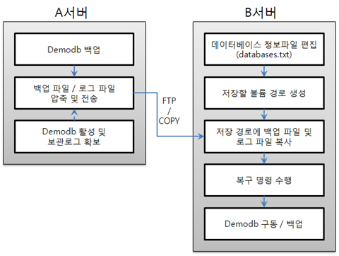

cubrid 유틸리티¶
cubrid 유틸리티의 사용법(구문)은 다음과 같다.
cubrid utility_name
utility_name :
createdb [option] <database_name> <locale_name> --- 데이터베이스 생성
deletedb [option] <database_name> --- 데이터베이스 삭제
installdb [option] <database-name> --- 데이터베이스 설치
renamedb [option] <source-database-name> <target-database-name> --- 데이터베이스 이름 변경
copydb [option] <source-database-name> <target-database-name> --- 데이터베이스 복사
backupdb [option] <database-name> --- 데이터베이스 백업
restoredb [option] <database-name> --- 데이터베이스 복구
addvoldb [option] <database-name> --- 데이터베이스 볼륨 파일 추가
spacedb [option] <database-name> --- 데이터베이스 공간 정보 출력
lockdb [option] <database-name> --- 데이터베이스의 lock 정보 출력
tranlist [option] <database-name> --- 트랜잭션 확인
killtran [option] <database-name> --- 트랜잭션 제거
optimizedb [option] <database-name> --- 데이터베이스 통계 정보 갱신
statdump [option] <database-name> --- 데이터베이스 서버 실행 통계 정보 출력
compactdb [option] <database-name> --- 사용되지 않는 영역을 해제, 공간 최적화
diagdb [option] <database-name> --- 내부 정보 출력
checkdb [option] <database-name> --- 데이터베이스 일관성 검사
alterdbhost [option] <database-name> --- 데이터베이스 호스트 변경
plandump [option] <database-name> --- 쿼리 플랜 캐시 정보 출력
loaddb [option] <database-name> --- 데이터 및 스키마 가져오기(로드)
unloaddb [option] <database-name> --- 데이터 및 스키마 내보내기(언로드)
paramdump [option] <database-name> --- 데이터베이스의 설정된 파라미터 값 확인
changemode [option] <database-name> --- 서버의 HA 모드 출력 또는 변경
applyinfo [option] <database-name> --- HA 환경에서 트랜잭션 로그 반영 정보를 확인하는 도구
synccolldb [option] <database-name> --- DB 콜레이션을 시스템 콜레이션에 맞게 변경하는 도구
genlocale [option] <database-name> --- 사용하고자 하는 로캘 정보를 컴파일하는 도구
dumplocale [option] <database-name> --- 컴파일된 바이너리 로캘 정보를 사람이 읽을 수 있는 텍스트로 출력하는 도구
gen_tz [option] [<database-name>] --- 공유 라이브러리로 컴파일할 수 있는 타임존 데이터가 포함된 C 소스 파일 생성
dump_tz [option] --- 타임존 관련 정보 출력
tde <operation> [option] <database_name> --- TDE 암호화 관리 도구
cubrid 유틸리티 로깅¶
CUBRID는 cubrid 유틸리티의 수행 결과에 대한 로깅 기능을 제공하며, 자세한 내용은 cubrid 유틸리티 로깅 을 참고한다.
createdb¶
cubrid createdb 유틸리티는 CUBRID 시스템에서 사용할 데이터베이스를 생성하고 미리 만들어진 CUBRID 시스템 테이블을 초기화한다. 데이터베이스에 권한이 주어진 초기 사용자를 정의할 수도 있다. 일반적으로 데이터베이스 관리자만이 cubrid createdb 유틸리티를 사용한다. 로그와 데이터베이스의 위치도 지정할 수 있다.
Warning
데이터베이스를 생성할 때 데이터베이스 이름 뒤에 로캘 이름과 문자셋(예: ko_KR.utf8)을 반드시 지정해야 한다. 문자셋에 따라 문자열 타입의 크기, 문자열 비교 연산 등에 영향을 끼친다. 데이터베이스 생성 시 지정된 문자셋은 변경할 수 없으므로 지정에 주의해야 한다.
문자셋, 로캘 및 콜레이션 설정과 관련된 자세한 내용은 다국어 개요 을 참고한다.
cubrid createdb [options] database_name locale_name.charset
cubrid: CUBRID 서비스 및 데이터베이스 관리를 위한 통합 유틸리티이다.
createdb: 새로운 데이터베이스를 생성하기 위한 명령이다.
database_name: 데이터베이스가 생성될 디렉터리 경로명을 포함하지 않고, 생성하고자 하는 데이터베이스의 이름을 고유하게 부여한다. 이 때, 지정한 데이터베이스 이름이 이미 존재하는 데이터베이스 이름과 중복되는 경우, CUBRID는 기존 파일을 보호하기 위하여 데이터베이스 생성을 더 이상 진행하지 않는다.
locale_name: 데이터베이스에서 사용할 로캘 이름을 입력한다. CUBRID에서 사용 가능한 로캘 이름은 1단계: 로캘 선택 을 참고한다.
charset: 데이터베이스에서 사용할 문자셋을 입력한다. CUBRID에서 사용 가능한 문자셋은 iso88591, euckr, utf8이다.
locale_name 이 en_US이고 charset 을 생략하면 문자셋은 iso88591이 된다.
locale_name 이 ko_KR이고 charset 을 생략하면 문자셋은 utf8이 된다.
나머지 locale_name 은 charset 을 생략할 수 없으며, utf8만 지정 가능하다.
데이터베이스 이름의 최대 길이는 영문 17자이다.
다음은 cubrid createdb 에 대한 [options]이다.
-
--db-volume-size=SIZE¶ 생성될 데이터베이스 볼륨의 크기를 지정한다. 기본값은 시스템 파라미터 db_volume_size 에 지정된 값이다. 단위는 K, M, G 및 T로 설정할 수 있으며, 각각 킬로바이트(KB), 메가바이트(MB), 기가바이트(GB) 및 테라바이트(TB)를 나타낸다. 단위를 생략하면 바이트 단위가 적용된다. 데이터베이스의 크기는 항상 64개 디스크 섹터의 배수로 올림된다. 이 값은 페이지의 크기에 따라 달라질 수 있으며, 페이지 크기가 각각 4k, 8k 및 16k인 경우 16M, 32M 또는 64M이 될 수 있다.
다음은 첫 번째로 생성되는 testdb의 볼륨 크기를 512MB로 지정하는 구문이다.
cubrid createdb --db-volume-size=512M testdb en_US
-
--db-page-size=SIZE¶ 데이터베이스 페이지 크기를 지정하는 옵션으로서, 최소값은 4K, 최대값은 16K(기본값)이다. K는 KB(kilobytes)를 의미한다. 데이터베이스 페이지 크기는 4K, 8K, 16K 중 하나의 값이 된다. 4K와 16K 사이의 값을 지정할 경우 지정한 값의 올림값으로 설정되며, 4K보다 작으면 4K로 설정되고 16K보다 크면 16K로 설정된다.
다음은 testdb를 생성하고, testdb의 데이터베이스 페이지 크기를 16K로 지정하는 구문이다.
cubrid createdb --db-page-size=16K testdb en_US
-
--log-volume-size=SIZE¶ 데이터베이스 로그 볼륨의 크기를 지정한다. 기본값은 데이터베이스 볼륨 크기와 같으며, 최소값은 20M이다. 단위는 K, M, G 및 T로 설정할 수 있으며, 각각 킬로바이트(KB), 메가바이트(MB), 기가바이트(GB) 및 테라바이트(TB)를 나타낸다. 단위를 생략하면 바이트 단위가 적용된다.
다음은 testdb 를 생성하고, testdb 의 로그 볼륨 크기를 256M로 지정하는 구문이다.
cubrid createdb --log-volume-size=256M testdb en_US
-
--log-page-size=SIZE¶ 생성되는 데이터베이스의 로그 볼륨 페이지 크기를 지정하는 옵션으로, 기본값은 데이터 페이지 크기와 같다. 최소값은 4K, 최대값은 16K이다. K는 KB(kilobytes)를 의미한다. 데이터베이스 페이지 크기는 4K, 8K, 16K 중 하나의 값이 된다. 4K와 16K 사이의 값을 지정할 경우 지정한 값의 올림값으로 설정되며, 4K보다 작으면 4K로 설정되고 16K보다 크면 16K로 설정된다.
다음은 testdb 를 생성하고, testdb 의 로그 볼륨 페이지 크기를 8kbyte로 지정하는 구문이다.
cubrid createdb -log-page-size=8K testdb en_US
-
--comment=COMMENT¶ 데이터베이스의 볼륨 헤더에 지정된 주석을 포함하는 옵션으로, 문자열에 공백이 포함되면 큰 따옴표로 감싸주어야 한다.
다음은 testdb 를 생성하고, 데이터베이스 볼륨에 이에 대한 주석을 추가하는 구문이다.
cubrid createdb --comment "a new database for study" testdb en_US
-
-F,--file-path=PATH¶ 새로운 데이터베이스가 생성되는 디렉터리의 절대 경로를 지정하는 옵션으로, -F 옵션을 지정하지 않으면 현재 작업 디렉터리에 새로운 데이터베이스가 생성된다.
다음은 testdb 라는 이름의 데이터베이스를 /dbtemp/new_db라는 디렉터리에 생성하는 구문이다.
cubrid createdb -F "/dbtemp/new_db/" testdb en_US
-
-L,--log-path=PATH¶ 데이터베이스의 로그 파일이 생성되는 디렉터리의 절대 경로를 지정하는 옵션으로, -L 옵션을 지정하지 않으면 -F 옵션에서 지정한 디렉터리에 생성된다. -F 옵션과 -L 옵션을 둘 다 지정하지 않으면 데이터베이스와 로그 파일이 현재 작업 디렉터리에 생성된다.
다음은 testdb 라는 이름의 데이터베이스를 /dbtemp/newdb라는 디렉터리에 생성하고, 로그 파일을 /dbtemp/db_log 디렉터리에 생성하는 구문이다.
cubrid createdb -F "/dbtemp/new_db/" -L "/dbtemp/db_log/" testdb en_US
-
-B,--lob-base-path=PATH¶ BLOB/CLOB 데이터를 사용하는 경우 LOB 데이터 파일이 저장되는 디렉터리의 경로를 지정하는 옵션으로, 이 옵션을 지정하지 않으면 <데이터베이스 볼륨이 생성되는 디렉터리> /lob 디렉터리에 LOB 데이터 파일이 저장된다.
다음은 testdb 를 현재 작업 디렉터리에 생성하고, LOB 데이터 파일이 저장될 디렉터리를 로컬 파일 시스템의 “/home/data1”으로 지정하는 구문이다.
cubrid createdb --lob-base-path "file:/home1/data1" testdb en_US
-
--server-name=HOST¶ CUBRID의 클라이언트/서버 버전을 사용할 때 특정 데이터베이스에 대한 서버가 지정한 호스트 상에 구동되도록 하는 옵션이다. 이 옵션으로 지정된 서버 호스트의 정보는 데이터베이스 위치 정보 파일( databases.txt )에 기록된다. 이 옵션이 지정되지 않으면 기본값은 현재 로컬 호스트이다.
다음은 testdb 를 aa_host 호스트 상에 생성 및 등록하는 구문이다.
cubrid createdb --server-name aa_host testdb en_US
-
-r,--replace¶ -r 은 지정된 데이터베이스 이름이 이미 존재하는 데이터베이스 이름과 중복되더라도 새로운 데이터베이스를 생성하고, 기존의 데이터베이스를 덮어쓰도록 하는 옵션이다.
다음은 testdb 라는 이름의 데이터베이스가 이미 존재하더라도 기존의 testdb 를 덮어쓰고 새로운 testdb 를 생성하는 구문이다.
cubrid createdb -r testdb en_US
-
--more-volume-file=FILE¶ 데이터베이스가 생성되는 디렉터리에 추가 볼륨을 생성하는 옵션으로 지정된 파일에 저장된 명세에 따라 추가 볼륨을 생성한다. 이 옵션을 이용하지 않더라도, cubrid addvoldb 유틸리티를 이용하여 볼륨을 추가할 수 있다.
다음은 testdb 를 생성함과 동시에 vol_info.txt에 저장된 명세를 기반으로 볼륨을 추가 생성하는 구문이다.
cubrid createdb --more-volume-file vol_info.txt testdb en_US
다음은 위 구문으로 vol_info.txt에 저장된 추가 볼륨에 관한 명세이다. 각 볼륨에 관한 명세는 라인 단위로 작성되어야 한다.
#xxxxxxxxxxxxxxxxxxxxxxxxxxxxxxxxxxxxxxxxxxxxxxxxxxxxxxxxxxxxxxxxxxxxxxxxxxxxxxxxx # NAME volname COMMENTS volcmnts PURPOSE volpurp NPAGES volnpgs NAME data_v1 COMMENTS "data information volume" PURPOSE data NPAGES 1000 NAME data_v2 COMMENTS "data information volume" NPAGES 1000 NAME temp_v1 COMMENTS "temporary information volume" PURPOSE temp NPAGES 500 #xxxxxxxxxxxxxxxxxxxxxxxxxxxxxxxxxxxxxxxxxxxxxxxxxxxxxxxxxxxxxxxxxxxxxxxxxxxxxxxxx
예제 파일에서와 같이 각 볼륨에 관한 명세는 다음과 같이 구성된다.
[NAME volname] [COMMENTS volcmnts] [PURPOSE volpurp] NPAGES volnpgs
volname: 추가 생성될 볼륨의 이름으로 Unix 파일 이름 규약을 따라야 하고, 디렉터리 경로를 포함하지 않는 단순한 이름이어야 한다. 볼륨명에 관한 명세는 생략할 수 있으며, 이 경우 시스템에 의해 “생성될 데이터베이스 이름_볼륨 식별자”로 볼륨명이 생성된다.
volcmnts: 볼륨 헤더에 기록되는 주석 문장으로, 추가 생성되는 볼륨에 관한 정보를 임의로 부여할 수 있다. 볼륨 주석에 관한 명세 역시 생략할 수 있다.
volpurp: :볼륨이 사용되는 용도를 나타낸다. 영구적 데이터(기본 옵션) 볼륨 또는 일시적 데이터 볼륨 중에 하나를 사용할 수 있다.
Note
이전 버전과의 호환성을 위해 data, index, temp 또는 generic 등 기존의 모든 키워드를 사용할 수 있다. temp 는 일시적 데이터 볼륨이고, 나머지는 영구적 데이터 볼륨을 나타낸다.
volnpgs: 생성될 추가 볼륨의 페이지 수를 나타낸다. 볼륨의 페이지 수 지정은 생략할 수 없으며, 반드시 지정해야 한다. 실제 볼륨 크기는 64 sectors 의 배수로 올림된다.
-
--user-definition-file=FILE¶ 생성하고자 하는 데이터베이스에 대해 권한이 있는 사용자를 추가하는 옵션으로, 파라미터로 지정된 사용자 정보 파일에 저장된 명세에 따라 사용자를 추가한다. –user-definition-file 옵션을 이용하지 않더라도 CREATE/ALTER/DROP USER 구문을 이용하여 사용자를 추가할 수 있다.
다음은 testdb 를 생성함과 동시에 user_info.txt에 정의된 사용자 정보를 기반으로 testdb 에 대한 사용자를 추가하는 구문이다.
cubrid createdb --user-definition-file=user_info.txt testdb en_US
사용자 정보 파일의 구문은 아래와 같다.
USER user_name [ <groups_clause> | <members_clause> ] <groups_clause>: [ GROUPS <group_name> [ { <group_name> }... ] ] <members_clause>: [ MEMBERS <member_name> [ { <member_name> }... ] ]
user_name: 데이터베이스에 대해 권한을 가지는 사용자 이름이며, 공백이 포함되지 않아야 한다.
GROUPS 절: 옵션이며, <group_name>은 지정된 <user_name>을 포함하는 상위 그룹의 이름이다. 이 때, <group_name>은 하나 이상이 지정될 수 있으며, USER 로 미리 정의되어야 한다.
MEMBERS 절: 옵션이며, <member_name> 은 지정된 <user_name>에 포함되는 하위 멤버의 이름이다. 이 때, <member_name>은 하나 이상이 지정될 수 있으며, USER 로 미리 정의되어야 한다.
사용자 정보 파일에서는 주석을 사용할 수 있으며, 주석 라인은 연속된 하이픈(–)으로 시작된다. 공백 라인은 무시된다.
다음 예제는 그룹 sedan 에 grandeur 와 sonata 가, 그룹 suv 에 tuscan 이, 그룹 hatchback 에 i30 가 포함되는 것을 정의하는 사용자 정보 파일이다. 사용자 정보 파일명은 user_info.txt로 예시한다.
-- -- 사용자 정보 파일의 예 1 -- USER sedan USER suv USER hatchback USER grandeur GROUPS sedan USER sonata GROUPS sedan USER tuscan GROUPS suv USER i30 GROUPS hatchback
위 예제와 동일한 사용자 관계를 정의하는 파일이다. 다만, 아래 예제에서는 MEMBERS 절을 이용하였다.
-- -- 사용자 정보 파일의 예 2 -- USER grandeur USER sonata USER tuscan USER i30 USER sedan MEMBERS sonata grandeur USER suv MEMBERS tuscan USER hatchback MEMBERS i30
-
--csql-initialization-file=FILE¶ 생성하고자 하는 데이터베이스에 대해 CSQL 인터프리터에서 구문을 실행하는 옵션으로, 파라미터로 지정된 파일에 저장된 SQL 구문에 따라 스키마를 생성할 수 있다.
다음은 testdb 를 생성함과 동시에 table_schema.sql에 정의된 SQL 구문을 CSQL 인터프리터에서 실행시키는 구문이다.
cubrid createdb --csql-initialization-file table_schema.sql testdb en_US
-
-o,--output-file=FILE¶ 데이터베이스 생성에 관한 메시지를 파라미터로 지정된 파일에 저장하는 옵션이며, 파일은 데이터베이스와 동일한 디렉터리에 생성된다. -o 옵션이 지정되지 않으면 메시지는 콘솔 화면에 출력된다. -o 옵션은 데이터베이스가 생성되는 중에 출력되는 메시지를 지정된 파일에 저장함으로써 특정 데이터베이스의 생성 과정에 관한 정보를 활용할 수 있게 한다.
다음은 testdb 를 생성하면서 이에 관한 유틸리티의 출력을 콘솔 화면이 아닌 db_output 파일에 저장하는 구문이다.
cubrid createdb -o db_output testdb en_US
-
-v,--verbose¶ 데이터베이스 생성 연산에 관한 모든 정보를 화면에 출력하는 옵션으로서, -o 옵션과 마찬가지로 특정 데이터베이스 생성 과정에 관한 정보를 확인하는데 유용하다. 따라서, -v 옵션과 -o 옵션을 함께 지정하면, -o 옵션의 파라미터로 지정된 출력 파일에 cubrid createdb 유틸리티의 연산 정보와 생성 과정에 관한 출력 메시지를 저장할 수 있다.
다음은 testdb 를 생성하면서 이에 관한 상세한 연산 정보를 화면에 출력하는 구문이다.
cubrid createdb -v testdb en_US
Note
temp_file_max_size_in_pages 는 복잡한 질의문이나 정렬 수행에 사용되는 일시적 볼륨을 디스크에 저장하는 데에 할당되는 최대 페이지 개수를 설정하는 파라미터이다. 기본값은 -1 로, temp_volume_path 파라미터가 지정한 디스크의 여유 공간까지 일시적 볼륨이 커질 수 있다. 0이면 일시적 볼륨이 생성되지 않으므로 cubrid addvoldb 유틸리티를 이용하여 영구적 임시 볼륨을 충분히 추가해야 한다. 볼륨을 효율적으로 관리하기 위해서는 후자의 방법을 사용할 것을 권장한다.
cubrid spacedb 유틸리티를 사용하면 각 볼륨의 남은 공간을 확인할 수 있다. cubrid addvoldb 유틸리티를 사용하면 데이터베이스를 관리하면서 필요에 따라 볼륨을 더 추가할 수 있다. 시스템 부하가 적을 때 볼륨을 추가하는 것이 좋다. 사전 할당된 볼륨이 모두 사용 중이면 데이터베이스 시스템에서는 자동으로 새 볼륨을 생성한다.
다음 예제에서는 영구적 임시 볼륨을 포함한 여러 볼륨을 추가하는 데이터베이스 생성 방법을 보여준다.
cubrid createdb --db-volume-size=512M --log-volume-size=256M cubriddb en_US
cubrid addvoldb -S -n cubriddb_DATA01 --db-volume-size=512M cubriddb
cubrid addvoldb -S -p temp -n cubriddb_TEMP01 --db-volume-size=512M cubriddb
Note
기존 키 파일을 사용하는 데이터베이스 생성
데이터베이스가 생성될 때 기본적으로 키 파일이 함께 생성된다. 만약 데이터베이스 생성 시 기존 키 파일을 사용하고 싶다면, 먼저 키 파일을 <database-name>_keys 이름으로 복사해 둔다. 이후 복사한 키 파일의 디렉토리를 tde_keys_file_path 시스템 파라미터에 지정하고 createdb 유틸리티를 통해 데이터베이스를 생성한다. TDE 키 파일에 관한 자세한 내용은 파일 기반의 마스터 키 관리 를 참고한다.
addvoldb¶
CUBRID 볼륨을 세부적으로 관리하려면 addvoldb 를 사용하면 된다. 각 볼륨 파일명, 경로, 용도 및 크기를 세분해서 관리할 수 있다. 데이터베이스 시스템은 모든 볼륨을 직접 관리할 수 있으나, 옵션을 생략하면 각각의 새 볼륨을 구성할 때는 기본값을 사용한다
데이터베이스 볼륨을 수동으로 추가하기 위한 명령은 다음과 같다.
cubrid addvoldb [options] database_name
cubrid: CUBRID 서비스 및 데이터베이스 관리를 위한 통합 유틸리티이다.
addvoldb: 지정된 데이터베이스에 지정된 페이지 수만큼 새로운 볼륨을 추가하기 위한 명령이다.
database_name: 데이터베이스가 생성될 디렉터리 경로명을 포함하지 않고, 볼륨을 추가하고자 하는 데이터베이스의 이름을 지정한다.
다음은 데이터베이스를 생성하고 볼륨 용도를 구분하여 데이터(data), 인덱스(index), 임시(temp) 볼륨을 추가하는 예이다.
cubrid createdb --db-volume-size=512M --log-volume-size=256M cubriddb en_US
cubrid addvoldb -S -n cubriddb_DATA01 --db-volume-size=512M cubriddb
cubrid addvoldb -S -p temp -n cubriddb_TEMP01 --db-volume-size=512M cubriddb
다음은 cubrid addvoldb 에 대한 [options]이다.
-
--db-volume-size=SIZE¶ –db-volume-size 지정한 데이터베이스에 추가될 볼륨 크기를 지정하는 옵션이다. –db-volume-size 옵션을 생략하면 시스템 파라미터 db_volume_size 의 값이 기본값으로 사용된다. 단위는 K, M, G 및 T로 설정할 수 있으며, 각각 킬로바이트(KB), 메가바이트(MB), 기가바이트(GB) 및 테라바이트(TB)를 나타낸다. 단위를 생략하면 바이트 단위가 적용된다. 데이터베이스의 크기는 항상 64개 디스크 섹터의 배수로 올림된다. 이 값은 페이지의 크기에 따라 달라질 수 있으며, 페이지 크기가 각각 4k, 8k 및 16k인 경우 16M, 32M 또는 64M이 될 수 있다
다음은 testdb 에 데이터 볼륨을 추가하며 볼륨 크기를 256MB로 지정하는 구문이다.
cubrid addvoldb --db-volume-size=256M testdb
-
-n,--volume-name=NAME¶ 지정된 데이터베이스에 대하여 추가될 볼륨의 이름을 지정하는 옵션이다. 볼륨명은 운영체제의 파일 이름 규약을 따라야 하고, 디렉터리 경로나 공백을 포함하지 않는 단순한 이름이어야 한다. -n 옵션을 생략하면 추가되는 볼륨의 이름은 시스템에 의해 “데이터베이스 이름_볼륨 식별자”로 자동 부여된다. 예를 들어, 데이터베이스 이름이 testdb 이면 자동 부여된 볼륨명은 testdb_x001 이 된다.
다음은 testdb라는 데이터베이스에 볼륨을 추가하는 예이며, 추가되는 볼륨명은 testdb_v1 이 된다.
cubrid addvoldb -n testdb_v1 testdb
-
-F,--file-path=PATH¶ 지정된 데이터베이스에 대하여 추가될 볼륨이 저장되는 디렉터리 경로를 지정하는 옵션이다. -F 옵션을 생략하면, 시스템 파라미터인 volume_extension_path 의 값이 기본값으로 사용된다.
다음은 testdb라는 데이터베이스에 볼륨을 추가하는 구문이며, 추가 볼륨은 /dbtemp/addvol 디렉터리에 생성된다. 볼륨명에 관한 -n 옵션을 지정하지 않았으므로, 볼륨명은 testdb_x001 으로 만들어진다.
cubrid addvoldb -F /dbtemp/addvol/ testdb
-
--comment=COMMENT¶ 추가된 볼륨에 관한 정보 검색을 쉽게 하기 위하여 볼륨에 관한 정보를 주석으로 처리하는 옵션이다. 이때 주석의 내용은 볼륨을 추가하는 DBA 의 이름이나 볼륨 추가의 목적을 포함하는 것이 바람직하며, 큰따옴표로 감싸야 한다.
다음은 볼륨을 추가하고 추가 정보로 주석을 삽입하는 구문이다.
cubrid addvoldb --comment "Data volume added by cheolsoo kim because permanent data space was almost depleted." testdb
-
-p,--purpose=PURPOSE¶ 추가될 볼륨의 용도를 지정한다. 지정된 용도는 추가된 볼륨의 파일 타입들을 정의한다.
PERMANENT DATA : 테이블 행, 인덱스 및 시스템 파일 저장.
TEMPORARY DATA : 질의 처리 및 정렬을 수행할 때 중간 결과와 최종 결과 저장.
이 옵션이 지정되지 않은 경우 해당 볼륨의 용도는 기본적으로 PERMANENT DATA 로 간주한다. 다음은 임시 데이터 용도로 볼륨을 추가하는 구문이다.
cubrid addvoldb -p temp testdb
Note
예전 버전에는 PERMANENT DATA 볼륨이 generic, data 및 index로 구분되었으나, 이번 버전부터는 볼륨 구조에 대한 설계가 변경되어 볼륨의 구분이 없어졌다. 그러나 기존에 사용하던 스크립트의 오류를 방지하기 위해 예전에 사용하였던 keyword(generic, data, index)는 유지하였고, 기존 버전의 temp는 동일한 용도로 유지하였다.
각 용도에 대한 자세한 내용은 데이터베이스 볼륨 구조 를 참고한다.
-
-S,--SA-mode¶ 서버 프로세스를 구동하지 않고 데이터베이스에 접근하는 독립 모드(standalone)로 작업하기 위해 지정되며, 인수는 없다. -S 옵션을 지정하지 않으면, 시스템은 클라이언트/서버 모드로 인식한다.
cubrid addvoldb -S --db-volume-size=256M testdb
-
-C,--CS-mode¶ 서버 프로세스와 클라이언트 프로세스를 각각 구동하여 데이터베이스에 접근하는 클라이언트/서버 모드로 작업하기 위한 옵션이며, 인수는 없다. -C 옵션을 지정하지 않더라도 시스템은 기본적으로 클라이언트/서버 모드로 인식한다.
cubrid addvoldb -C --db-volume-size=256M testdb
-
--max-writesize-in-sec=SIZE¶ 데이터베이스에 볼륨을 추가할 때 디스크 출력량을 제한하여 시스템 운영 영향을 줄이도록 하는 옵션이다. 이 옵션을 통해 1초당 쓸 수 있는 최대 크기를 지정할 수 있으며, 단위는 K(kilobytes), M(megabytes)이다. 최소값은 160K이며, 이보다 작게 값을 설정하면 160K로 바뀐다. 단, 클라이언트/서버 모드(-C)에서만 사용 가능하다.
다음은 2GB 볼륨을 초당 1MB씩 쓰도록 하는 예이다. 소요 시간은 35분( = (2048MB / 1MB) / 60초 ) 정도가 예상된다.
cubrid addvoldb -C --db-volume-size=2G --max-writesize-in-sec=1M testdb
deletedb¶
cubrid deletedb 는 데이터베이스를 삭제하는 유틸리티이다. 데이터베이스가 몇 개의 상호 의존적 파일들로 만들어지기 때문에, 데이터베이스를 제거하기 위해 운영체제 파일 삭제 명령이 아닌 cubrid deletedb 유틸리티를 사용해야 한다.
cubrid deletedb 유틸리티는 데이터베이스 위치 파일( databases.txt )에 지정된 데이터베이스에 대한 정보도 같이 삭제한다. cubrid deletedb 유틸리티는 오프라인 상에서 즉, 아무도 데이터베이스를 사용하지 않는 상태에서 독립 모드로 사용해야 한다.
cubrid deletedb [options] database_name
cubrid: CUBRID 서비스 및 데이터베이스 관리를 위한 통합 유틸리티이다.
deletedb: 데이터베이스 및 관련 데이터, 로그, 백업 파일을 전부 삭제하기 위한 명령으로, 데이터베이스 서버가 구동 정지 상태인 경우에만 정상적으로 수행된다.
database_name: 디렉터리 경로명을 포함하지 않고, 삭제하고자 하는 데이터베이스의 이름을 지정한다
다음은 cubrid deletedb 에 대한 [options]이다.
-
-o,--output-file=FILE¶ 데이터베이스를 삭제하면서 출력되는 메시지를 인자로 지정한 파일에 기록하는 명령이다. cubrid deletedb 유틸리티를 사용하면 데이터베이스 위치 정보 파일( databases.txt )에 기록된 데이터베이스 정보가 함께 삭제된다.
cubrid deletedb -o deleted_db.out testdb
만약, 존재하지 않는 데이터베이스를 삭제하는 명령을 입력하면 다음과 같은 메시지가 출력된다.
cubrid deletedb testdb Database "testdb" is unknown, or the file "databases.txt" cannot be accessed.
-
-d,--delete-backup¶ 데이터베이스를 삭제하면서 백업 볼륨 및 백업 정보 파일도 함께 삭제할 수 있다. -d 옵션을 지정하지 않으면 백업 볼륨 및 백업 정보 파일은 삭제되지 않는다.
cubrid deletedb -d testdb
renamedb¶
cubrid renamedb 유틸리티는 존재하는 데이터베이스의 현재 이름을 변경한다. 정보 볼륨, 로그 볼륨, 제어 파일들이 새로운 이름과 일치되게 이름을 변경한다.
이에 비해 cubrid alterdbhost 유틸리티는 지정된 데이터베이스의 호스트 이름을 설정하거나 변경한다. 즉, databases.txt 에 있는 호스트 이름을 변경한다.
cubrid renamedb [options] src_database_name dest_database_name
cubrid: CUBRID 서비스 및 데이터베이스 관리를 위한 통합 유틸리티이다.
renamedb: 현재 존재하는 데이터베이스의 이름을 새로운 이름으로 변경하기 위한 명령으로, 데이터베이스가 구동 정지 상태인 경우에만 정상적으로 수행된다. 관련된 정보 볼륨, 로그 볼륨, 제어 파일도 함께 새로 지정된 이름으로 변경된다.
src_database_name: 이름을 바꾸고자 하는 현재 존재하는 데이터베이스의 이름이며, 데이터베이스가 생성될 디렉터리 경로명을 포함하지 않는다.
dest_database_name: 새로 부여하고자 하는 데이터베이스의 이름이며, 현재 존재하는 데이터베이스 이름과 중복되어서는 안 된다. 이 역시, 데이터베이스가 생성될 디렉터리 경로명을 포함하지 않는다.
다음은 cubrid renamedb 에 대한 [options]이다.
-
-E,--extented-volume-path=PATH¶ 확장 볼륨의 이름을 변경한 후 새 디렉터리 경로로 이동하는 명령으로서, -E 옵션을 이용하여 변경된 이름을 가지는 확장 볼륨을 이동시킬 새로운 디렉터리 경로(예: /dbtemp/newaddvols/)를 지정한다.
-E 옵션을 주지 않으면, 확장 볼륨은 기존 위치에서 이름만 변경된다. 이때, 기존 데이터베이스 볼륨의 디스크 파티션 외부에 있는 디렉터리 경로 또는 유효하지 않은 디렉터리 경로가 지정되는 경우 데이터베이스 이름 변경 작업은 수행되지 않으며, -i 옵션과 병행될 수 없다.
cubrid renamedb -E /dbtemp/newaddvols/ testdb testdb_1
-
-i,--control-fileFILE¶ 각 볼륨 또는 파일에 대하여 일괄적으로 데이터베이스 이름을 변경하면서 디렉터리 경로를 상이하게 지정하기 위해 디렉터리 정보가 저장된 입력 파일을 지정하는 명령으로서, -i 옵션을 이용한다. 이때, -i 옵션은 -E 옵션과 병행될 수 없다.
cubrid renamedb -i rename_path testdb testdb_1
다음은 개별적 볼륨들의 이름과 현재 디렉터리 경로, 그리고 변경된 이름의 볼륨들이 저장될 디렉터리 경로를 포함하는 파일의 구문 및 예시이다.
volid source_fullvolname dest_fullvolname
volid: 각 볼륨을 식별하기 위한 정수이며, 데이터베이스 볼륨 정보 제어 파일(database_name_vinf)를 통해 확인할 수 있다.
source_fullvolname: 각 볼륨에 대한 현재 디렉터리 경로이다.
dest_fullvolname: 이름이 변경된 새로운 볼륨이 이동될 목적지 디렉터리 경로이다. 만약, 목적지 디렉터리가 유효하지 않은 경우 데이터베이스 이름 변경 작업은 수행되지 않는다.
-5 /home1/user/testdb_vinf /home1/CUBRID/databases/testdb_1_vinf -4 /home1/user/testdb_lginf /home1/CUBRID/databases/testdb_1_lginf -3 /home1/user/testdb_bkvinf /home1/CUBRID/databases/testdb_1_bkvinf -2 /home1/user/testdb_lgat /home1/CUBRID/databases/testdb_1_lgat 0 /home1/user/testdb /home1/CUBRID/databases/testdb_1 1 /home1/user/backup/testdb_x001 /home1/CUBRID/databases/backup/testdb_1_x001
-
-d,--delete-backup¶ 데이터베이스의 이름을 변경하면서 데이터베이스와 와 동일 위치에 있는 모든 백업 볼륨 및 백업 정보 파일을 함께 강제 삭제하는 명령이다. 일단, 데이터베이스 이름이 변경되면 이보다 앞선 이름의 백업 파일은 이용할 수 없으므로 주의해야 한다. 만약, -d 옵션을 지정하지 않으면 백업 볼륨 및 백업 정보 파일은 삭제되지 않는다.
cubrid renamedb -d testdb testdb_1
alterdbhost¶
cubrid alterdbhost 유틸리티는 지정된 데이터베이스의 호스트 이름을 설정하거나 변경한다. 즉, databases.txt 에 있는 호스트 이름을 변경한다.
cubrid alterdbhost [<option>] database_name
cubrid: CUBRID 서비스 및 데이터베이스 관리를 위한 통합 유틸리티이다.
alterdbhost: 현 데이터베이스의 호스트 이름을 새로운 이름으로 변경하기 위한 명령이다.
cubrid alterdbhost 에서 사용하는 옵션은 다음과 같다.
-
-h,--host=HOST¶ 뒤에 변경할 호스트 이름을 지정하며, 옵션을 생략하면 호스트 이름으로 localhost를 지정한다.
copydb¶
cubrid copydb 유틸리티는 데이터베이스를 한 위치에서 다른 곳으로 복사 또는 이동하며, 인자로 원본 데이터베이스 이름과 새로운 데이터베이스 이름이 지정되어야 한다. 이때, 새로운 데이터베이스 이름은 원본 데이터베이스 이름과 다른 이름으로 지정되어야 하고, 새로운 데이터베이스에 대한 위치 정보는 databases.txt 에 등록된다.
cubrid copydb 유틸리티는 원본 데이터베이스가 정지 상태일 때(오프라인)에만 실행할 수 있다.
cubrid copydb [<options>] src-database-name dest-database-name
cubrid: CUBRID 서비스 및 데이터베이스 관리를 위한 통합 유틸리티이다.
copydb: 원본 데이터베이스를 새로운 위치로 이동 또는 복사하는 명령이다.
src-database-name: 복사 또는 이동하고자 하는 원본 데이터베이스 이름이다.
dest-database-name: 새로운 데이터베이스 이름이다.
[options]를 생략하면 원본 데이터베이스를 현재 작업 디렉터리에 복사한다.
cubrid copydb 에 대한 [options]는 다음과 같다.
-
--server-name=HOST¶ 새로운 데이터베이스의 서버 호스트 이름을 명시하며, 이는 databases.txt 의 db-host 항목에 등록된다. 이 옵션을 생략하면, 로컬 호스트가 등록된다.
cubrid copydb --server-name=cub_server1 demodb new_demodb
-
-F,--file-path=PATH¶ 새로운 데이터베이스 볼륨이 저장되는 특정 디렉터리 경로를 지정할 수 있다. 절대 경로로 지정해야 하며, 존재하지 않는 디렉터리를 지정하면 에러를 출력한다. 이 옵션을 생략하면 현재 작업 디렉터리에 새로운 데이터베이스의 볼륨이 생성된다. 이 경로는 databases.txt 의 vol-path 항목에 등록된다.
cubrid copydb -F /home/usr/CUBRID/databases demodb new_demodb
-
-L,--log-path=PATH¶ 새로운 데이터베이스 로그 볼륨이 저장되는 특정 디렉터리 경로를 지정할 수 있다. 절대 경로로 지정해야 하며, 존재하지 않는 디렉터리를 지정하면 에러를 출력한다. 이 옵션을 생략하면 새로운 데이터베이스 볼륨이 저장되는 경로에 로그 볼륨도 함께 생성된다. 이 경로는 databases.txt 의 log-path 항목에 등록된다.
cubrid copydb -L /home/usr/CUBRID/databases/logs demodb new_demodb
-
-E,--extended-volume-path=PATH¶ 새로운 데이터베이스의 확장 정보 볼륨이 저장되는 특정 디렉터리 경로를 지정할 수 있다. 이 옵션을 생략하면 새로운 데이터베이스 볼륨이 저장되는 경로 또는 제어 파일에 등록된 경로에 확장 정보 볼륨이 저장된다. -i 옵션과 병행될 수 없다.
cubrid copydb -E home/usr/CUBRID/databases/extvols demodb new_demodb
-
-i,--control-file=FILE¶ 대상 데이터베이스에 대한 복수 개의 볼륨들을 각각 다른 디렉터리에 복사 또는 이동하기 위해서, 원본 볼륨의 경로 및 새로운 디렉터리 경로 정보를 포함하는 입력 파일을 지정할 수 있다. 이때, -i 옵션은 -E 옵션과 병행될 수 없다. 아래 예제에서는 copy_path라는 입력 파일을 예로 사용했다.
cubrid copydb -i copy_path demodb new_demodb
다음은 각 볼륨들의 이름과 현재 디렉터리 경로, 그리고 새로 복사할 디렉터리 및 새로운 볼륨 이름을 포함하는 입력 파일의 예시이다.
# volid source_fullvolname dest_fullvolname 0 /usr/databases/demodb /drive1/usr/databases/new_demodb 1 /usr/databases/demodb_data1 /drive1/usr/databases/new_demodb_data1 2 /usr/databases/ext/demodb_ext1 /drive2//usr/databases/new_demodb_ext1 3 /usr/databases/ext/demodb_ext2 /drive2/usr/databases/new_demodb_ext2
volid : 각 볼륨을 식별하기 위한 정수이며, 데이터베이스 볼륨 정보 제어 파일( database_name_vinf )를 통해 확인할 수 있다.
source_fullvolname : 원본 데이터베이스의 각 볼륨이 존재하는 현재 디렉터리 경로이다.
dest_fullvolname : 새로운 데이터베이스의 각 볼륨이 저장될 디렉터리 경로이며, 유효한 디렉터리를 지정해야 한다.
-
-r,--replace¶ 새로운 데이터베이스 이름이 기존 데이터베이스 이름과 중복되더라도 에러를 출력하지 않고 덮어쓴다.
cubrid copydb -r -F /home/usr/CUBRID/databases demodb new_demodb
-
-d,--delete-source¶ 새로운 데이터베이스로 복사한 후, 원본 데이터베이스를 제거한다. 이 옵션이 주어지면 데이터베이스 복사 후 cubrid deletedb 를 수행하는 것과 동일하다. 단, 원본 데이터베이스에 LOB 데이터를 포함하는 경우, 원본 데이터베이스 대한 LOB 파일 디렉터리 경로가 새로운 데이터베이스로 복사되어 databases.txt 의 lob-base-path 항목에 등록된다.
cubrid copydb -d -F /home/usr/CUBRID/databases demodb new_demodb
-
--copy-lob-path=PATH¶ 원본 데이터베이스에 대한 LOB 파일 디렉터리 경로를 새로운 데이터베이스의 LOB 파일 경로로 복사하고, 원본 데이터베이스를 복사한다. 이 옵션을 생략하면, LOB 파일 디렉터리 경로를 복사하지 않으므로, databases.txt 파일의 lob-base-path 항목을 별도로 수정해야 한다. 이 옵션은 -B 옵션과 병행할 수 없다.
cubrid copydb --copy-lob-path=/home/usr/CUBRID/databases/new_demodb/lob demodb new_demodb
-
-B,--lob-base-path=PATH¶ -B 옵션을 사용하여 특정 디렉터리를 새로운 데이터베이스에 대한 LOB 파일 디렉터리 경로를 지정한다. 원본 데이터베이스에 있던 LOB 파일들은 사용자가 직접 이 디렉터리에 복사해야 한다. 이 옵션은 –copy-lob-path 옵션과 병행할 수 없다.
cubrid copydb -B /home/usr/CUBRID/databases/new_lob demodb new_demodb
installdb¶
cubrid installdb 유틸리티는 데이터베이스 위치 정보를 저장하는 databases.txt 에 새로 설치된 데이터베이스 정보를 등록한다. 이 유틸리티의 실행은 등록 대상 데이터베이스의 동작에 영향을 끼치지 않는다.
cubrid installdb [<options>] database_name
cubrid: CUBRID 서비스 및 데이터베이스 관리를 위한 통합 유틸리티이다.
installdb: 이동 또는 복사된 데이터베이스의 정보를 databases.txt 에 등록하는 명령이다.
database_name: databases.txt 에 등록하고자 하는 데이터베이스의 이름이다.
[options]를 생략하는 경우, 해당 데이터베이스가 존재하는 디렉터리에서 명령을 수행해야 한다.
cubrid installdb 에 대한 [options]는 다음과 같다.
-
--server-name=HOST¶ 대상 데이터베이스의 서버 호스트 정보를 지정된 호스트 명으로 databases.txt 에 등록한다. 이 옵션을 생략하면, 현재의 호스트 정보가 등록된다.
cubrid installdb --server-name=cub_server1 testdb
-
-L,--log-path=PATH¶ 대상 데이터베이스 로그 볼륨 디렉터리의 절대 경로를 databases.txt 에 등록한다. 이 옵션을 생략하면 데이터베이스 볼륨의 디렉터리 경로가 등록된다.
cubrid installdb -L /home/cubrid/CUBRID/databases/logs/testdb testdb
backupdb¶
데이터베이스 백업은 CUBRID 데이터베이스 볼륨, 제어 파일, 로그 파일을 저장하는 작업으로 cubrid backupdb 유틸리티 또는 CUBRID 매니저를 이용하여 수행된다. DBA 는 저장 매체의 오류 또는 파일 오류 등의 장애에 대비하여 데이터베이스를 정상적으로 복구할 수 있도록 주기적으로 데이터베이스를 백업해야 한다. 이 때 복구 환경은 백업 환경과 동일한 운영체제 및 동일한 버전의 CUBRID가 설치된 환경이어야 한다. 이러한 이유로 데이터베이스를 새로운 버전으로 마이그레이션한 후에는 즉시 새로운 버전의 환경에서 백업을 수행해야 한다.
cubrid backupdb 유틸리티는 모든 데이터베이스 페이지들, 제어 파일들, 데이터베이스를 백업 시와 일치된 상태로 복구하기 위해 필요한 로그 레코드들을 복사한다.
cubrid backupdb [options] database_name[@hostname]
@hostname: 독립(Standalone) 모드 DB를 백업하는 경우 생략되며, HA 환경에서 백업하는 경우 데이터베이스 이름 뒤에 “@hostname”을 지정한다. hostname은 $CUBRID_DATABASES/databases.txt에 지정된 이름이다. 로컬 서버를 설정하려면 “@localhost”를 지정하면 된다.
다음은 cubrid backupdb 유틸리티와 결합할 수 있는 옵션이다. 대소문자가 구분됨을 주의한다.
-
-D,--destination-path=PATH¶ 지정된 디렉터리에 백업 파일이 저장되도록 하며, 현재 존재하는 디렉터리가 지정되어야 한다. 그렇지 않으면 지정한 이름의 백업 파일이 생성된다. -D 옵션이 지정되지 않으면 백업 파일은 해당 데이터베이스의 위치 정보를 저장하는 파일인 databases.txt 에 명시된 로그 디렉터리에 생성된다.
cubrid backupdb -D /home/cubrid/backup demodb
-D 옵션을 이용하여 현재 디렉터리에 백업 파일이 저장되도록 한다. -D 옵션의 인수로 “.”을 입력하면 현재 디렉터리가 지정된다.
cubrid backupdb -D . demodb
-
-r,--remove-archive¶ 활성 로그(active log)가 꽉 차면 활성 로그를 새로운 보관 로그 파일에 기록한다. 이때 백업을 수행하여 백업 볼륨이 생성되면, 백업 시점보다 앞의 보관 로그는 추후 복구 작업에 불필요하다. -r 옵션은 백업을 수행한 후에, 추후 복구 작업에 더 이상 사용되지 않을 보관 로그 파일을 제거하는 옵션이다. -r 옵션은 백업 시점 이전의 불필요한 보관 로그만 제거하므로 복구 작업에는 영향을 끼치지 않지만, 관리자가 백업 시점 이후의 보관 로그까지 제거하는 경우 전체 복구가 불가능할 수도 있다. 따라서 보관 로그를 제거할 때에는 추후 복구 작업에 필요한 것인지 반드시 검토해야 한다.
-r 옵션을 사용하여 증분 백업(백업 수준 1 또는 2)을 수행하는 경우, 추후 데이터베이스의 정상 복구가 불가능할 수도 있으므로 -r 옵션은 전체 백업 수행 시에만 사용하는 것을 권장한다.
cubrid backupdb -r demodb
-
-l,--level=LEVEL¶ 지정된 백업 수준으로 증분 백업을 수행한다. -l 옵션이 지정되지 않으면 전체 백업이 수행된다. 백업 수준에 대한 자세한 내용은 증분 백업 을 참조한다.
cubrid backupdb -l 1 demodb
-
-o,--output-file=FILE¶ 대상 데이터베이스의 백업에 관한 진행 정보를 info_backup이라는 파일에 기록한다.
cubrid backupdb -o info_backup demodb
다음은 info_backup 파일 내용의 예시로서, 스레드 개수, 압축 방법, 백업 시작 시간, 영구 볼륨의 개수, 백업 진행 정보, 백업 완료 시간 등의 정보를 확인할 수 있다.
[ Database(demodb) Full Backup start ] - num-threads: 1 - compression method: NONE - backup start time: Mon Jul 21 16:51:51 2008 - number of permanent volumes: 1 - backup progress status ----------------------------------------------------------------------------- volume name | # of pages | backup progress status | done ----------------------------------------------------------------------------- demodb_keys | 1 | ######################### | done demodb_vinf | 1 | ######################### | done demodb | 25000 | ######################### | done demodb_lginf | 1 | ######################### | done demodb_lgat | 25000 | ######################### | done ----------------------------------------------------------------------------- # backup end time: Mon Jul 21 16:51:53 2008 [Database(demodb) Full Backup end]
-
-S,--SA-mode¶ 독립 모드, 즉 오프라인으로 백업을 수행한다. -S 옵션이 생략되면 클라이언트/서버 모드에서 백업이 수행된다.
cubrid backupdb -S demodb
-
-C,--CS-mode¶ 클라이언트/서버 모드에서 백업을 수행하며, demodb를 온라인 백업한다. -C 옵션이 생략되면 클라이언트/서버 모드에서 백업이 수행된다.
cubrid backupdb -C demodb
-
--no-check¶ 대상 데이터베이스의 일관성을 체크하지 않고 백업을 수행한다.
cubrid backupdb --no-check demodb
-
-t,--thread-count=COUNT¶ 관리자가 임의로 스레드의 개수를 지정함으로써 병렬 백업을 수행한다. -t 옵션의 인수를 지정하지 않더라도 시스템의 CPU 개수만큼 스레드를 자동 부여하여 병렬 백업을 수행한다.
cubrid backupdb -t 4 demodb
-
-z,--compress¶ 대상 데이터베이스를 압축하여 백업 파일에 저장한다. -z 옵션을 사용하면, 백업 파일의 크기 및 백업 시간을 단축시킬 수 있다.
cubrid backupdb -z demodb
-
--sleep-msecs=NUMBER¶ 대상 데이터베이스를 백업하는 도중 쉬는 시간을 설정한다. 단위는 밀리초이며, 기본값은 0 이다. 1MB의 파일을 읽을 때마다 설정한 시간만큼 쉰다. 백업 작업이 과도한 디스크 I/O를 유발하기 때문에, 운영 중인 서비스에 백업 작업으로 인한 영향을 줄이고자 할 때 이 옵션이 사용된다.
cubrid backupdb --sleep-msecs=5 demodb
-
-k,--separate-keys¶ 백업 볼륨에 키 파일을 포함하지 않는다. 포함되지 않은 키는 <database_name>_bk<backup_level>_keys 라는 이름을 가진 별도의 파일로 분리된다. 옵션을 주지 않을 경우 기본적으로 키 파일은 백업 볼륨에 포함된다. 키 파일 분리에 대한 자세한 설명은 백업 볼륨 암호화 을 참고한다.
cubrid backupdb --seprate-keys demodb
백업 정책 및 방식¶
백업을 진행할 때 고려해야 할 사항은 다음과 같다.
백업할 대상 데이터 선별
보존 가치가 있는 유효한 데이터인지 판단한다.
데이터베이스 전체를 백업할 것인지, 일부만 백업할 것인지 결정한다.
데이터베이스와 함께 백업해야 할 다른 파일이 있는지 확인한다.
백업 방식 결정
증분 백업, 온라인 백업 방식을 결정한다. 부가적으로 압축 백업, 병렬 백업 모드 사용 여부를 결정한다.
사용 가능한 백업 도구 및 백업 장비를 준비한다.
백업 시기 판단
데이터베이스 사용이 가장 적은 시간을 파악한다.
보관 로그의 양을 파악한다.
백업할 데이터베이스를 이용하는 클라이언트 수를 파악한다.
온라인 백업
온라인 백업(또는 핫 백업)은 운영 중인 데이터베이스에 대해 백업을 수행하는 방식으로, 특정 시점의 데이터베이스 이미지의 스냅샷을 제공한다. 운영 중인 데이터베이스를 대상으로 백업을 수행하기 때문에 커밋되지 않은 데이터가 저장될 우려가 있고, 다른 데이터베이스 운영에도 영향을 줄 수 있다.
온라인 백업을 하려면 cubrid backupdb -C 명령어를 사용한다.
오프라인 백업
오프라인 백업(또는 콜드 백업)은 정지 상태인 데이터베이스에 대해 백업을 수행하는 방식으로 특정 시점의 데이터베이스 이미지의 스냅샷을 제공한다.
오프라인 백업을 하려면 cubrid backupdb -S 명령어를 사용한다.
증분 백업
증분 백업(incremental backup)은 전체 백업에 종속적으로 수행되는 백업으로 먼저 수행된 백업 이후의 변경된 사항만을 선택적으로 백업하는 방식이다. 이는 전체 백업보다 백업 볼륨이 적고, 백업 소요 시간이 짧다는 장점이 있다. CUBRID는 0, 1, 2의 백업 수준을 제공하며, 낮은 백업 수준으로 백업을 수행한 이후에만 순차적으로 다음 수준의 백업을 수행할 수 있다.
증분 백업을 하려면 cubrid backupdb -l LEVEL 명령어를 사용한다.
다음은 증분 백업에 관한 예시로서, 이를 참조하여 백업 수준에 관해 상세하게 살펴보기로 한다.

전체 백업(백업 수준 0): 백업 수준 0은 모든 데이터베이스 페이지를 포함하는 전체 백업이다.
데이터베이스에 최초 시도되는 백업 수준은 당연히 수준 0이 된다. DBA 는 복구 상황을 대비하여 정기적으로 전체 백업을 수행해야 하며, 예시에서는 12월 31일과 1월 5일에 전체 백업을 수행하였다.
1차 증분 백업(백업 수준 1): 백업 수준 1은 수준 0의 전체 백업 이후의 변경 사항만 저장하는 증분 백업으로서, 이를 “1차 증분 백업”이라 한다.
주의할 점은 예시의 <1-1>, <1-2>, <1-3>과 같이 1차 증분 백업이 연속적으로 시도되더라도 언제나 수준 0의 전체 백업을 기본으로 증분 백업을 수행한다는 점이다.
만약, 동일 디렉터리에서 백업 파일이 생성된다고 할 때, 1월 1일에 이미 1차 증분 백업 <1-1>이 수행되고, 1월 2일에 또다시 1차 증분 백업 <1-2>가 시도되면, <1-1>에서 생성된 증분 백업 파일을 덮어쓰게 된다. 1월 3일에 1차 증분 백업이 다시 수행되었으므로, 최종 증분 파일은 이 때 생성된다.
그러나, 1월 1일이나 1월 2일의 상태로 데이터베이스를 복구해야 하는 상황이 발생될 수 있으므로, DBA 는 최종 증분 파일로 덮어쓰기 전에 <1-1>과 <1-2> 각각의 증분 백업 파일을 저장 매체에 별도로 보관하는 것이 좋다.
2차 증분 백업(백업 수준 2): 백업 수준 2는 1차 증분 백업 이후의 변경 사항만 저장하는 증분 백업으로 이를 “2차 증분 백업”이라 한다.
1차 증분 백업이 선행되어야만 2차 증분 백업을 수행할 수 있으므로, 1월 4일에 시도한 2차 증분 백업 시도는 성공할 것이고, 1월 6일에 시도한 2차 증분 백업 시도는 당연히 허용되지 않을 것이다.
이러한 백업 수준 0, 1, 2로 생성된 백업 파일들은 모두 데이터베이스를 복구할 때 필요하므로, 2차 증분 백업이 완료된 1월 4일의 상태로 데이터베이스를 복구하기 위해서는 <2-1>에서 생성된 2차 증분 백업 파일, <1-3>에서 생성된 1차 증분 백업 파일, <0-1>에서 생성된 전체 백업 파일이 모두 필요하다. 즉, 완전한 복구를 위해서는 직전에 생성된 증분 백업 파일보다 앞서서 최종으로 생성된 전체 백업 파일이 요구된다.
압축 백업 모드
압축 백업(compress backup)은 데이터베이스를 압축하여 백업을 수행하기 때문에 백업 볼륨의 크기가 줄어들어 디스크 I/O 비용을 감소시킬 수 있고, 디스크 공간을 절약할 수 있다.
압축 백업을 하려면 cubrid backupdb -z | –compress 명령어를 사용한다.
병렬 백업 모드
병렬 백업 또는 다중 백업(multi-thread backup)은 지정된 스레드 개수만큼 동시 백업을 수행하기 때문에 백업 시간을 크게 단축시켜 준다. 기본적으로 시스템의 CPU 수만큼 스레드를 부여하게 된다.
병렬 백업을 하려면 cubrid backupdb -t | –thread-count 명령어를 사용한다.
백업 파일 관리¶
백업 대상 데이터베이스의 크기에 따라 하나 이상의 백업 파일이 연속적으로 생성될 수 있으며, 각각의 백업 파일의 확장자에는 생성 순서에 따라 000, 001~0xx와 같은 유닛 번호가 순차적으로 부여된다.
백업 작업 중 디스크 용량 관리
백업 작업 도중, 백업 파일이 저장되는 디스크 용량에 여유가 없는 경우 백업 작업을 진행할 수 없다는 안내 메시지가 화면에 나타난다. 안내 메시지에는 백업 대상이 되는 데이터베이스의 이름과 경로명, 백업 파일명, 백업 파일의 유닛 번호, 백업 수준이 표시된다. 백업 작업을 계속 진행하려는 관리자는 다음과 같이 옵션을 선택할 수 있다.
옵션 0: 백업 작업을 더 이상 진행하지 않을 경우, 0을 입력한다.
옵션 1: 백업 작업을 진행하기 위해 관리자는 현재 장치에 새로운 디스크를 삽입한 후 1을 입력한다.
옵션 2: 백업 작업을 진행하기 위해 관리자는 장치를 변경하거나 백업 파일이 저장되는 디렉터리 경로를 변경한 후 2를 입력한다.
******************************************************************
Backup destination is full, a new destination is required to continue:
Database Name: /local1/testing/demodb
Volume Name: /dev/rst1
Unit Num: 1
Backup Level: 0 (FULL LEVEL)
Enter one of the following options:
Type
- 0 to quit.
- 1 to continue after the volume is mounted/loaded. (retry)
- 2 to continue after changing the volume's directory or device.
******************************************************************
보관 로그 관리¶
운영체제의 파일 삭제 명령(rm, del)을 사용하여 보관 로그(archive log)를 임의로 삭제해서는 안 되며, 시스템의 설정, cubrid backupdb 유틸리티 또는 서버 프로세스에 의해 보관 로그가 삭제되어야 한다. 보관 로그가 삭제될 수 있는 경우는 다음의 3가지이다.
HA 환경이 아닌 경우(ha_mode=off)
force_remove_log_archives 를 yes(기본값)로 설정하면, 최대 log_max_archives 개수만큼만 보관 로그가 유지되고 나머지는 자동으로 삭제된다. 단, 가장 오래된 보관 로그 파일에 액티브한 트랜잭션이 있다면 이 트랜잭션이 종료될 때까지 해당 로그 파일이 삭제되지 않는다.
HA 환경인 경우(ha_mode=on)
force_remove_log_archives를 no로 설정하고, log_max_archives 개수를 지정하면 복제 반영 후 자동으로 삭제된다.
Note
ha_mode=on일 때 force_remove_log_archives를 yes로 설정하면 복제 반영이 안 된 보관 로그가 삭제될 수 있으므로, 이를 권장하지는 않는다. 다만, 복제 재구축을 감수하더라도 마스터 노드의 디스크 여유 공간을 확보하는 것이 우선된다면 force_remove_log_archives를 yes로 설정하고, log_max_archives를 적당한 값으로 설정한다.
cubrid backupdb -r 옵션을 사용하여 명령을 실행하면 삭제된다. 하지만 HA 환경에서는 -r 옵션을 사용하면 안 된다.
즉, 데이터베이스 운영 중에 보관 로그 볼륨을 가급적 남기고 싶지 않다면 cubrid.conf**의 **log_max_archives 값을 작은 값 또는 0으로 설정하되, force_remove_log_archives의 값은 HA 환경이면 가급적 no로 설정한다.
restoredb¶
데이터베이스 복구는 동일 버전의 CUBRID 환경에서 수행된 백업 작업에 의해 생성된 백업 파일, 활성 로그 및 보관 로그를 이용하여 특정 시점의 데이터베이스로 복구하는 작업이다. 데이터베이스 복구를 진행하려면 cubrid restoredb 유틸리티 또는 CUBRID 매니저를 사용한다.
cubrid restoredb 유틸리티는 최종 백업을 수행한 이후 모든 활성 로그와 보관 로그의 정보를 이용해 데이터베이스 백업본으로부터 데이터베이스를 복구한다.
cubrid restoredb [options] database_name
어떠한 옵션도 지정되지 않은 경우 기본적으로 마지막 커밋 시점까지 데이터베이스가 복구된다. 만약, 마지막 커밋 시점까지 복구하기 위해 필요한 활성 로그/보관 로그 파일이 없다면 마지막 백업 시점까지만 부분 복구된다.
cubrid restoredb demodb
다음은 cubrid restoredb 유틸리티와 결합할 수 있는 옵션을 정리한 표이다. 대소문자가 구분됨을 주의한다.
-
-d,--up-to-date=DATE¶ -d 옵션으로 지정된 날짜-시간까지 데이터베이스를 복구한다. 사용자는 dd-mm-yyyy:hh:mi:ss(예: 14-10-2008:14:10:00)의 형식으로 복구 시점을 직접 지정할 수 있다. 만약 지정한 복구 시점까지 복구하기 위해 필요한 활성 로그/보관 로그 파일이 없다면 마지막 백업 시점까지만 부분 복구된다.
cubrid restoredb -d 14-10-2008:14:10:00 demodb
backuptime 이라는 키워드를 복구 시점으로 지정하면 데이터베이스를 마지막 백업이 수행된 시점까지 복구한다.
cubrid restoredb -d backuptime demodb
-
--list¶ 대상 데이터베이스의 백업 파일에 관한 정보를 화면에 출력하며 복구는 수행하지 않는다. 이 옵션은 CUBRID 9.3부터 데이터베이스가 운영 중인 경우에도 수행 가능하다.
cubrid restoredb --list demodb
다음은 –list 옵션에 의해 출력되는 백업 정보의 예로서, 복구 작업을 수행하기 전에 대상 데이터베이스의 백업 파일이 최초 저장된 경로와 백업 수준을 검증할 수 있다.
*** BACKUP HEADER INFORMATION *** Database Name: /local1/testing/demodb DB Creation Time: Mon Oct 1 17:27:40 2008 Pagesize: 4096 Backup Level: 1 (INCREMENTAL LEVEL 1) Start_lsa: 513|3688 Last_lsa: 513|3688 Backup Time: Mon Oct 1 17:32:50 2008 Backup Unit Num: 0 Release: 8.1.0 Disk Version: 8 Backup Pagesize: 4096 Zip Method: 0 (NONE) Zip Level: 0 (NONE) Previous Backup level: 0 Time: Mon Oct 1 17:31:40 2008 (start_lsa was -1|-1) Database Volume name: /local1/testing/demodb_keys Volume Identifier: -6, Size: 65 bytes (1 pages) Database Volume name: /local1/testing/demodb_vinf Volume Identifier: -5, Size: 308 bytes (1 pages) Database Volume name: /local1/testing/demodb Volume Identifier: 0, Size: 2048000 bytes (500 pages) Database Volume name: /local1/testing/demodb_lginf Volume Identifier: -4, Size: 165 bytes (1 pages) Database Volume name: /local1/testing/demodb_bkvinf Volume Identifier: -3, Size: 132 bytes (1 pages)
–list 옵션을 이용하여 출력된 백업 정보를 확인하면, 백업 파일이 백업 수준 1로 생성되었고, 앞의 백업 수준 0의 전체 백업이 수행된 시점을 확인할 수 있다. 따라서, 예시된 데이터베이스의 복구를 위해서는 백업 수준 0인 백업 파일과 백업 수준 1인 백업 파일이 준비되어야 한다.
-
-B,--backup-file-path=PATH¶ 백업 파일이 위치하는 디렉터리를 지정할 수 있다. 만약, 이 옵션이 지정되지 않으면 시스템은 데이터베이스 위치 정보 파일인 databases.txt 에 지정된 log-path 디렉터리에서 대상 데이터베이스를 백업했을 때 생성된 백업 정보 파일(dbname _bkvinf)을 검색하고, 백업 정보 파일에 지정된 디렉터리 경로에서 백업 파일을 찾는다. 그러나, 백업 정보 파일이 손상되거나 백업 파일의 위치 정보가 삭제된 경우라면 시스템이 백업 파일을 찾을 수 없으므로, 관리자가 -B 옵션을 이용하여 백업 파일이 위치하는 디렉터리 경로를 직접 지정해야 한다.
cubrid restoredb -B /home/cubrid/backup demodb
데이터베이스의 백업 파일이 현재 디렉터리에 있는 경우, 관리자는 -B 옵션을 이용하여 백업 파일이 위치하는 디렉터리를 지정할 수 있다.
cubrid restoredb -B . demodb
-
-l,--level=LEVEL¶ 대상 데이터베이스의 백업 수준(0, 1, 2)을 지정하여 복구를 수행한다. 백업 수준에 대한 자세한 내용은 증분 백업 을 참조한다.
cubrid restoredb -l 1 demodb
-
-p,--partial-recovery¶ 사용자 응답을 요청하지 않고 부분 복구를 수행하라는 명령이다. 백업 시점 이후에 기록된 활성 로그나 보관 로그가 완전하지 않을 때 기본적으로 시스템은 로그 파일이 필요하다는 것을 알리면서 실행 옵션을 입력하라는 요청 메시지를 출력하는데, -p 옵션을 이용하면 이러한 요청 메시지의 출력 없이 직접 부분 복구를 수행할 수 있다. 따라서, -p 옵션을 이용하여 복구를 수행하면 언제나 마지막 백업 시점까지 데이터가 복구된다.
cubrid restoredb -p demodb
-p 옵션이 지정되지 않은 경우, 사용자에게 실행 옵션을 선택하라는 요청 메시지는 다음과 같다.
*********************************************************** Log Archive /home/cubrid/test/log/demodb_lgar002 is needed to continue normal execution. Type - 0 to quit. - 1 to continue without present archive. (Partial recovery) - 2 to continue after the archive is mounted/loaded. - 3 to continue after changing location/name of archive. ***********************************************************
옵션 0: 복구 작업을 더 이상 진행하지 않을 경우, 0을 입력한다.
옵션 1: 로그 파일 없이 부분 복구를 진행하려면, 1을 입력한다.
옵션 2: 복구 작업을 진행하기 위해 관리자는 현재 장치에 보관 로그를 위치시킨 후 2를 입력한다.
옵션 3: 복구 작업을 계속하기 위해 관리자는 로그 위치를 변경한 후 3을 입력한다.
-
-o,--output-file=FILE¶ 대상 데이터베이스의 복구에 관한 진행 정보를 info_restore라는 파일에 기록하는 명령이다.
cubrid restoredb -o info_restore demodb
-
-u,--use-database-location-path¶ 데이터베이스 위치 정보 파일(databases.txt)에 지정된 경로에서 대상 데이터베이스를 복구하는 구문이다. -u 옵션은 A 서버에서 백업을 수행하고 B 서버에서 백업 파일을 복구하고자 할 때 사용할 수 있는 유용한 옵션이다.
cubrid restoredb -u demodb
-
-k,--keys-file-path=PATH¶ 대상 데이터베이스 복구 시 필요한 키 파일을 지정한다. 올바른 키 파일이 주어지지 않았을 경우 복구에 실패한다. 옵션을 지정해주지 않을 경우 적절한 키 파일을 탐색하여 사용한다. 이에 대한 자세한 내용은 백업 볼륨 암호화 을 참고한다.
cubrid restoredb -k /home/cubrid/backup_keys/demodb_bk1_keys demodb
데이터베이스 서버 시작이나 백업 볼륨 복구 시 서버 에러 로그 또는 restoredb 에러 로그 파일에 로그 회복(log recovery) 시작 시간과 종료 시간에 대한 NOTIFICATION 메시지를 출력하여, 해당 작업의 소요 시간을 확인할 수 있다. 해당 메시지에는 적용(redo)해야할 로그의 개수와 로그 페이지 개수가 함께 기록된다.
Time: 06/14/13 21:29:04.059 - NOTIFICATION *** file ../../src/transaction/log_recovery.c, line 748 CODE = -1128 Tran = -1, EID = 1
Log recovery is started. The number of log records to be applied: 96916. Log page: 343 ~ 5104.
.....
Time: 06/14/13 21:29:05.170 - NOTIFICATION *** file ../../src/transaction/log_recovery.c, line 843 CODE = -1129 Tran = -1, EID = 4
Log recovery is finished.
복구 정책과 절차¶
데이터베이스를 복구할 때 고려해야 할 사항은 다음과 같다.
백업 파일 준비
백업 파일 및 로그 파일이 저장된 디렉터리를 파악한다.
증분 백업으로 대상 데이터베이스가 백업된 경우, 각 백업 수준에 따른 백업 파일이 존재하는지를 파악한다.
백업이 수행된 CUBRID 데이터베이스의 버전과 복구가 이루어질 CUBRID 데이터베이스 버전이 동일한지를 파악한다.
복구 방식 결정
부분 복구인지 전체 복구인지를 결정한다.
증분 백업 파일을 이용한 복구인지를 결정한다.
사용 가능한 복구 도구 및 복구 장비를 준비한다.
복구 시점 판단
데이터베이스 서버가 종료된 시점을 파악한다.
장애 발생 전에 이루어진 마지막 백업 시점을 파악한다.
장애 발생 전에 이루어진 마지막 커밋 시점을 파악한다.
데이터베이스 복구 절차
다음은 백업 및 복구 작업의 절차를 시간별로 예시한 것이다.
2008/8/14 04:30분에 운영이 중단된 demodb 를 전체 백업을 수행한다.
2008/8/14 10:00분에 운영 중인 demodb 를 1차 증분 백업 수행한다.
2008/8/14 15:00분에 운영 중인 demodb 를 1차 증분 백업을 수행한다. 2번의 1차 증분 백업 파일을 덮어쓴다.
2008/8/14 15:30분에 시스템 장애가 발생하였고, 관리자는 demodb 의 복구 작업을 준비한다. 장애 발생 전의 마지막 커밋 시점이 15:25분이므로 이를 복구 시점으로 지정한다.
관리자는 1.에서 생성된 전체 백업 파일 및 3.에서 생성된 1차 증분 백업 파일, 활성 로그 및 보관 로그를 준비하여 마지막 커밋 시점인 15:25 시점까지 demodb 를 복구한다.
Time |
Command |
설명 |
|---|---|---|
2008/8/14 04:25 |
cubrid server stop demodb |
demodb 운영을 중단한다. |
2008/8/14 04:30 |
cubrid backupdb -S -D /home/backup -l 0 demodb |
오프라인에서 demodb 를 전체 백업하여 지정된 디렉터리에 백업 파일을 생성한다. |
2008/8/14 05:00 |
cubrid server start demodb |
demodb 운영을 시작한다. |
2008/8/14 10:00 |
cubrid backupdb -C -D /home/backup -l 1 demodb |
온라인에서 demodb 를 1차 증분 백업하여 지정된 디렉터리에 백업 파일을 생성한다. |
2008/8/14 15:00 |
cubrid backupdb -C -D /home/backup -l 1 demodb |
온라인에서 demodb 를 1차 증분 백업하여 지정된 디렉터리에 백업 파일을 생성한다. 10:00에 생성된 1차 증분 백업파일을 덮어쓴다. |
2008/8/14 15:30 |
시스템 장애가 발생한 시각이다. |
|
2008/8/14 15:40 |
cubrid restoredb -l 1 -d 08/14/2008:15:25:00 demodb |
전체 백업 파일, 1차 증분 백업 파일, 활성 로그 및 보관 로그를 기반으로 demodb 를 복구한다. 전체 백업 파일, 1차 증분된 백업 파일, 활성 로그 및 보관 로그에 의해 15:25 시점까지 복구된다. |
다른 서버로의 데이터베이스 복구¶
다음은 A 서버에서 demodb 를 백업하고, 백업된 파일을 기반으로 B 서버에서 demodb 를 복구하는 방법이다.
백업 환경과 복구 환경
A 서버의 /home/cubrid/db/demodb 디렉터리에서 demodb 를 백업하고, B 서버의 /home/cubrid/data/demodb 디렉터리에 demodb 를 복구하는 것으로 가정한다.

A 서버에서 백업
A 서버에서 demodb 를 백업한다. 이보다 먼저 백업을 수행하였다면 이후 변경된 부분만 증분 백업을 수행할 수 있다. 백업 파일이 생성되는 디렉터리는 -D 옵션에 의해 지정하지 않으면, 기본적으로 로그 볼륨이 저장되는 위치에 생성된다. 다음은 권장되는 옵션을 사용한 백업 명령이며, 옵션에 관한 보다 자세한 내용은 backupdb를 참고한다.
cubrid backupdb -z demodb
B 서버에서 데이터베이스 위치 정보 파일 편집
동일한 서버에서 백업 및 복구 작업이 이루어지는 일반적인 시나리오와는 달리, 타 서버 환경에서 백업 파일을 복구하는 시나리오에서는 B 서버의 데이터베이스 위치 정보 파일(databases.txt)에서 데이터베이스를 복구할 위치 정보를 추가해야 한다. 위 그림에서는 B 서버(호스트명은 pmlinux)의 /home/cubrid/data/demodb 디렉터리에 demodb 를 복구하는 것을 가정하였으므로, 이에 따라 데이터베이스 위치 정보 파일을 편집하고, 해당 디렉터리를 B 서버에서 생성한다.
데이터베이스 위치 정보는 한 라인으로 작성하고, 각 항목은 공백으로 구분한다. 한 라인은 [데이터베이스명] [데이터볼륨경로] [호스트명] [로그볼륨경로]의 형식으로 작성한다. 따라서 다음과 같이 demodb 의 위치 정보를 작성한다.
demodb /home/cubrid/data/demodb pmlinux /home/cubrid/data/demodb
B 서버로 백업 파일 전송
복구를 위해서는 대상 데이터베이스의 백업 파일이 필수적으로 준비되어야 한다. 따라서, A 서버에서 생성된 백업 파일(예: demodb_bk0v000)을 B 서버에 전송한다. 즉, B 서버의 임의 디렉터리(예: /home/cubrid/temp)에는 백업 파일이 위치해야 한다.
Note
백업 이후에 현재 시점까지 모두 복구하려면 백업 이후의 로그, 즉 활성 로그(예: demodb_lgat)와 보관 로그(예: demodb_lgar000)까지 모두 추가적으로 복사해야 된다. 활성 로그와 보관 로그는 복구될 데이터베이스의 로그 디렉터리, 즉 $CUBRID/databases/databases.txt 파일에서 명시한 로그 파일의 디렉터리(예: $CUBRID/databases/demodb/log)에 위치해야 한다. 하지만 백업 파일의 위치는 -D 옵션으로 명시할 수 있기 때문에 다른 위치에 있어도 된다.
또한, 백업 이후 추가된 로그를 반영하려면 보관 로그 파일이 삭제되기 전에 복사해야 하는데, 보관 로그의 삭제 관련 시스템 파라미터인 log_max_archives의 기본값이 0으로 설정되어 있으므로 백업 이후 보관 로그 파일이 삭제될 수 있다. 이러한 상황을 방지하기 위해, log_max_archives의 값을 적당히 크게 설정하여야 한다. log_max_archives를 참고한다.
B 서버에서 복구
B 서버로 전송한 백업 파일이 있는 디렉터리에서 cubrid restoredb 유틸리티를 호출하여 데이터베이스 복구 작업을 수행한다. -u 옵션에 의해 databases.txt 에 지정된 디렉터리 경로에 demodb 가 복구된다.
cubrid restoredb -u demodb
다른 위치에서 cubrid restoredb 유틸리티를 호출하려면, 다음과 같이 -B 옵션을 이용하여 백업 파일이 위치하는 디렉터리 경로를 지정해야 한다.
cubrid restoredb -u -B /home/cubrid/temp demodb
unloaddb¶
데이터베이스를 언로드/로드하는 목적은 다음과 같다.
데이터베이스 볼륨을 재구성하여 데이터베이스 재구축
시스템이 다른 환경에서 마이그레이션 수행
버전이 다른 DBMS에서 마이그레이션 수행
cubrid unloaddb [options] database_name
cubrid unloaddb가 생성하는 파일은 다음과 같다.
스키마 파일(database-name_schema): 해당 데이터베이스에 정의된 스키마 정보를 포함하는 파일이다.
객체 파일(database-name_objects): 해당 데이터베이스에 포함된 인스턴스 정보를 포함하는 파일이다.
인덱스 파일(database-name_indexes): 해당 데이터베이스에 정의된 인덱스 정보를 포함하는 파일이다.
트리거 파일(database-name_trigger): 해당 데이터베이스에 정의된 트리거 정보를 포함하는 파일이다. 만약 데이터를 로딩하는 동안 트리거가 구동되는 것을 원치 않는다면, 데이터 로딩을 완료한 후에 트리거 정의를 로딩하면 된다.
이러한 스키마, 객체, 인덱스, 트리거 파일은 같은 디렉터리에 생성된다.
다음은 cubrid unloaddb 에서 사용하는 [options]이다.
-
-u,--user=ID¶ 언로딩할 데이터베이스의 사용자 계정을 지정한다. 옵션을 지정하지 않으면 기본값은 DBA가 된다.
cubrid unloaddb -u dba -i table_list.txt demodb
-
-p,--password=PASS¶ 언로딩할 데이터베이스의 사용자 암호를 지정한다. 옵션을 지정하지 않으면 빈 문자열을 입력한 것으로 간주한다.
cubrid unloaddb -u dba -p dba_pwd -i table_list.txt demodb
-
-i,--input-class-file=FILE¶ 모든 테이블의 스키마와 인덱스를 언로드하되, 파일에 명시된 테이블의 데이터만 언로드한다.
cubrid unloaddb -i table_list.txt demodb
다음은 입력 파일 table_list.txt의 예이다.
table_1 table_2 .. table_n
-i 옵션이 –input-class-only 와 결합되면, -i 옵션의 입력 파일에서 지정된 테이블의 스키마, 인덱스, 데이터 파일만 언로드한다.
cubrid unloaddb --input-class-only -i table_list.txt demodb
-i 옵션이 –include-reference 와 결합되면, 참조되는 테이블도 함께 언로드된다.
cubrid unloaddb --include-reference -i table_list.txt demodb
-
--include-reference¶ -i 옵션과 함께 사용되며, 참조되는 테이블도 함께 언로드된다.
-
--input-class-only¶ -i 옵션과 함께 사용되며, -i 옵션의 입력 파일에서 지정된 테이블의 스키마 파일만 생성한다.
-
--estimated-size=NUMBER¶ 언로드할 데이터베이스의 레코드 저장을 위한 해시 메모리를 사용자 임의로 할당하기 위한 옵션이다. 만약 –estimated-size 옵션이 지정되지 않으면 최근의 통계 정보를 기반으로 데이터베이스의 레코드 수를 결정하게 되는데, 만약 최근 통계 정보가 갱신되지 않았거나 해시 메모리를 크게 할당하고 싶은 경우 이 옵션을 이용할 수 있다. 따라서, 옵션의 인수로 너무 적은 레코드 개수를 정의한다면 해시 충돌로 인해 언로드 성능이 저하된다.
cubrid unloaddb --estimated-size=1000 demodb
-
--cached-pages=NUMBER¶ 메모리에 캐시되는 테이블의 페이지 수를 지정하기 위한 옵션이다. 각 페이지는 4,096 바이트이며, 관리자는 메모리의 크기와 속도를 고려하여 캐시되는 페이지 수를 지정할 수 있다. 만약, 이 옵션이 지정되지 않으면 기본값은 100페이지가 된다.
cubrid unloaddb --cached-pages 500 demodb
-
-O,--output-path=PATH¶ 스키마와 객체 파일이 생성될 디렉터리를 지정한다. 옵션이 지정되지 않으면 현재 디렉터리에 생성된다.
cubrid unloaddb -O ./CUBRID/Databases/demodb demodb
지정된 디렉터리가 존재하지 않는 경우 다음과 같은 에러 메시지가 출력된다.
unloaddb: No such file or directory.
-
-s,--schema-only¶ 언로드 작업을 통해 생성되는 출력 파일 중 스키마 파일만 생성되도록 지정하는 옵션이다.
cubrid unloaddb -s demodb
-
-d,--data-only¶ 언로드 작업을 통해 생성되는 출력 파일 중 데이터 파일만 생성되도록 지정하는 옵션이다.
cubrid unloaddb -d demodb
-
--output-prefix=PREFIX¶ 언로드 작업에 의해 생성되는 스키마 파일과 객체 파일의 이름 앞에 붙는 prefix를 지정하기 위한 옵션이다. 예제를 수행하면 스키마 파일명은 abcd_schema 가 되고, 객체 파일명은 abcd_objects 가 된다. 만약, –output-prefix 옵션을 지정하지 않으면 언로드할 데이터베이스 이름이 prefix로 사용된다.
cubrid unloaddb --output-prefix abcd demodb
-
--hash-file=FILE¶ 해시 파일의 이름을 지정한다.
-
-v,--verbose¶ 언로드 작업이 진행되는 동안 언로드되는 데이터베이스의 테이블 및 인스턴스에 관한 상세 정보를 화면에 출력하는 옵션이다.
cubrid unloaddb -v demodb
-
--use-delimiter¶ 식별자의 시작과 끝에 겹따옴표(“)를 기록한다. 기본 설정은 식별자의 시작과 끝에 겹따옴표를 기록하지 않는다.
-
-S,--SA-mode¶ 독립 모드에서 데이터베이스를 언로드한다.
cubrid unloaddb -S demodb
-
-C,--CS-mode¶ 클라이언트/서버 모드에서 데이터베이스를 언로드한다.
cubrid unloaddb -C demodb
-
--datafile-per-class¶ 언로드 작업으로 생성되는 데이터 파일을 각 테이블별로 생성되도록 지정하는 옵션이다. 파일 이름은 <데이터베이스 이름>_<테이블 이름>_objects 로 생성된다. 단, 객체 타입의 칼럼 값은 모두 NULL 로 언로드되며, 언로드된 파일에는 %id class_name class_id 부분이 작성되지 않는다. 자세한 내용은 가져오기용 파일 작성 방법 을 참고한다.
cubrid unloaddb --datafile-per-class demodb
loaddb¶
데이터베이스 로드는 다음과 같은 경우에 cubrid loaddb 유틸리티를 이용하여 수행된다.
예전 버전의 CUBRID 데이터베이스를 새로운 버전의 데이터베이스로 마이그레이션하는 경우
타 DBMS의 데이터베이스를 CUBRID 데이터베이스로 마이그레이션하는 경우
INSERT 구문 실행보다 빠른 성능으로 대용량 데이터를 입력하는 경우
일반적으로 cubrid loaddb 유틸리티는 cubrid unloaddb 유틸리티가 생성한 파일(스키마 정의 파일, 객체 입력 파일, 인덱스 정의 파일)을 사용한다.
cubrid loaddb [options] database_name
입력 파일
스키마 파일(database-name_schema): 언로드 작업에 의해 생성된 파일로서, 데이터베이스에 정의된 스키마 정보를 포함하는 파일이다.
객체 파일(database-name_objects): 언로드 작업에 의해 생성된 파일로서, 데이터베이스에 포함된 레코드 정보를 포함하는 파일이다.
인덱스 파일(database-name_indexes): 언로드 작업에 의해 생성된 파일로서, 데이터베이스에 정의된 인덱스 정보를 포함하는 파일이다.
트리거 파일(database-name_trigger): 언로드 작업에 의해 생성된 파일로서, 데이터베이스에 정의된 트리거 정보를 포함하는 파일이다.
사용자 정의 객체 파일(user_defined_object_file) : 대용량 데이터 입력을 위해 사용자가 테이블 형식으로 작성한 입력 파일이다(가져오기용 파일 작성 방법 참고).
입력 파일 처리 순서
cubrid loaddb 유틸리티는 아래와 같이 특정 순서 따라서 파싱을 하며 입력 파일을 처리한다. 이것은 loaddb의 정확성과 일관성을 보장한다.
스키마 파일 로드 (기본키 포함)
오브젝트 파일 로드
인덱스 파일 로드 (보조키와 외래키)
트리거 파일 로드
로딩 모드
cubrid loaddb 유틸리티는 데이터를 데이터베이스에 로드하기 위해서 두가지 모드를 제공한다.
Stand-alone 모드에서는 단일 스레드 환경에서 오프라인으로 데이터를 로드한다. CUBRID 10.1과 그 이하의 버전에서는 이 모드 만이 제공된다.
Client-server 모드에서는 데이터베이스 서버에 접속하여 온라인으로 데이터를 로드하며 병렬로 처리된다. Client-server 모드는 stand-alone 모드보다 훨씬 빠르지만 오브젝트의 참조와 클래스/공유 속성은 지원하지 않는다.
다음은 cubrid loaddb 에서 사용하는 [options]이다.
-
-u,--user=ID¶ 레코드를 로딩할 데이터베이스의 사용자 계정을 지정한다. 옵션을 지정하지 않으면 기본값은 PUBLIC 이 된다.
cubrid loaddb -u admin -d demodb_objects newdb
-
-p,--password=PASS¶ 레코드를 로딩할 데이터베이스의 사용자 암호를 지정한다. 옵션을 지정하지 않으면 암호 입력을 요청하는 프롬프트가 출력된다.
cubrid loaddb -u dba -p pass -d demodb_objects newdb
-
-S,--SA-MODE¶ 데이터를 stand-alone 모드로 데이터베이스에 로드한다. 이것은 loaddb 의 기본 로드 모드이며 CUBRID 10.1 이하의 버전과 완벽히 호환된다.
cubrid loaddb -S -u dba -d demodb_objects newdb
-
-C,--CS-MODE¶ 이 옵션에서는 loaddb 가 가동중인 데이터베이스 서버 프로세스에 접속한다. stand-alone 모드와 다르게 client-server 모드에서는 여러 개의 스레드를 사용하여 데이터를 로드할 수있다. 이 모드에서는 동시에 여러 개의 loaddb 세션을 연결하며, 대용량의 데이터를 로드할 때 특히 우수한 성능을 발휘한다. 이 모드에서는 오브젝트 참조나 클래스/공유 속성은 제공하지 않는다.
cubrid loaddb -C -u dba -d demodb_objects newdb
-
--data-file-check-only¶ demodb_objects에 포함된 데이터의 구문이 정상인지 확인만 하며 데이터를 데이터베이스에 로딩하지 않는다.
cubrid loaddb --data-file-check-only -d demodb_objects newdb
-
-l,--load-only¶ Stand-alone 모드는 기본적으로 데이터베이스에 로드하기 전에 전체 데이터에 대해 사전 구문 검사가 실행된다. 오류가 발생하면 데이터의 로드는 실행되지 않고 오류가 보고된다.
-l 옵션을 이용하면 로드 전에 전체 데이타에 대해 사전 구문 검사 실행이 생략되어 속도가 빠르다. 그러나, 각 레코드를 데이터베이스에 로드하기 전에 구문 검사가 진행된다. 이 과정에서 구문 오류가 발생하는 경우 로드는 중지되며, 결과적으로 데이터의 일부분만 로드되는 경우가 발생할 수도 있다.
cubrid loaddb -l -d demodb_objects newdb
-
--estimated-size=NUMBER¶ 언로드할 레코드의 수가 기본값인 5,000개보다 많은 경우 로딩 성능 향상을 위해 사용할 수 있다. 이 옵션을 통해 레코드 저장을 위한 해시 메모리를 크게 할당함으로써 로드 성능을 향상시킬 수 있다.
cubrid loaddb --estimated-size 8000 -d demodb_objects newdb
-
-v,--verbose¶ 데이터베이스 로딩 작업이 진행되는 동안, 로딩되는 데이터베이스의 테이블 및 레코드에 관한 상세 정보를 화면에 출력한다. 진행 단계, 로딩되는 클래스, 입력된 레코드의 개수와 같은 상세 정보를 확인할 수 있다.
cubrid loaddb -v -d demodb_objects newdb
-
-c,--periodic-commit=COUNT¶ 지정된 개수의 레코드가 데이터베이스에 입력될 때마다 주기적으로 커밋을 실행한다. -c 옵션이 지정되지 않은 경우, 데이터 파일에 포함된 모든 레코드가 데이터베이스로 로드된 후에 트랜잭션이 커밋된다. 또한, -c 옵션이 -s 옵션이나 -i 옵션과 함께 사용하는 경우에는 100개의 DDL문이 로드될 때마다 주기적으로 커밋을 실행한다.
권장되는 커밋 주기는 로딩되는 데이터에 따라 다른데, 스키마 로딩의 경우에는 -c의 인수를 50으로, 인덱스 로딩의 경우는 인수를 1로 설정하는 것이 권고된다. 레코드 로딩의 경우는 10,240이 권고되며 기본값이다.
CUBRID 10.1 또는 그 이하의 버전에서 –periodic-commit 의 기본값은 없으며 따라서 전체 데이터를 로드한 후에 트랜잭션 커밋을 수행할 것이다. 현재 상태에서, 이전과 같이 동작하기를 원한다면 –periodic-commit 을 매우 큰 값으로 설정하라. 그러면 모든 데이터가 로드된 후에 커밋이 실행될 것이다.
cubrid loaddb -c 100 -d demodb_objects newdb
-
--no-oid¶ demodb_objects에 포함된 OID를 무시하고 레코드를 newdb로 로딩하는 명령이다.
cubrid loaddb --no-oid -d demodb_objects newdb
-
--no-statistics¶ demodb_objects를 로딩한 후 newdb의 통계 정보를 갱신하지 않는 명령이다. 특히, 대상 데이터베이스의 데이터 용량에 비해 매우 적은 데이터만 로딩할 경우 이 옵션을 이용하여 로드 성능을 향상시킬 수 있다.
cubrid loaddb --no-statistics -d demodb_objects newdb
-
-s,--schema-file=FILE[:LINE]¶ 스키마 파일 또는 트리거 파일의 LINE번째부터 정의된 스키마 정보 또는 트리거 정보를 새로 생성한 newdb에 로딩하는 구문이다. -s 옵션을 이용하여 스키마 정보를 먼저 로딩한 후, 실제 레코드를 로딩할 수 있다.
다음 예제에서 demodb_schema 파일은 언로드 작업에 의해 생성된 파일이며 언로드된 데이터베이스의 스키마 정보를 포함한다.
cubrid loaddb -u dba -s demodb_schema newdb Start schema loading. Total 86 statements executed. Schema loading from demodb_schema finished. Statistics for Catalog classes have been updated.
다음은 demodb에 정의된 트리거 정보를 새로 생성한 newdb에 로딩하는 구문이다. demodb_trigger 파일은 언로드 작업에 의해 생성된 파일이며, 언로드된 데이터베이스의 트리거 정보를 포함한다. 레코드를 모두 로딩한 후, -s 옵션을 이용하여 트리거를 생성할 것을 권장한다.
cubrid loaddb -u dba -s demodb_trigger newdb
-
-i,--index-file=FILE[:LINE]¶ 인덱스 파일의 LINE번째부터 정의된 인덱스 정보를 데이터베이스에 로딩하는 명령이다. 다음 예제에서, demo_indexes 파일은 언로드 작업에 의해 생성된 파일이며 언로드된 데이터베이스의 인덱스 정보를 포함한다. -d 옵션을 이용하여 레코드를 로딩한 후, -i 옵션을 이용하여 인덱스를 생성할 수 있다.
cubrid loaddb -c 100 -d demodb_objects newdb cubrid loaddb -u dba -i demodb_indexes newdb
-
-d,--data-file=FILE¶ -d 옵션을 이용하여 데이터 파일 또는 사용자 정의 객체 파일을 지정함으로써 레코드 정보를 newdb로 로딩하는 명령이다. demodb_objects 파일은 언로드 작업에 의해 생성된 객체 파일이거나, 사용자가 대량의 데이터 로딩을 위하여 작성한 사용자 정의 객체 파일 중 하나이다.
cubrid loaddb -u dba -d demodb_objects newdb
-
-t,--table=TABLE¶ 로딩할 데이터 파일에 테이블 이름 헤더가 생략되어 있는 경우, 이 옵션 뒤에 테이블 이름을 지정한다.
cubrid loaddb -u dba -d demodb_objects -t tbl_name newdb
-
--error-control-file=FILE¶ 데이터베이스 로드 작업 중에 발생하는 에러 중 특정 에러를 처리하는 방식에 관해 명세한 파일을 지정하는 옵션이다.
cubrid loaddb --error-control-file=error_test -d demodb_objects newdb
서버 에러 코드 이름은 $CUBRID/include/dbi.h 파일을 참고하도록 한다.
에러 코드(에러 번호) 별 에러 메시지는 $CUBRID/msg/<문자셋 이름>/cubrid.msg 파일의 $set 5 MSGCAT_SET_ERROR 이하에 있는 번호들을 참고하도록 한다.
vi $CUBRID/msg/en_US/cubrid.msg $set 5 MSGCAT_SET_ERROR 1 Missing message for error code %1$d. 2 Internal system failure: no more specific information is available. 3 Out of virtual memory: unable to allocate %1$ld memory bytes. 4 Has been interrupted. ... 670 Operation would have caused one or more unique constraint violations. ...
특정 에러 명세 파일의 형식은 다음과 같다.
-<에러 코드> : <에러 코드>에 해당하는 에러를 무시하도록 설정 (loaddb 수행 중 해당 에러가 발생해도 계속 수행)
+<에러 코드> : <에러 코드>에 해당하는 에러를 무시하지 않도록 설정 (loaddb 수행 중 해당 에러가 발생하면 작업을 종료함)
+DEFAULT : 24번부터 33번까지의 에러를 무시하지 않도록 설정
–error-control-file 옵션으로 에러 명세 파일을 설정하지 않을 경우, loaddb 유틸리티는 기본적으로 24번부터 33번까지의 에러를 무시하도록 설정되어 있다. 이들은 데이터베이스 볼륨의 여유 공간이 얼마 남지 않았다는 경고성 에러로서, 이후 할당된 데이터베이스 볼륨의 여유 공간이 없어지면 자동으로 범용 볼륨(generic volume)을 생성하게 된다.
다음은 에러 명세 파일을 작성한 예이다.
+DEFAULT를 설정하여, 24번부터 33번까지의 DB 볼륨 여유 공간 경고성 에러는 무시되지 않는다.
앞에서 -2를 설정했으나, 뒤에서 +2를 설정했기 때문에 2번 에러 코드는 무시되지 않는다.
-670을 설정하여, 670번 에러인 고유성 위반 에러(unique violation error)는 무시된다.
#-115는 앞에 #이 있어 커멘트 처리되었다.
vi error_file +DEFAULT -2 -670 #-115 --> comment +2
-
--ignore-class-file=FILE¶ 로딩 작업 중 무시할 클래스 목록을 명세한 파일을 지정한다. 지정된 파일에 포함된 클래스를 제외한 나머지 클래스의 레코드만 로딩된다.
cubrid loaddb --ignore-class-file=skip_class_list -d demodb_objects newdb
-
--trigger-file=FILE¶ 데이터베이스에 로드할 트리거가 포함된 파일을 지정할 수있다.
cubrid loaddb --trigger-file=demodb_triggers -d demodb_objects newdb
Warning
–no-logging 옵션을 사용하면 loaddb 를 수행하면서 트랜잭션 로그를 저장하지 않으므로 데이터 파일을 빠르게 로드할 수 있다. 그러나 로드 도중 파일 형식이 잘못되거나 시스템이 다운되는 등의 문제가 발생했을 때 데이터를 복구할 수 없으므로 데이터베이스를 새로 구축해야 한다. 즉, 데이터를 복구할 필요가 없는 새로운 데이터베이스를 구축하는 경우를 제외하고는 사용하지 않도록 주의한다. 이 옵션을 사용하면 고유 위반 등의 오류를 검사하지 않아 기본 키에 값이 중복되는 경우 등이 발생할 수 있으므로, 사용 시 이러한 문제를 반드시 감안해야 한다.
가져오기용 파일 작성 방법¶
cubrid loaddb 유틸리티에서 사용되는 객체 입력 파일을 직접 작성하여 사용하면 데이터베이스에 대량의 데이터를 보다 신속하게 추가할 수 있다. 객체 입력 파일은 간단한 테이블 모양의 형식으로 구성되며 주석, 명령 라인, 데이터 라인으로 이루어진 텍스트 파일이다.
명령 라인¶
명령 라인은 퍼센트(%) 문자로 시작하며, 명령어로는 클래스를 정의하는 %class 명령어와, 클래스 식별을 위해 사용하는 별칭(alias)이나 식별자(identifier)를 정의하는 %id 명령어가 있다.
클래스에 식별자 부여
%id 를 이용하여 참조 관계에 있는 클래스에 식별자를 부여할 수 있다.
%id class_name class_id class_name: identifier class_id: integer
%id 명령어에 의해 명시된 class_name 은 해당 데이터베이스에 정의된 클래스 이름이며, class_id 는 객체 참조를 위해 부여한 숫자형 식별자를 의미한다.
%id employee 2 %idoffice 22 %id project 23 %id phone 24
클래스 및 속성 명시
%class 명령어를 이용하여 데이터가 로딩될 클래스(테이블) 및 속성(칼럼)을 명시하며, 명시된 속성의 순서에 따라 데이터 라인이 작성되어야 한다. cubrid loaddb 유틸리티를 실행할 때 -t 옵션으로 클래스 이름을 제공하는 경우에는 데이터 파일에 클래스 및 속성을 명시하지 않아도 된다. 단, 데이터가 작성되는 순서는 클래스 생성 시의 속성 순서를 따라야 한다.
%class class_name ( attr_name [attr_name... ] )
데이터를 로딩하고자 하는 데이터베이스에는 이미 스키마가 정의되어 있어야 한다.
%class 명령어에 의해 명시된 class_name 은 해당 데이터베이스에 정의된 클래스 이름이며, attr_name 는 정의된 속성 이름을 의미한다.
다음은 employee 라는 클래스에 데이터를 입력하기 위하여 %class 명령으로 클래스 및 3개의 속성을 명시한 예제이다. %class 명령 다음에 나오는 데이터 라인에서는 3개의 데이터가 입력되어야 하며, 이는 참조 관계 설정을 참조한다.
%class employee (name age department)
데이터 라인¶
데이터 라인은 %class 명령 라인 다음에 위치하며, 입력되는 데이터는 %class 명령에 의해 명시된 클래스 속성과 타입이 일치해야 한다. 만약, 명시된 속성과 타입이 일치하지 않으면 데이터 로드 작업은 중지된다.
또한, 각각의 속성에 대응되는 데이터는 적어도 하나의 공백에 의해 분리되어야 하며, 한 라인에 작성되는 것이 원칙이다. 다만, 입력되는 데이터가 많은 경우에는 첫 번째 데이터 라인의 맨 마지막 데이터 다음에 플러스 기호(+)를 명시하여 다음 라인에 데이터를 연속적으로 입력할 수 있다. 이 때, 맨 마지막 데이터와 플러스 기호 사이에는 공백이 허용되지 않음을 유의한다.
인스턴스 입력
다음과 같이 명시된 클래스 속성과 타입이 일치하는 인스턴스를 입력할 수 있다. 각각의 데이터는 적어도 하나의 공백에 의해 구분된다.
%class employee (name) 'jordan' 'james' 'garnett' 'malone'
인스턴스 번호 부여
데이터 라인의 처음에 ‘번호:’의 형식으로 해당 인스턴스에 대한 번호를 부여할 수 있다. 인스턴스 번호는 명시된 클래스 내에서 유일한 양수이며, 번호와 콜론(:) 사이에는 공백이 허용되지 않는다. 이와 같이 인스턴스 번호를 부여하는 이유는 추후 객체 참조 관계를 설정하기 위함이다.
%class employee (name) 1: 'jordan' 2: 'james' 3: 'garnett' 4: 'malone'
참조 관계 설정
@ 다음에 참조하는 클래스를 명시하고, 수직바(|) 다음에 참조하는 인스턴스의 번호를 명시하여 객체 참조 관계를 설정할 수 있다.
@class_ref | instance_no class_ref: class_name class_id
@ 다음에는 클래스명 또는 클래스 id를 명시하고, 수직바(|) 다음에는 인스턴스 번호를 명시한다. 수직바(|)의 양쪽에는 공백을 허용하지 않는다.
다음은 paycheck 클래스에 인스턴스를 입력하는 예제이며, name 속성은 employee 클래스의 인스턴스를 참조한다. 마지막 라인과 같이 앞에서 정의되지 아니한 인스턴스 번호를 이용하여 참조 관계를 설정하는 경우 해당 데이터는 NULL 로 입력된다.
%class paycheck(name department salary) @employee|1 'planning' 8000000 @employee|2 'planning' 6000000 @employee|3 'sales' 5000000 @employee|4 'development' 4000000 @employee|5 'development' 5000000
클래스에 식별자 부여에서 %id 명령어로 employee 클래스에 21이라는 식별자를 부여했으므로, 위의 예를 다음과 같이 작성할 수 있다.
%class paycheck(name department salary) @21|1 'planning' 8000000 @21|2 'planning' 6000000 @21|3 'sales' 5000000 @21|4 'development' 4000000 @21|5 'development' 5000000
데이터베이스 마이그레이션¶
신규 버전의 CUBRID 데이터베이스를 사용하기 위해서는 기존 버전의 CUBRID 데이터베이스를 신규 버전의 CUBRID 데이터베이스로 이전하는 작업을 진행해야 할 경우가 있다. 이때 CUBRID에서 제공하는 텍스트 파일로 내보내기와 텍스트 파일에서 가져오기 기능을 활용할 수 있다.
cubrid unloaddb 및 cubrid loaddb 유틸리티를 이용하는 마이그레이션 절차를 설명한다.
권장 시나리오 및 절차
기존 버전의 CUBRID가 운영 중인 상태에서 적용할 수 있는 마이그레이션 시나리오를 설명한다. 데이터베이스 마이그레이션을 위해서는 cubrid unloaddb와 cubrid loaddb 유틸리티를 사용한다. 자세한 내용은 unloaddb 및 loaddb 를 참조한다.
기존 CUBRID 서비스 종료
cubrid service stop 을 실행하여 기존 CUBRID로 운영되는 모든 서비스 프로세스를 종료한 후, CUBRID 관련 프로세스들이 모두 정상 종료되었는지 확인한다.
CUBRID 관련 프로세스들이 모두 정상 종료되었는지 확인하려면, Linux에서는 ps -ef|grep cub_를 실행한다. cub_로 시작하는 프로세스가 없으면 정상적으로 종료된 것이다. Windows에서는 <Ctrl + Alt + Delete> 키를 누른 후 [작업 관리자 시작]을 선택한다. [프로세스] 탭에 cub_로 시작하는 프로세스가 없으면 정상적으로 종료된 것이다. CUBRID 서비스 종료 후에도 관련 프로세스가 존재하면 Linux에서는 kill 명령으로 강제 종료한 후 ipcs -m 명령으로 CUBRID 브로커가 사용 중이던 공유 메모리를 확인하고 삭제한다. Windows에서는 작업 관리자의 [프로세스] 탭에서 해당 이미지 이름을 마우스 오른쪽 버튼으로 클릭하고 [프로세스 끝내기]를 선택하여 강제 종료한다.
기존 데이터베이스 백업
cubrid backupdb 유틸리티를 이용하여 기존 버전의 데이터베이스 백업을 수행한다. 그 이유는 데이터베이스 언로드/로드 작업 중 발생 가능한 장애에 대비하기 위함이다. 데이터베이스 백업에 관한 자세한 내용은 backupdb를 참조한다.
기존 데이터베이스 언로드
cubrid unloaddb 유틸리티를 이용하여 기존 버전의 CUBRID에서 생성된 데이터베이스를 언로드한다. 데이터베이스 언로드에 관한 자세한 내용은 unloaddb 를 참조한다.
기존 CUBRID의 환경 설정 파일 보관
CUBRID/conf 디렉터리 아래의 cubrid.conf, cubrid_broker.conf, cm.conf 등의 환경 설정 파일을 보관한다. 이는 기존 CUBRID 데이터베이스 환경에 적용된 파라미터 설정값을 신규 CUBRID 데이터베이스 환경에서 편리하게 적용할 수 있기 때문이다.
신규 버전의 CUBRID 설치
기존 버전의 CUBRID에서 생성된 데이터의 백업 및 언로드 작업이 완료되었으므로, 기존 버전의 CUBRID 및 데이터베이스를 삭제하고 신규 버전의 CUBRID를 설치한다. CUBRID 설치에 대한 자세한 내용은 시작하기을 참조한다.
신규 CUBRID의 환경 설정
기존 CUBRID의 환경 설정 파일 보관하기 에서 보관한 기존 데이터베이스의 환경 설정 파일을 참고하여 신규 버전의 CUBRID 환경을 설정할 수 있다. 환경 설정에 대한 자세한 내용은 “CUBRID 시작”의 설치와 실행을 참조한다.
신규 데이터베이스 로드
cubrid createdb 유틸리티를 이용하여 데이터베이스를 생성하고, cubrid loaddb 유틸리티를 이용하여 언로드한 데이터를 해당 데이터베이스에 로드한다. 데이터베이스 생성에 대한 자세한 내용은 “관리자 안내서”의 createdb 을 참조하고, 데이터베이스 로드에 대한 자세한 내용은 loaddb를 참조한다.
신규 데이터베이스 백업
신규 데이터베이스에 데이터 로딩이 완료되면, cubrid backupdb 유틸리티를 이용하여 신규 버전의 CUBRID 환경에서 생성된 데이터베이스를 백업한다. 그 이유는 기존 버전의 CUBRID 환경에서 백업한 데이터를 신규 버전의 CUBRID 환경에서 복구할 수 없기 때문이다. 데이터베이스 백업에 대한 자세한 내용은 backupdb를 참고한다.
Warning
같은 버전이라 하더라도 백업 및 복구 시 32비트 데이터베이스 볼륨과 64비트 데이터베이스 볼륨 간에는 상호 호환을 보장하지 않는다. 따라서 32비트 CUBRID에서 백업한 데이터베이스를 64비트 CUBRID에서 복구하거나, 이와 반대로 작업하는 것을 권장하지 않는다.
Warning
CUBRID 11버전에서 TDE 기능을 사용할 경우 하위호환성을 제공하지 않아, 언로드된 파일로 더 낮은 버전에서 로드할 수 없다.
spacedb¶
cubrid spacedb 유틸리티는 사용 중인 데이터베이스 볼륨의 공간을 확인하기 위해서 사용된다. 이 도구에서는 옵션에 따라 데이터베이스 공간 사용에 대한 간략한 집계 정보나 사용 중인 모든 볼륨 및 파일에 대한 자세한 설명을 볼 수 있다. cubrid spacedb 유틸리티에서 반환되는 정보는 볼륨의 ID, 각 볼륨의 이름, 용도, 저장 공간의 총 합계 및 남은 저장 공간 등이다.
cubrid spacedb [options] database_name
cubrid: CUBRID 서비스 및 데이터베이스 관리를 위한 통합 유틸리티이다.
spacedb: 대상 데이터베이스에 대한 공간을 확인하는 명령으로 데이터베이스 서버가 구동 정지 상태인 경우에만 정상적으로 수행된다.
database_name: 공간을 확인하고자 하는 데이터베이스의 이름이며, 데이터베이스가 생성될 디렉터리 경로명을 포함하지 않는다.
다음은 cubrid spacedb 에 대한 [options]이다.
-
-oFILE¶ 데이터베이스의 공간 정보에 대한 결과를 지정한 파일에 저장한다.
cubrid spacedb -o db_output testdb
-
-S,--SA-mode¶ 서버 프로세스를 구동하지 않고 데이터베이스에 접근하는 독립 모드(standalone)로 작업하기 위해 지정되며, 인수는 없다. -S 옵션을 지정하지 않으면, 시스템은 클라이언트/서버 모드로 인식한다.
cubrid spacedb --SA-mode testdb
-
-C,--CS-mode¶ -C 옵션은 서버 프로세스와 클라이언트 프로세스를 각각 구동하여 데이터베이스에 접근하는 클라이언트/서버 모드로 작업하기 위한 옵션이며, 인수는 없다. -C 옵션을 지정하지 않더라도 시스템은 기본적으로 클라이언트/서버 모드로 인식한다.
cubrid spacedb --CS-mode testdb
-
--size-unit={PAGE|M|G|T|H}¶ 데이터베이스 볼륨의 공간을 지정한 크기 단위로 출력하기 위한 옵션이며, 기본값은 H 이다. 값을 H로 설정할 경우 단위는 다음과 같이 자동으로 지정된다. DB size < 1024 MB 보다 작을 경우 M는 MB 으로 , DB size < 1024 GB 보다 작을 경우 G는 GB 로 지정된다.
$ cubrid spacedb --size-unit=H testdb Space description for database 'testdb' with pagesize 16.0K. (log pagesize: 16.0K) type purpose volume_count used_size free_size total_size PERMANENT PERMANENT DATA 2 61.0 M 963.0 M 1.0 G PERMANENT TEMPORARY DATA 1 12.0 M 500.0 M 512.0 M TEMPORARY TEMPORARY DATA 1 40.0 M 88.0 M 128.0 M - - 4 113.0 M 1.5 G 1.6 G Space description for all volumes: volid type purpose used_size free_size total_size volume_name 0 PERMANENT PERMANENT DATA 60.0 M 452.0 M 512.0 M /home1/cubrid/testdb 1 PERMANENT PERMANENT DATA 1.0 M 511.0 M 512.0 M /home1/cubrid/testdb_x001 2 PERMANENT TEMPORARY DATA 12.0 M 500.0 M 512.0 M /home1/cubrid/testdb_x002 32766 TEMPORARY TEMPORARY DATA 40.0 M 88.0 M 128.0 M /home1/cubrid/testdb_t32766 LOB space description file:/home1/cubrid/lob
-
-s,--summarize¶ 볼륨 타입 및 용도별로 볼륨 수, 사용된 크기, 남은 저장 공간 크기 및 총 저장 공간 크기를 집계한다. 볼륨에는 영구적 데이터를 사용하는 영구적 볼륨, 일시적 데이터를 사용하는 영구적 볼륨과 일시적 데이터를 사용하는 일시적 볼륨, 이 세 가지 종류가 있으며 영구적 데이터를 사용하는 일시적 볼륨은 없다. 마지막 행은 모든 볼륨 타입의 총 공간 값을 출력한다.
$ cubrid spacedb -s testdb Space description for database 'testdb' with pagesize 16.0K. (log pagesize: 16.0K) type purpose volume_count used_size free_size total_size PERMANENT PERMANENT DATA 2 61.0 M 963.0 M 1.0 G PERMANENT TEMPORARY DATA 1 12.0 M 500.0 M 512.0 M TEMPORARY TEMPORARY DATA 1 40.0 M 88.0 M 128.0 M - - 4 113.0 M 1.5 G 1.6 G
-
-p,--purpose¶ 저장된 데이터의 용도에 대한 자세한 정보를 출력한다. 이 정보에는 파일 수, 사용된 크기, 파일 테이블 크기, 예약된 섹터 크기 및 총 크기가 포함된다.
Space description for database 'testdb' with pagesize 16.0K. (log pagesize: 16.0K) Detailed space description for files: data_type file_count used_size file_table_size reserved_size total_size INDEX 17 0.3 M 0.3 M 16.5 M 17.0 M HEAP 28 7.6 M 0.4 M 26.0 M 34.0 M SYSTEM 8 0.4 M 0.1 M 7.5 M 8.0 M TEMP 10 0.0 M 0.2 M 49.8 M 50.0 M - 63 8.2 M 1.0 M 99.8 M 109.0 M
compactdb¶
cubrid compactdb 유틸리티는 데이터베이스 볼륨 중에 사용되지 않는 공간을 확보하기 위해서 사용된다. 데이터베이스 서버가 정지된 경우(offline)에는 독립 모드(stand-alone mode)로, 데이터베이스가 구동 중인 경우(online)에는 클라이언트 서버 모드(client-server mode)로 공간 정리 작업을 수행할 수 있다.
Note
cubrid compactdb 유틸리티는 삭제된 객체들의 OID와 클래스 변경에 의해 점유되고 있는 공간을 확보한다. 객체를 삭제하면 삭제된 객체를 참조하는 다른 객체가 있을 수 있기 때문에 삭제된 객체에 대한 OID는 바로 사용 가능한 빈 공간이 될 수 없다.
따라서 OID 재사용을 위해 테이블 생성 시에는 아래 예와 같이 REUSE_OID 옵션을 사용할 것을 권장한다.
CREATE TABLE tbl REUSE_OID
(
id INT PRIMARY KEY,
b VARCHAR
);
단, REUSE_OID 옵션을 사용한 테이블은 다른 테이블이 참조할 수 없다. 즉, 다른 테이블의 타입으로 사용될 수 없다.
CREATE TABLE reuse_tbl (a INT PRIMARY KEY) REUSE_OID;
CREATE TABLE tbl_1 ( a reuse_tbl);
ERROR: The class 'reuse_tbl' is marked as REUSE_OID and is non-referable. Non-referable classes can't be the domain of an attribute and their instances' OIDs cannot be returned.
REUSE_OID에 대한 자세한 설명은 REUSE_OID 를 참고한다.
cubrid compactdb 유틸리티를 수행하면 삭제된 객체에 대한 참조를 NULL 로 표시하는데, 이렇게 NULL 로 표시된 공간은 OID가 재사용할 수 있는 공간임을 의미한다.
cubrid compactdb [<options>] database_name [ class_name1, class_name2, ...]
cubrid: 큐브리드 서비스 및 데이터베이스 관리를 위한 통합 유틸리티이다.
compactdb: 대상 데이터베이스에 대하여 삭제된 데이터에 할당되었던 OID가 재사용될 수 있도록 공간을 정리하는 명령입니다.
database_name: 공간을 정리할 데이터베이스의 이름이며, 데이터베이스가 생성될 디렉터리 경로명을 포함하지 않는다.
class_name_list: 공간을 정리할 테이블 이름 리스트를 데이터베이스 이름 뒤에 직접 명시할 수 있으며, -i 옵션과 함께 사용할 수 없다. 클라이언트/서버 모드에서 사용한 경우 catalog, delete files 그리고 tracker와 같은 객체에 대한 정리 작업을 수행하지 않는다.
클라이언트/서버 모드에서만 -I, -c, -d, -p 옵션을 사용할 수 있다.
다음은 cubrid compactdb 에 대한 [options]이다.
-
-v,--verbose¶ 어느 클래스가 현재 정리되고 있는지, 얼마나 많은 인스턴스가 그 클래스를 위하여 처리되었는지를 알리는 메시지를 화면에 출력할 수 있다.
cubrid compactdb -v testdb
-
-S,--SA-mode¶ 데이터베이스 서버가 구동 중단된 상태에서 독립 모드(standalone)로 공간 정리 작업을 수행하기 위해 지정되며, 인수는 없다. -S 옵션을 지정하지 않으면, 시스템은 클라이언트/서버 모드로 인식한다.
cubrid compactdb --SA-mode testdb
-
-C,--CS-mode¶ -C 옵션은 데이터베이스 서버가 구동 중인 상태에서 클라이언트/서버 모드로 공간 정리 작업을 수행하기 위해 지정되며, 인수는 없다. -C 옵션이 생략되더라도 시스템은 기본적으로 클라이언트/서버 모드로 인식한다.
-
-i,--input-class-file=FILE¶ 대상 테이블 이름을 포함하는 입력 파일 이름을 지정할 수 있다. 라인 당 하나의 테이블 이름을 명시하며, 유효하지 않은 테이블 이름은 무시된다. 이 옵션을 지정하는 경우, 데이터베이스 이름 뒤에 대상 테이블 이름 리스트를 직접 명시할 수 없으므로 주의한다. 클라이언트/서버 모드에서 사용한 경우 catalog, delete files 그리고 tracker와 같은 객체에 대한 정리 작업을 수행하지 않는다.
다음은 클라이언트/서버 모드에서만 사용할 수 있는 옵션이다.
-
-p,--pages-commited-once=NUMBER¶ 한 번에 커밋할 수 있는 최대 페이지 수를 지정한다. 기본값은 10 이며, 최소 값은 1, 최대 값은 10이다. 옵션 값이 작으면 클래스/인스턴스에 대한 잠금 비용이 작으므로 동시성은 향상될 수 있으나 작업 속도는 저하될 수 있고, 옵션 값이 크면 동시성은 저하되나 작업 속도는 향상될 수 있다.
cubrid compactdb --CS-mode -p 10 testdb tbl1, tbl2, tbl5
-
-d,--delete-old-repr¶ 카탈로그에서 과거 테이블 표현(스키마 구조)을 삭제할 수 있다. ALTER 문에 의해 칼럼이 추가되거나 삭제되는 경우 기존의 레코드에 대해 과거의 스키마를 참조하고 있는 상태로 두면, 스키마를 업데이트하는 비용을 들이지 않기 때문에 평소에는 과거의 테이블 표현을 유지하는 것이 좋다.
-
-I,--Instance-lock-timeout=NUMBER¶ 인스턴스 잠금 타임아웃 값을 지정할 수 있다. 기본값은 2 (초)이며, 최소 값은 1, 최대 값은 10이다. 설정된 시간동안 잠금 인스턴스를 대기하므로, 옵션 값이 작을수록 작업 속도는 향상될 수 있으나 처리 가능한 인스턴스 개수가 적어진다. 반면, 옵션 값이 클수록 작업 속도는 저하되나 더 많은 인스턴스에 대해 작업을 수행할 수 있다.
-
-c,--class-lock-timeout=NUMBER¶ 클래스 잠금 타임아웃 값을 지정할 수 있다. 기본값은 10 (초)이며, 최소값은 1, 최대 값은 10이다. 설정된 시간동안 잠금 테이블을 대기하므로, 옵션 값이 작을수록 작업 속도는 향상될 수 있으나 처리 가능한 테이블 개수가 적어진다. 반면, 옵션 값이 클수록 작업 속도는 저하되나 더 많은 테이블에 대해 작업을 수행할 수 있다.
optimizedb¶
CUBRID의 질의 최적화기가 사용하는 테이블에 있는 객체들의 수, 접근하는 페이지들의 수, 속성 값들의 분산 같은 통계 정보를 갱신한다.
cubrid optimizedb [option] database_name
cubrid: CUBRID 서비스 및 데이터베이스 관리를 위한 통합 유틸리티이다.
optimizedb: 대상 데이터베이스에 대하여 비용 기반 질의 최적화에 사용되는 통계 정보를 업데이트한다. 옵션을 지정하는 경우, 지정한 클래스에 대해서만 업데이트한다.
database_name: 비용기반 질의 최적화용 통계 자료를 업데이트하려는 데이터베이스 이름이다.
다음은 cubrid optimizedb 에 대한 [option]이다.
-
-n,--class-name¶ -n 옵션을 이용하여 해당 클래스의 질의 통계 정보를 업데이트하는 명령이다.
cubrid optimizedb -n event_table testdb
다음은 대상 데이터베이스의 전체 클래스의 질의 통계 정보를 업데이트하는 명령이다.
cubrid optimizedb testdb
plandump¶
cubrid plandump 유틸리티를 사용해서 서버에 저장(캐시)되어 있는 질의 수행 계획들의 정보를 출력할 수 있다.
cubrid plandump [options] database_name
cubrid: CUBRID 서비스 및 데이터베이스 관리를 위한 통합 유틸리티이다.
plandump: 대상 데이터베이스에 대하여 현재 캐시에 저장되어 있는 질의 수행 계획을 출력하는 명령이다.
database_name: 데이터베이스 서버 캐시로부터 질의 수행 계획을 확인 또는 제거하고자 하는 데이터베이스 이름이다
옵션 없이 사용하면 캐시에 저장된 질의 수행 계획을 확인한다.
cubrid plandump testdb
다음은 cubrid plandump 에 대한 [options]이다.
-
-d,--drop¶ 캐시에 저장된 질의 수행 계획을 제거한다.
cubrid plandump -d testdb
-
-o,--output-file=FILE¶ 캐시에 저장된 질의 수행 계획 결과 파일에 저장
cubrid plandump -o output.txt testdb
statdump¶
cubrid statdump 유틸리티를 이용해 CUBRID 데이터베이스 서버가 실행한 통계 정보를 확인할 수 있으며, 통계 정보 항목은 크게 File I/O 관련, 페이지 버퍼 관련, 로그 관련, 트랜잭션 관련, 동시성 관련, 인덱스 관련, 쿼리 수행 관련, 네트워크 요청 관련으로 구분된다.
CSQL의 해당 연결에 대해서만 통계 정보를 확인하려면 CSQL의 세션 명령어를 이용할 수 있으며 CSQL 실행 통계 정보 출력 를 참고한다.
cubrid statdump [options] database_name
cubrid: CUBRID 서비스 및 데이터베이스 관리를 위한 통합 유틸리티이다.
statdump: 데이터베이스 서버 수행 시 통계 정보를 출력하는 명령어이다.
database_name: 통계 자료를 확인하고자 하는 대상 데이터베이스 이름이다.
다음은 cubrid statdump 에 대한 [options]이다.
-
-i,--interval=SECOND¶ 지정한 초 단위로 주기적으로 출력한다. -i 옵션이 주어질 때만 정보가 갱신된다.
다음은 1초마다 누적된 정보 값을 출력한다.
cubrid statdump -i 1 -c demodb
다음은 1초 마다 0으로 리셋하고 1초 동안 누적된 값을 출력한다.
cubrid statdump -i 1 demodb
다음은 -i 옵션으로 가장 마지막에 실행한 값을 출력한다.
cubrid statdump demodb
다음은 위와 같은 결과를 출력한다. -c 옵션은 -i 옵션과 같이 쓰이지 않으면 옵션을 설정하지 않은 것과 동일하다.
cubrid statdump -c demodb
다음은 5초마다 결과를 출력한다.
$ cubrid statdump -i 5 -c testdb Mon November 11 23:44:36 KST 2019 *** SERVER EXECUTION STATISTICS *** Num_file_creates = 0 Num_file_removes = 0 Num_file_ioreads = 0 Num_file_iowrites = 3 Num_file_iosynches = 3 The timer values for file_iosync_all are: Num_file_iosync_all = 0 Total_time_file_iosync_all = 0 Max_time_file_iosync_all = 0 Avg_time_file_iosync_all = 0 Num_file_page_allocs = 0 Num_file_page_deallocs = 0 Num_data_page_fetches = 0 Num_data_page_dirties = 0 Num_data_page_ioreads = 0 Num_data_page_iowrites = 0 Num_data_page_flushed = 0 Num_data_page_private_quota = 11327 Num_data_page_private_count = 0 Num_data_page_fixed = 1 Num_data_page_dirty = 0 Num_data_page_lru1 = 18 Num_data_page_lru2 = 10 Num_data_page_lru3 = 0 Num_data_page_victim_candidate = 0 Num_log_page_fetches = 0 Num_log_page_ioreads = 0 Num_log_page_iowrites = 6 Num_log_append_records = 9 Num_log_archives = 0 Num_log_start_checkpoints = 0 Num_log_end_checkpoints = 0 Num_log_wals = 0 Num_log_page_iowrites_for_replacement = 0 Num_log_page_replacements = 0 Num_page_locks_acquired = 0 Num_object_locks_acquired = 0 Num_page_locks_converted = 0 Num_object_locks_converted = 0 Num_page_locks_re-requested = 0 Num_object_locks_re-requested = 0 Num_page_locks_waits = 0 Num_object_locks_waits = 0 Num_object_locks_time_waited_usec = 0 Num_tran_commits = 0 Num_tran_rollbacks = 0 Num_tran_savepoints = 0 Num_tran_start_topops = 0 Num_tran_end_topops = 0 Num_tran_interrupts = 0 Num_btree_inserts = 0 Num_btree_deletes = 0 Num_btree_updates = 0 Num_btree_covered = 0 Num_btree_noncovered = 0 Num_btree_resumes = 0 Num_btree_multirange_optimization = 0 Num_btree_splits = 0 Num_btree_merges = 0 Num_btree_get_stats = 0 Num_btree_online_inserts = 0 Num_btree_online_inserts_same_page_hold = 0 Num_btree_online_inserts_reject_no_more_keys = 0 Num_btree_online_inserts_reject_max_key_len = 0 Num_btree_online_inserts_reject_no_space = 0 Num_btree_online_release_latch = 0 Num_btree_online_inserts_reject_key_not_in_range1 = 0 Num_btree_online_inserts_reject_key_not_in_range2 = 0 Num_btree_online_inserts_reject_key_not_in_range3 = 0 Num_btree_online_inserts_reject_key_not_in_range4 = 0 Num_btree_online_inserts_reject_key_false_failed_range1 = 0 Num_btree_online_inserts_reject_key_false_failed_range2 = 0 The timer values for btree_online are: Num_btree_online = 0 Total_time_btree_online = 0 Max_time_btree_online = 0 Avg_time_btree_online = 0 The timer values for btree_online_insert_task are: Num_btree_online_insert_task = 0 Total_time_btree_online_insert_task = 0 Max_time_btree_online_insert_task = 0 Avg_time_btree_online_insert_task = 0 The timer values for btree_online_prepare_task are: Num_btree_online_prepare_task = 0 Total_time_btree_online_prepare_task = 0 Max_time_btree_online_prepare_task = 0 Avg_time_btree_online_prepare_task = 0 The timer values for btree_online_insert_same_leaf are: Num_btree_online_insert_same_leaf = 0 Total_time_btree_online_insert_same_leaf = 0 Max_time_btree_online_insert_same_leaf = 0 Avg_time_btree_online_insert_same_leaf = 0 Num_query_selects = 0 Num_query_inserts = 0 Num_query_deletes = 0 Num_query_updates = 0 Num_query_sscans = 0 Num_query_iscans = 0 Num_query_lscans = 0 Num_query_setscans = 0 Num_query_methscans = 0 Num_query_nljoins = 0 Num_query_mjoins = 0 Num_query_objfetches = 0 Num_query_holdable_cursors = 0 Num_sort_io_pages = 0 Num_sort_data_pages = 0 Num_network_requests = 3 Num_adaptive_flush_pages = 0 Num_adaptive_flush_log_pages = 0 Num_adaptive_flush_max_pages = 14464 Num_prior_lsa_list_size = 0 Num_prior_lsa_list_maxed = 0 Num_prior_lsa_list_removed = 3 Time_ha_replication_delay = 0 Num_plan_cache_add = 0 Num_plan_cache_lookup = 0 Num_plan_cache_hit = 0 Num_plan_cache_miss = 0 Num_plan_cache_full = 0 Num_plan_cache_delete = 0 Num_plan_cache_invalid_xasl_id = 0 Num_plan_cache_entries = 0 Num_vacuum_log_pages_vacuumed = 0 Num_vacuum_log_pages_to_vacuum = 0 Num_vacuum_prefetch_requests_log_pages = 0 Num_vacuum_prefetch_hits_log_pages = 0 Num_heap_home_inserts = 0 Num_heap_big_inserts = 0 Num_heap_assign_inserts = 0 Num_heap_home_deletes = 0 Num_heap_home_mvcc_deletes = 0 Num_heap_home_to_rel_deletes = 0 Num_heap_home_to_big_deletes = 0 Num_heap_rel_deletes = 0 Num_heap_rel_mvcc_deletes = 0 Num_heap_rel_to_home_deletes = 0 Num_heap_rel_to_big_deletes = 0 Num_heap_rel_to_rel_deletes = 0 Num_heap_big_deletes = 0 Num_heap_big_mvcc_deletes = 0 Num_heap_home_updates = 0 Num_heap_home_to_rel_updates = 0 Num_heap_home_to_big_updates = 0 Num_heap_rel_updates = 0 Num_heap_rel_to_home_updates = 0 Num_heap_rel_to_rel_updates = 0 Num_heap_rel_to_big_updates = 0 Num_heap_big_updates = 0 Num_heap_home_vacuums = 0 Num_heap_big_vacuums = 0 Num_heap_rel_vacuums = 0 Num_heap_insid_vacuums = 0 Num_heap_remove_vacuums = 0 The timer values for heap_insert_prepare are: Num_heap_insert_prepare = 0 Total_time_heap_insert_prepare = 0 Max_time_heap_insert_prepare = 0 Avg_time_heap_insert_prepare = 0 The timer values for heap_insert_execute are: Num_heap_insert_execute = 0 Total_time_heap_insert_execute = 0 Max_time_heap_insert_execute = 0 Avg_time_heap_insert_execute = 0 The timer values for heap_insert_log are: Num_heap_insert_log = 0 Total_time_heap_insert_log = 0 Max_time_heap_insert_log = 0 Avg_time_heap_insert_log = 0 The timer values for heap_delete_prepare are: Num_heap_delete_prepare = 0 Total_time_heap_delete_prepare = 0 Max_time_heap_delete_prepare = 0 Avg_time_heap_delete_prepare = 0 The timer values for heap_delete_execute are: Num_heap_delete_execute = 0 Total_time_heap_delete_execute = 0 Max_time_heap_delete_execute = 0 Avg_time_heap_delete_execute = 0 The timer values for heap_delete_log are: Num_heap_delete_log = 0 Total_time_heap_delete_log = 0 Max_time_heap_delete_log = 0 Avg_time_heap_delete_log = 0 The timer values for heap_update_prepare are: Num_heap_update_prepare = 0 Total_time_heap_update_prepare = 0 Max_time_heap_update_prepare = 0 Avg_time_heap_update_prepare = 0 The timer values for heap_update_execute are: Num_heap_update_execute = 0 Total_time_heap_update_execute = 0 Max_time_heap_update_execute = 0 Avg_time_heap_update_execute = 0 The timer values for heap_update_log are: Num_heap_update_log = 0 Total_time_heap_update_log = 0 Max_time_heap_update_log = 0 Avg_time_heap_update_log = 0 The timer values for heap_vacuum_prepare are: Num_heap_vacuum_prepare = 0 Total_time_heap_vacuum_prepare = 0 Max_time_heap_vacuum_prepare = 0 Avg_time_heap_vacuum_prepare = 0 The timer values for heap_vacuum_execute are: Num_heap_vacuum_execute = 0 Total_time_heap_vacuum_execute = 0 Max_time_heap_vacuum_execute = 0 Avg_time_heap_vacuum_execute = 0 The timer values for heap_vacuum_log are: Num_heap_vacuum_log = 0 Total_time_heap_vacuum_log = 0 Max_time_heap_vacuum_log = 0 Avg_time_heap_vacuum_log = 0 The timer values for heap_stats_sync_bestspace are: Num_heap_stats_sync_bestspace = 0 Total_time_heap_stats_sync_bestspace = 0 Max_time_heap_stats_sync_bestspace = 0 Avg_time_heap_stats_sync_bestspace = 0 Num_heap_stats_bestspace_entries = 0 Num_heap_stats_bestspace_maxed = 0 The timer values for bestspace_add are: Num_bestspace_add = 0 Total_time_bestspace_add = 0 Max_time_bestspace_add = 0 Avg_time_bestspace_add = 0 The timer values for bestspace_del are: Num_bestspace_del = 0 Total_time_bestspace_del = 0 Max_time_bestspace_del = 0 Avg_time_bestspace_del = 0 The timer values for bestspace_find are: Num_bestspace_find = 0 Total_time_bestspace_find = 0 Max_time_bestspace_find = 0 Avg_time_bestspace_find = 0 The timer values for heap_find_page_bestspace are: Num_heap_find_page_bestspace = 0 Total_time_heap_find_page_bestspace = 0 Max_time_heap_find_page_bestspace = 0 Avg_time_heap_find_page_bestspace = 0 The timer values for heap_find_best_page are: Num_heap_find_best_page = 0 Total_time_heap_find_best_page = 0 Max_time_heap_find_best_page = 0 Avg_time_heap_find_best_page = 0 The timer values for bt_fix_ovf_oids are: Num_bt_fix_ovf_oids = 0 Total_time_bt_fix_ovf_oids = 0 Max_time_bt_fix_ovf_oids = 0 Avg_time_bt_fix_ovf_oids = 0 The timer values for bt_unique_rlocks are: Num_bt_unique_rlocks = 0 Total_time_bt_unique_rlocks = 0 Max_time_bt_unique_rlocks = 0 Avg_time_bt_unique_rlocks = 0 The timer values for bt_unique_wlocks are: Num_bt_unique_wlocks = 0 Total_time_bt_unique_wlocks = 0 Max_time_bt_unique_wlocks = 0 Avg_time_bt_unique_wlocks = 0 The timer values for bt_leaf are: Num_bt_leaf = 0 Total_time_bt_leaf = 0 Max_time_bt_leaf = 0 Avg_time_bt_leaf = 0 The timer values for bt_traverse are: Num_bt_traverse = 0 Total_time_bt_traverse = 0 Max_time_bt_traverse = 0 Avg_time_bt_traverse = 0 The timer values for bt_find_unique are: Num_bt_find_unique = 0 Total_time_bt_find_unique = 0 Max_time_bt_find_unique = 0 Avg_time_bt_find_unique = 0 The timer values for bt_find_unique_traverse are: Num_bt_find_unique_traverse = 0 Total_time_bt_find_unique_traverse = 0 Max_time_bt_find_unique_traverse = 0 Avg_time_bt_find_unique_traverse = 0 The timer values for bt_range_search are: Num_bt_range_search = 0 Total_time_bt_range_search = 0 Max_time_bt_range_search = 0 Avg_time_bt_range_search = 0 The timer values for bt_range_search_traverse are: Num_bt_range_search_traverse = 0 Total_time_bt_range_search_traverse = 0 Max_time_bt_range_search_traverse = 0 Avg_time_bt_range_search_traverse = 0 The timer values for bt_insert are: Num_bt_insert = 0 Total_time_bt_insert = 0 Max_time_bt_insert = 0 Avg_time_bt_insert = 0 The timer values for bt_insert_traverse are: Num_bt_insert_traverse = 0 Total_time_bt_insert_traverse = 0 Max_time_bt_insert_traverse = 0 Avg_time_bt_insert_traverse = 0 The timer values for bt_delete_obj are: Num_bt_delete_obj = 0 Total_time_bt_delete_obj = 0 Max_time_bt_delete_obj = 0 Avg_time_bt_delete_obj = 0 The timer values for bt_delete_obj_traverse are: Num_bt_delete_obj_traverse = 0 Total_time_bt_delete_obj_traverse = 0 Max_time_bt_delete_obj_traverse = 0 Avg_time_bt_delete_obj_traverse = 0 The timer values for bt_mvcc_delete are: Num_bt_mvcc_delete = 0 Total_time_bt_mvcc_delete = 0 Max_time_bt_mvcc_delete = 0 Avg_time_bt_mvcc_delete = 0 The timer values for bt_mvcc_delete_traverse are: Num_bt_mvcc_delete_traverse = 0 Total_time_bt_mvcc_delete_traverse = 0 Max_time_bt_mvcc_delete_traverse = 0 Avg_time_bt_mvcc_delete_traverse = 0 The timer values for bt_mark_delete are: Num_bt_mark_delete = 0 Total_time_bt_mark_delete = 0 Max_time_bt_mark_delete = 0 Avg_time_bt_mark_delete = 0 The timer values for bt_mark_delete_traverse are: Num_bt_mark_delete_traverse = 0 Total_time_bt_mark_delete_traverse = 0 Max_time_bt_mark_delete_traverse = 0 Avg_time_bt_mark_delete_traverse = 0 The timer values for bt_undo_insert are: Num_bt_undo_insert = 0 Total_time_bt_undo_insert = 0 Max_time_bt_undo_insert = 0 Avg_time_bt_undo_insert = 0 The timer values for bt_undo_insert_traverse are: Num_bt_undo_insert_traverse = 0 Total_time_bt_undo_insert_traverse = 0 Max_time_bt_undo_insert_traverse = 0 Avg_time_bt_undo_insert_traverse = 0 The timer values for bt_undo_delete are: Num_bt_undo_delete = 0 Total_time_bt_undo_delete = 0 Max_time_bt_undo_delete = 0 Avg_time_bt_undo_delete = 0 The timer values for bt_undo_delete_traverse are: Num_bt_undo_delete_traverse = 0 Total_time_bt_undo_delete_traverse = 0 Max_time_bt_undo_delete_traverse = 0 Avg_time_bt_undo_delete_traverse = 0 The timer values for bt_undo_mvcc_delete are: Num_bt_undo_mvcc_delete = 0 Total_time_bt_undo_mvcc_delete = 0 Max_time_bt_undo_mvcc_delete = 0 Avg_time_bt_undo_mvcc_delete = 0 The timer values for bt_undo_mvcc_delete_traverse are: Num_bt_undo_mvcc_delete_traverse = 0 Total_time_bt_undo_mvcc_delete_traverse = 0 Max_time_bt_undo_mvcc_delete_traverse = 0 Avg_time_bt_undo_mvcc_delete_traverse = 0 The timer values for bt_vacuum are: Num_bt_vacuum = 0 Total_time_bt_vacuum = 0 Max_time_bt_vacuum = 0 Avg_time_bt_vacuum = 0 The timer values for bt_vacuum_traverse are: Num_bt_vacuum_traverse = 0 Total_time_bt_vacuum_traverse = 0 Max_time_bt_vacuum_traverse = 0 Avg_time_bt_vacuum_traverse = 0 The timer values for bt_vacuum_insid are: Num_bt_vacuum_insid = 0 Total_time_bt_vacuum_insid = 0 Max_time_bt_vacuum_insid = 0 Avg_time_bt_vacuum_insid = 0 The timer values for bt_vacuum_insid_traverse are: Num_bt_vacuum_insid_traverse = 0 Total_time_bt_vacuum_insid_traverse = 0 Max_time_bt_vacuum_insid_traverse = 0 Avg_time_bt_vacuum_insid_traverse = 0 The timer values for vacuum_master are: Num_vacuum_master = 561 Total_time_vacuum_master = 1259 Max_time_vacuum_master = 6 Avg_time_vacuum_master = 2 The timer values for vacuum_job are: Num_vacuum_job = 0 Total_time_vacuum_job = 0 Max_time_vacuum_job = 0 Avg_time_vacuum_job = 0 The timer values for vacuum_worker_process_log are: Num_vacuum_worker_process_log = 0 Total_time_vacuum_worker_process_log = 0 Max_time_vacuum_worker_process_log = 0 Avg_time_vacuum_worker_process_log = 0 The timer values for vacuum_worker_execute are: Num_vacuum_worker_execute = 0 Total_time_vacuum_worker_execute = 0 Max_time_vacuum_worker_execute = 0 Avg_time_vacuum_worker_execute = 0 Time_get_snapshot_acquire_time = 0 Count_get_snapshot_retry = 0 Time_tran_complete_time = 0 The timer values for compute_oldest_visible are: Num_compute_oldest_visible = 561 Total_time_compute_oldest_visible = 569 Max_time_compute_oldest_visible = 4 Avg_time_compute_oldest_visible = 1 Count_get_oldest_mvcc_retry = 0 Data_page_buffer_hit_ratio = 0.00 Log_page_buffer_hit_ratio = 0.00 Vacuum_data_page_buffer_hit_ratio = 0.00 Vacuum_page_efficiency_ratio = 0.00 Vacuum_page_fetch_ratio = 0.00 Data_page_fix_lock_acquire_time_msec = 0.00 Data_page_fix_hold_acquire_time_msec = 0.00 Data_page_fix_acquire_time_msec = 0.00 Data_page_allocate_time_ratio = 0.00 Data_page_total_promote_success = 0.00 Data_page_total_promote_fail = 0.00 Data_page_total_promote_time_msec = 0.00 Num_unfix_void_to_private_top = 0 Num_unfix_void_to_private_mid = 0 Num_unfix_void_to_shared_mid = 0 Num_unfix_lru1_private_to_shared_mid = 0 Num_unfix_lru2_private_to_shared_mid = 0 Num_unfix_lru3_private_to_shared_mid = 0 Num_unfix_lru2_private_keep = 0 Num_unfix_lru2_shared_keep = 0 Num_unfix_lru2_private_to_top = 0 Num_unfix_lru2_shared_to_top = 0 Num_unfix_lru3_private_to_top = 0 Num_unfix_lru3_shared_to_top = 0 Num_unfix_lru1_private_keep = 0 Num_unfix_lru1_shared_keep = 0 Num_unfix_void_to_private_mid_vacuum = 0 Num_unfix_lru1_any_keep_vacuum = 0 Num_unfix_lru2_any_keep_vacuum = 0 Num_unfix_lru3_any_keep_vacuum = 0 Num_unfix_void_aout_found = 0 Num_unfix_void_aout_not_found = 0 Num_unfix_void_aout_found_vacuum = 0 Num_unfix_void_aout_not_found_vacuum = 0 Num_data_page_hash_anchor_waits = 0 Time_data_page_hash_anchor_wait = 0 The timer values for flush_collect are: Num_flush_collect = 0 Total_time_flush_collect = 0 Max_time_flush_collect = 0 Avg_time_flush_collect = 0 The timer values for flush_flush are: Num_flush_flush = 0 Total_time_flush_flush = 0 Max_time_flush_flush = 0 Avg_time_flush_flush = 0 The timer values for flush_sleep are: Num_flush_sleep = 4 Total_time_flush_sleep = 4000307 Max_time_flush_sleep = 1000077 Avg_time_flush_sleep = 1000076 The timer values for flush_collect_per_page are: Num_flush_collect_per_page = 0 Total_time_flush_collect_per_page = 0 Max_time_flush_collect_per_page = 0 Avg_time_flush_collect_per_page = 0 The timer values for flush_flush_per_page are: Num_flush_flush_per_page = 0 Total_time_flush_flush_per_page = 0 Max_time_flush_flush_per_page = 0 Avg_time_flush_flush_per_page = 0 Num_data_page_writes = 0 Num_data_page_dirty_to_post_flush = 0 Num_data_page_skipped_flush = 0 Num_data_page_skipped_flush_need_wal = 0 Num_data_page_skipped_flush_already_flushed = 0 Num_data_page_skipped_flush_fixed_or_hot = 0 The timer values for compensate_flush are: Num_compensate_flush = 0 Total_time_compensate_flush = 0 Max_time_compensate_flush = 0 Avg_time_compensate_flush = 0 The timer values for assign_direct_bcb are: Num_assign_direct_bcb = 0 Total_time_assign_direct_bcb = 0 Max_time_assign_direct_bcb = 0 Avg_time_assign_direct_bcb = 0 The timer values for wake_flush_waiter are: Num_wake_flush_waiter = 0 Total_time_wake_flush_waiter = 0 Max_time_wake_flush_waiter = 0 Avg_time_wake_flush_waiter = 0 The timer values for alloc_bcb are: Num_alloc_bcb = 0 Total_time_alloc_bcb = 0 Max_time_alloc_bcb = 0 Avg_time_alloc_bcb = 0 The timer values for alloc_bcb_search_victim are: Num_alloc_bcb_search_victim = 0 Total_time_alloc_bcb_search_victim = 0 Max_time_alloc_bcb_search_victim = 0 Avg_time_alloc_bcb_search_victim = 0 The timer values for alloc_bcb_cond_wait_high_prio are: Num_alloc_bcb_cond_wait_high_prio = 0 Total_time_alloc_bcb_cond_wait_high_prio = 0 Max_time_alloc_bcb_cond_wait_high_prio = 0 Avg_time_alloc_bcb_cond_wait_high_prio = 0 The timer values for alloc_bcb_cond_wait_low_prio are: Num_alloc_bcb_cond_wait_low_prio = 0 Total_time_alloc_bcb_cond_wait_low_prio = 0 Max_time_alloc_bcb_cond_wait_low_prio = 0 Avg_time_alloc_bcb_cond_wait_low_prio = 0 Num_alloc_bcb_prioritize_vacuum = 0 Num_victim_use_invalid_bcb = 0 The timer values for alloc_bcb_get_victim_search_own_private_list are: Num_alloc_bcb_get_victim_search_own_private_list = 0 Total_time_alloc_bcb_get_victim_search_own_private_list = 0 Max_time_alloc_bcb_get_victim_search_own_private_list = 0 Avg_time_alloc_bcb_get_victim_search_own_private_list = 0 The timer values for alloc_bcb_get_victim_search_others_private_list are: Num_alloc_bcb_get_victim_search_others_private_list = 0 Total_time_alloc_bcb_get_victim_search_others_private_list = 0 Max_time_alloc_bcb_get_victim_search_others_private_list = 0 Avg_time_alloc_bcb_get_victim_search_others_private_list = 0 The timer values for alloc_bcb_get_victim_search_shared_list are: Num_alloc_bcb_get_victim_search_shared_list = 0 Total_time_alloc_bcb_get_victim_search_shared_list = 0 Max_time_alloc_bcb_get_victim_search_shared_list = 0 Avg_time_alloc_bcb_get_victim_search_shared_list = 0 Num_victim_assign_direct_vacuum_void = 0 Num_victim_assign_direct_vacuum_lru = 0 Num_victim_assign_direct_flush = 0 Num_victim_assign_direct_panic = 0 Num_victim_assign_direct_adjust_lru = 0 Num_victim_assign_direct_adjust_lru_to_vacuum = 0 Num_victim_assign_direct_search_for_flush = 0 Num_victim_shared_lru_success = 0 Num_victim_own_private_lru_success = 0 Num_victim_other_private_lru_success = 0 Num_victim_shared_lru_fail = 0 Num_victim_own_private_lru_fail = 0 Num_victim_other_private_lru_fail = 0 Num_victim_all_lru_fail = 0 Num_victim_get_from_lru = 0 Num_victim_get_from_lru_was_empty = 0 Num_victim_get_from_lru_fail = 0 Num_victim_get_from_lru_bad_hint = 0 Num_lfcq_prv_get_total_calls = 0 Num_lfcq_prv_get_empty = 0 Num_lfcq_prv_get_big = 0 Num_lfcq_shr_get_total_calls = 0 Num_lfcq_shr_get_empty = 0 The timer values for Time_DWB_flush_block_time are: Num_Time_DWB_flush_block_time = 0 Total_time_Time_DWB_flush_block_time = 0 Max_time_Time_DWB_flush_block_time = 0 Avg_time_Time_DWB_flush_block_time = 0 The timer values for Time_DWB_flush_block_helper_time are: Num_Time_DWB_flush_block_helper_time = 0 Total_time_Time_DWB_flush_block_helper_time = 0 Max_time_Time_DWB_flush_block_helper_time = 0 Avg_time_Time_DWB_flush_block_helper_time = 0 The timer values for Time_DWB_flush_block_cond_wait_time are: Num_Time_DWB_flush_block_cond_wait_time = 5352 Total_time_Time_DWB_flush_block_cond_wait_time = 5629578 Max_time_Time_DWB_flush_block_cond_wait_time = 1059 Avg_time_Time_DWB_flush_block_cond_wait_time = 1051 The timer values for Time_DWB_flush_block_sort_time are: Num_Time_DWB_flush_block_sort_time = 0 Total_time_Time_DWB_flush_block_sort_time = 0 Max_time_Time_DWB_flush_block_sort_time = 0 Avg_time_Time_DWB_flush_block_sort_time = 0 The timer values for Time_DWB_flush_remove_hash_entries are: Num_Time_DWB_flush_remove_hash_entries = 0 Total_time_Time_DWB_flush_remove_hash_entries = 0 Max_time_Time_DWB_flush_remove_hash_entries = 0 Avg_time_Time_DWB_flush_remove_hash_entries = 0 The timer values for Time_DWB_checksum_time are: Num_Time_DWB_checksum_time = 0 Total_time_Time_DWB_checksum_time = 0 Max_time_Time_DWB_checksum_time = 0 Avg_time_Time_DWB_checksum_time = 0 The timer values for Time_DWB_wait_flush_block_time are: Num_Time_DWB_wait_flush_block_time = 0 Total_time_Time_DWB_wait_flush_block_time = 0 Max_time_Time_DWB_wait_flush_block_time = 0 Avg_time_Time_DWB_wait_flush_block_time = 0 The timer values for Time_DWB_wait_flush_block_helper_time are: Num_Time_DWB_wait_flush_block_helper_time = 0 Total_time_Time_DWB_wait_flush_block_helper_time = 0 Max_time_Time_DWB_wait_flush_block_helper_time = 0 Avg_time_Time_DWB_wait_flush_block_helper_time = 0 The timer values for Time_DWB_flush_force_time are: Num_Time_DWB_flush_force_time = 0 Total_time_Time_DWB_flush_force_time = 0 Max_time_Time_DWB_flush_force_time = 0 Avg_time_Time_DWB_flush_force_time = 0 Num_alloc_bcb_wait_threads_high_priority = 0 Num_alloc_bcb_wait_threads_low_priority = 0 Num_flushed_bcbs_wait_for_direct_victim = 0 Num_lfcq_big_private_lists = 0 Num_lfcq_private_lists = 0 Num_lfcq_shared_lists = 0 Num_data_page_avoid_dealloc = 0 Num_data_page_avoid_victim = 0 Num_data_page_fix_ext: Num_data_page_promote_ext: Num_data_page_promote_time_ext: Num_data_page_unfix_ext: Time_data_page_lock_acquire_time: Time_data_page_hold_acquire_time: Time_data_page_fix_acquire_time: Num_mvcc_snapshot_ext: Time_obj_lock_acquire_time: Thread_stats_counters_timers: Thread_pgbuf_daemon_stats_counters_timers: Num_dwb_flushed_block_volumes: Thread_loaddb_stats_counters_timers:
다음은 위의 통계 정보에 대한 설명이다. 통계 카테고리 (데이터베이스 모듈), 이름, 통계 유형 및 각 통계에 대한 간략한 설명을 볼 수 있다.
수집 방법에 따라 몇 가지 통계 유형이 있다. :
Accumulator: 트래킹이 발생할 때마다 통계치가 누적된다.
Counter/timer: 동작(action)별 횟수와 지속 시간에 대한 통계 뿐만 아니라 최대 및 평균 지속 시간에 대한 통계치를 산출한다.
Snapshot: 통계는 데이터베이스의 내부 정보이다.
Complex: 통계는 다양한 속성별로 산출된 복합 통계치이다.
대부분 통계치는 누적이 되는 Accumulator 유형이다. 이 외에도 동작 횟수와 동작 지속 시간이 반영된 Counter/timer 유형, 데이터베이스에서 수집된 Snapshot 유형 및 다른 값을 기반으로 계산된 Computed 유형과 일부 동작에 대한 자세한 정보를 반영하는 복합(Complex) 유형이다.
File I/O
항목
통계 타입
설명
Num_file_removes
Accumulator
삭제한 파일 개수
Num_file_creates
Accumulator
생성한 파일 개수
Num_file_ioreads
Accumulator
디스크로부터 읽을 횟수
Num_file_iowrites
Accumulator
디스크로 저장한 횟수
Num_file_iosynches
Accumulator
디스크와 동기화를 수행한 횟수
..file_iosync_all
Counter/timer
모든 파일을 동기화한 횟수와 시간
Num_file_page_allocs
Accumulator
할당한 페이지 개수
Num_file_page_deallocs
Accumulator
반환한 페이지 개수
페이지 버퍼
항목
통계 타입
설명
Num_data_page_fetches
Accumulator
가져오기(fetch)한 페이지 개수
Num_data_page_dirties
Accumulator
더티 페이지 개수
Num_data_page_ioreads
Accumulator
디스크에서 읽은 페이지 수(이 값이 클수록 덜 효율적이며,히트율이 낮은 것과 상관됨)Num_data_page_iowrites
Accumulator
디스크에 기록한 페이지 수 (이 값이 클수록 덜 효율적임)
Num_data_page_private_quota
Snapshot
전용 LRU 리스트의 대상 페이지 개수
Num_data_page_private_count
Snapshot
전용 LRU 리스트에 대한 실제 페이지 개수
Num_data_page_fixed
Snapshot
데이터 버퍼의 고정 페이지 개수
Num_data_page_dirty
Snapshot
데이터 버퍼의 더티 페이지 개수
Num_data_page_lru1
Snapshot
데이터 버퍼의 LRU1 존의 페이지 개수
Num_data_page_lru2
Snapshot
데이터 버퍼의 LRU2 존의 페이지 개수
Num_data_page_lru3
Snapshot
데이터 버퍼의 LRU3 존의 페이지 개수
Num_data_page_victim_candidate
Snapshot
데이터 버퍼의 희생(victim) 후보 페이지 개수
로그
항목
통계 타입
설명
Num_log_page_fetches
Accumulator
가져오기(fetch)한 로그 페이지의 개수
Num_log_page_ioreads
Accumulator
읽은 로그 페이지의 개수
Num_log_page_iowrites
Accumulator
저장한 로그 페이지의 개수
Num_log_append_records
Accumulator
추가(append)한 로그 레코드의 개수
Num_log_archives
Accumulator
보관 로그의 개수
Num_log_start_checkpoints
Accumulator
체크포인트 시작 횟수
Num_log_end_checkpoints
Accumulator
체크포인트 종료 횟수
Num_log_wals
Accumulator
데이터 페이지를 쓰기 위해 요청된 로그 플러시 횟수
Num_log_page_iowrites_for_replacement
Accumulator
페이지 교체로 인해 디스크에 기록된 로그 데이터 페이지 수 (0 이 되어야 함)
Num_log_page_replacements
Accumulator
페이지 교체로 인해 버려지는 로그 데이터 페이지 수
Num_prior_lsa_list_size
Accumulator
이전 LSA (Log Sequence Address) 목록의 현재 크기CUBRID는 로그 버퍼에서 디스크로 쓰기 작업을 하기 전에이전 LSA 목록에 쓰기 순서를 쓴다.이 목록은 디스크에 기록하는 트랜잭션 대기시간을 줄임으로써 동시성을높이는데 사용된다.Num_prior_lsa_list_maxed
Accumulator
최대 크기에 도달한 이전 LSA 목록의 횟수이전 LSA 목록의 최대 크기는 log_buffer_size * 2 이다.이 값이 크면 로그 작성 작업이 동시에 많이 발생한다고 가정할 수 있다.Num_prior_lsa_list_removed
Accumulator
이전 LSA 목록에서 로그 버퍼로 이동한 횟수이 값과 비슷한 횟수로 커밋이 발생했다고 가정 할 수 있다.Log_page_buffer_hit_ratio
Computed
로그 페이지 버퍼의 히트률(Num_log_page_fetches - Num_log_page_fetch_ioreads)*100/ Num_log_page_fetches동시성/잠금
항목
통계 타입
설명
Num_page_locks_acquired
Accumulator
페이지 잠금을 획득한 횟수
Num_object_locks_acquired
Accumulator
오브젝트 잠금을 획득한 횟수
Num_page_locks_converted
Accumulator
페이지 잠금 타입을 변환한 횟수
Num_object_locks_converted
Accumulator
오브젝트 잠금 타입을 변환한 횟수
Num_page_locks_re-requested
Accumulator
페이지 잠금을 재요청한 횟수
Num_object_locks_re-requested
Accumulator
오브젝트 잠금을 재요청한 횟수
Num_page_locks_waits
Accumulator
잠금을 대기하는 페이지 개수
Num_object_locks_waits
Accumulator
잠금을 대기하는 오브젝트 개수
Num_object_locks_time_waited_usec
Accumulator
모든 오브젝트를 잠금하는 데 소요된 시간 (microseconds)
Time_obj_lock_acquire_time
Complex
잠금 모드별로 객체를 잠그는 데 소요되는 시간
트랜잭션
항목
통계 타입
설명
Num_tran_commits
Accumulator
커밋한 횟수
Num_tran_rollbacks
Accumulator
롤백한 횟수
Num_tran_savepoints
Accumulator
세이브포인트 횟수
Num_tran_start_topops
Accumulator
시작한 top operation의 개수
Num_tran_end_topops
Accumulator
종료한 top operation의 개수
Num_tran_interrupts
Accumulator
인터럽트 횟수
Num_tran_postpone_cache_hits
Accumulator
트랜잭션 지연 (postpone)연산들을 실행할 때 캐시에서 찾은 (hit) 횟수
Num_tran_postpone_cache_miss
Accumulator
트랜잭션 지연 (postpone)연산들을 실행할 때 캐시에서 찾지 못한 (miss)횟수. 캐시 미스 (cache miss)는 트랙잭션 커밋의 성능을 저하시킬 수있고, 전체 로그 연산들에 영향을 끼칠 수 있다.Num_tran_topop_postpone_cache_hits
Accumulator
top operation 지연 (postpone)연산들을 실행할 때 캐시에서 찾은 (hit)횟수.Num_tran_topop_postpone_cache_miss
Accumulator
top operation 지연 (postpone)연산들을 실행할 때 캐시에서 찾지 못한(miss) 횟수. 캐시 미스 (cache miss)는 top operation 커밋의 성능을저하시킬 수 있고, 전체 로그 연산들에 영향을 끼칠 수 있다.인덱스
항목
통계 타입
설명
Num_btree_inserts
Accumulator
삽입된 항목의 개수
Num_btree_deletes
Accumulator
삭제된 항목의 개수
Num_btree_updates
Accumulator
갱신된 항목의 개수
Num_btree_covered
Accumulator
질의 시 인덱스가 데이터를 모두 포함한 경우의 개수
Num_btree_noncovered
Accumulator
질의 시 인덱스가 데이터를 일부분만 포함하거나,전혀 포함하지 않은 경우의 개수Num_btree_resumes
Accumulator
많은 결과에 의한 지정된 인덱스 스캔 횟수를 초과한 개수
Num_btree_multirange_optimization
Accumulator
WHERE … IN … LIMIT 조건 질의문에 대해다중 범위 최적화(multi-range optimization)를 수행한 횟수Num_btree_splits
Accumulator
B-tree 노드의 분할 연산 횟수
Num_btree_merges
Accumulator
B-tree 노드의 합병 연산 횟수
Num_btree_get_stats
Accumulator
B-tree 노드의 통계 호출 횟수
..bt_leaf
Counter/timer
B-tree 단말들에서 모든 연산 시간과 횟수
..bt_find_unique
Counter/timer
B-tree의 ‘find unique’ 연산 시간과 횟수
..btrange_search
Counter/timer
B-tree의 ‘range search’ 연산 시간과 횟수
..bt_insert_obj
Counter/timer
B-tree의 ‘insert object’ 연산 시간과 횟수
..bt_delete_obj
Counter/timer
B-tree의 ‘physical delete object’ 연산 시간과 횟수
..bt_mvcc_delete
Counter/timer
B-tree의 ‘mvcc delete’ 연산 시간과 횟수
..bt_mark_delete
Counter/timer
B-tree의 ‘mark delete’ 연산 시간과 횟수
..bt_undo_insert
Counter/timer
B-tree의 ‘undo physical insert’ 연산 시간과 횟수
..bt_undo_delete
Counter/timer
B-tree의 ‘undo physical delete’ 연산 시간과 횟수
..bt_undo_mvcc_delete
Counter/timer
B-tree의 ‘undo mvcc delete’ 연산 시간과 횟수
..bt_vacuum
Counter/timer
B-tree의 ‘vacuum deleted object’ 연산 시간과 횟수
..bt_vacuum_insid
Counter/timer
B-tree의 ‘vacuum insert id’ 연산 시간과 횟수
..bt_fix_ovf_oids
Counter/timer
B-tree의 ‘overflow page’ 고정 시간과 횟수
..bt_unique_rlocks
Counter/timer
고유 인덱스에서 읽기 잠금이 차단된 시간과 횟수
..bt_unique_wlocks
Counter/timer
고유 인덱스에서 쓰기 잠금이 차단된 시간과 횟수
..bt_traverse
Counter/timer
B-tree 순회 시간과 횟수
..bt_find_unique_traverse
Counter/timer
B-tree의 ‘find unique’ 연산을 위한 B-tree 순회 시간과 횟수
..bt_range_search_traverse
Counter/timer
B-tree의 ‘range search’ 연산을 위한 B-tree 순회 시간과 횟수
..bt_insert_traverse
Counter/timer
B-tree의 ‘insert’ 연산을 위한 B-tree 순회 시간과 횟수
..bt_delete_traverse
Counter/timer
B-tree의 ‘physical delete’ 연산을 위한 B-tree 순회 시간과 횟수
..bt_mvcc_delete_traverse
Counter/timer
B-tree의 ‘mvcc delete’ 연산을 위한 B-tree 순회 시간과 횟수
..bt_mark_delete_traverse
Counter/timer
B-tree의 ‘mark delete’ 연산을 위한 B-tree 순회 시간과 횟수
..bt_undo_insert_traverse
Counter/timer
B-tree의 ‘undo physical insert’ 연산을 위한 B-tree 순회 시간과 횟수
..bt_undo_delete_traverse
Counter/timer
B-tree의 ‘undo physical delete’ 연산을 위한 B-tree 순회 시간과 횟수
..bt_undo_mvcc_delete_traverse
Counter/timer
B-tree의 ‘undo mvcc delete’ 연산을 위한 B-tree 순회 시간과 횟수
..bt_vacuum_traverse
Counter/timer
B-tree의 ‘vacuum deleted object’ 연산을 위한 B-tree 순회 시간과 횟수
..bt_vacuum_insid_traverse
Counter/timer
B-tree의 ‘vacuum insert id’ 연산을 위한 B-tree 순회 시간과 횟수
온라인 인덱스 로드
항목
통계 타입
설명
..btree_online_load
Counter/timer
B-tree 온라인 인덱스를 로딩하는 구문의 수와 시간
..btree_online_insert_task
Counter/timer
인덱스 로더가 수행한 배치 삽입 작업의 수와 시간
..btree_online_prepare_task
Counter/timer
인덱스 로더 작업을 준비(정렬)한 수와 시간
..btree_online_insert_leaf
Counter/timer
인덱스 로더가 처리한 리프 페이지의 수와 시간(리프 페이지를 처리하는 동안 여러 키가 삽입될 수 있음)Num_btree_online_inserts
Accumulator
인덱스 로더가 키를 삽입한 수
Num_btree_online_inserts_same_page_hold
Accumulator
동일한 리프 페이지에 인덱스 로더가 연속적으로 삽입한 수(값비싼 인덱스 순회를 피하기 위한 로더 최적화)Num_btree_online_inserts_retry
Accumulator
연속적인 키가 동일한 리프에 속하지 않거나 공간이 부족하여 재시작된삽입 수Num_btree_online_inserts_retry_nice
Accumulator
다른 요청이 리프 페이지에 액세스 할 수 있도록 재시작된 삽입 수
쿼리
항목
통계 타입
설명
Num_query_selects
Accumulator
SELECT 쿼리의 수행 횟수
Num_query_inserts
Accumulator
INSERT 쿼리의 수행 횟수
Num_query_deletes
Accumulator
DELETE 쿼리의 수행 횟수
Num_query_updates
Accumulator
UPDATE 쿼리의 수행 횟수
Num_query_sscans
Accumulator
순차 스캔(full scan) 횟수
Num_query_iscans
Accumulator
인덱스 스캔 횟수
Num_query_lscans
Accumulator
LIST 스캔 횟수
Num_query_setscans
Accumulator
SET 스캔 횟수
Num_query_methscans
Accumulator
METHOD 스캔 횟수
Num_query_nljoins
Accumulator
중첩 루프 조인 (nested loop joins) 횟수
Num_query_mjoins
Accumulator
병합 조인 횟수
Num_query_objfetches
Accumulator
객체를 가져오기(fetch) 한 횟수
Num_query_holdable_cursors
Snapshot
서버에서 유지 커서(holdable cursor)의 개수
정렬
항목
통계 타입
설명
Num_sort_io_pages
Accumulator
정렬하는 동안 디스크에서 가져온(fetch) 페이지 개수(이 값이 클수록 덜 효율적임)Num_sort_data_pages
Accumulator
정렬하는 동안 페이지 버퍼에서 발견된 페이지 개수(이 값이 클수록 덜 효율적임)네트워크
항목
통계 타입
설명
Num_network_requests
Accumulator
네트워크 요청 횟수
힙
항목
통계 타입
설명
Num_heap_stats_sync_bestspace
Accumulator
“Best page” 목록의 갱신 횟수.“Best page”는 여러 INSERT 및 DELETE 환경에서 여유 공간이 30% 이상인페이지를 의미한다.“Best page” 목록에는 이 페이지의 일부 정보만 저장된다.“Best page” 목록에는 백만 페이지의 정보가 한 번에 저장된다.이 목록은 레코드를 INSERT 할 때 검색되며 해당 페이지의 여유 공간이없을 때 “Best page” 목록은 갱신된다.이 목록이 여러번 갱신되어도 더 이상 저장할 공간이 없는 경우 레코드는새로운 페이지에 저장된다.Num_heap_home_inserts
Accumulator
HOME 타입의 레코드 삽입 횟수
Num_heap_big_inserts
Accumulator
BIG 타입의 레코드 삽입 횟수
Num_heap_assign_inserts
Accumulator
ASSIGN 타입의 레코드 삽입 횟수
Num_heap_home_deletes
Accumulator
non-MVCC 모드에서 HOME 타입 레코드의 삭제 횟수
Num_heap_home_mvcc_deletes
Accumulator
MVCC 모드에서 HOME 타입 레코드의 삭제 횟수
Num_heap_home_to_rel_deletes
Accumulator
MVCC 모드에서 HOME 타입으로부터 RELOCATION 타입으로 변경된 레코드의삭제 횟수Num_heap_home_to_big_deletes
Accumulator
MVCC 모드에서 HOME 타입으로부터 BIG 타입으로 변경된 레코드의 삭제 횟수
Num_heap_rel_deletes
Accumulator
non-MVCC 모드에서 RELOCATION 타입 레코드의 삭제 횟수Num_heap_rel_mvcc_deletes
Accumulator
MVCC 모드에서 RELOCATION 타입 레코드의 삭제 횟수
Num_heap_rel_to_home_deletes
Accumulator
MVCC 모드에서 RELOCATION 타입으로부터 HOME 타입으로 변경된 레코드의삭제 횟수Num_heap_rel_to_big_deletes
Accumulator
MVCC 모드에서 RELOCATION 타입으로부터 BIG 타입으로 변경된 레코드의삭제 횟수Num_heap_rel_to_rel_deletes
Accumulator
MVCC 모드에서 RELOCATION 타입으로부터 RELOCATION 타입으로 변경된레코드의 삭제 횟수Num_heap_big_deletes
Accumulator
non-MVCC 모드에서 BIG 타입 레코드의 삭제 횟수
Num_heap_big_mvcc_deletes
Accumulator
MVCC 모드에서 BIG 타입 레코드의 삭제 횟수
Num_heap_home_updates
Accumulator
non-MVCC 모드에서 HOME 타입 레코드의 갱신 횟수(*)Num_heap_home_to_rel_updates
Accumulator
non-MVCC 모드에서 HOME 타입으로부터 RELOCATION 타입으로 갱신된레코드의 횟수(*)Num_heap_home_to_big_updates
Accumulator
non-MVCC 모드에서 HOME 타입으로부터 BIG 타입으로 갱신된 레코드의횟수(*)Num_heap_rel_updates
Accumulator
non-MVCC 모드에서 RELOCATION 레코드의 갱신 횟수(*)Num_heap_rel_to_home_updates
Accumulator
non-MVCC 모드(*)에서 RELOCATION 타입으로부터 HOME 타입으로 갱신된레코드의 횟수(*)Num_heap_rel_to_rel_updates
Accumulator
non-MVCC 모드에서 RELOCATION 타입으로부터 RELOCATION 타입으로 갱신된레코드의 횟수(*)Num_heap_rel_to_big_updates
Accumulator
non-MVCC 모드에서 BIG 타입으로부터 RELOCATION 타입으로 갱신된횟수(*)Num_heap_big_updates
Accumulator
non-MVCC 모드에서 BIG 타입으로 갱신된 레코드의 횟수(*)
Num_heap_home_vacuums
Accumulator
HOME 타입 레코드의 회수된 횟수
Num_heap_big_vacuums
Accumulator
BIG 타입 레코드의 회수된 횟수
Num_heap_rel_vacuums
Accumulator
RELOCATION 타입 레코드의 회수된 횟수
Num_heap_insid_vacuums
Accumulator
새로 삽입된 레코드의 회수된 횟수
Num_heap_remove_vacuums
Accumulator
삭제된 레코드의 회수된 횟수
..heap_insert_prepare
Counter/timer
heap insert 연산에 대한 준비 횟수 및 시간
..heap_insert_execute
Counter/timer
heap insert 연산에 대한 실행 횟수 및 시간
..heap_insert_log
Counter/timer
heap insert 연산에 대한 로깅 횟수 및 시간
..heap_delete_prepare
Counter/timer
heap delete 연산에 대한 준비 횟수 및 시간
..heap_delete_execute
Counter/timer
heap delete 연산에 대한 실행 횟수 및 시간
..heap_delete_log
Counter/timer
heap delete 연산에 대한 로깅 횟수 및 시간
..heap_update_prepare
Counter/timer
heap update 연산에 대한 준비 횟수 및 시간
..heap_update_execute
Counter/timer
heap update 연산에 대한 실행 횟수 및 시간
..heap_update_log
Counter/timer
heap update 연산에 대한 로깅 횟수 및 시간
..heap_vacuum_prepare
Counter/timer
heap vacuum 연산에 대한 준비 횟수 및 시간
..heap_vacuum_execute
Counter/timer
heap vacuum 연산에 대한 실행 횟수 및 시간
..heap_vacuum_log
Counter/timer
heap vacuum 연산에 대한 로깅 횟수 및 시간
질의 계획 캐시
항목
통계 타입
설명
Num_plan_cache_add
Accumulator
쿼리 캐시 엔트리가 새로 추가된 횟수
Num_plan_cache_lookup
Accumulator
특정 키를 사용하여 쿼리 캐시 룩업(Lookup)을 시도한 횟수
Num_plan_cache_hit
Accumulator
질의 문자열 해시 테이블에서 엔트리를 찾은(hit) 횟수
Num_plan_cache_miss
Accumulator
질의 문자열 해시 테이블에서 엔트리를 찾지 못한(miss) 횟수
Num_plan_cache_full
Accumulator
캐시 엔트리의 개수가 최대 개수를 넘어 희생자(victim)탐색을 시도한 횟수
Num_plan_cache_delete
Accumulator
캐시 엔트리가 삭제된(victimized) 횟수
Num_plan_cache_invalid_xasl_id
Accumulator
xasl_id 해시 테이블에서 엔트리를 찾지 못한(miss) 횟수.서버에서 특정 엔트리가 제거(victimized)되었는데, 해당 엔트리를클라이언트에서 요청했을 때 발생하는 에러 횟수Num_plan_cache_entries
Snapshot
쿼리 캐시 엔트리의 현재 개수
HA
항목
통계 타입
설명
Time_ha_replication_delay
Accumulator
복제 지연 시간(초)
Vacuuming
항목
통계 타입
설명
Num_vacuum_log_pages_vacuumed
Accumulator
vacuum 워커에 의해 처리된 로그 데이터 페이지 개수
Num_vacuum_log_pages_to_vacuum
Accumulator
vacuum 워커에 의해 처리될 로그 데이터 페이지 개수(이 값이 Num_vacuum_log_pages_vacuumed 보다 훨씬 큰 경우이는 vacuum 시스템이 느리다는 것을 의미한다.)Num_vacuum_prefetch_requests_log_pages
Accumulator
로그 페이지를 버퍼로 프리패치하는 요청 수
Num_vacuum_prefetch_hits_log_pages
Accumulator
로그 페이지를 버퍼로 프리패치하는 히트 수
..vacuum_master
Counter/timer
vacuum 마스터 작업 횟수와 시간
..vacuum_job
Counter/timer
vacuum 작업 횟수와 시간
..vacuum_worker_process_log
Counter/timer
vacumm 워커의 로그 작업 수행 횟수와 시간
..vacuum_worker_execute
Counter/timer
vacuum 워커의 회수 작업 수행 횟수와 시간
Vacuum_data_page_buffer_hit_ratio
Computed
데이터 페이지 버퍼의 회수 히트율
Vacuum_page_efficiency_ratio
Computed
더티 플래그가있는 vacuum의 page unfix 수와 전체 vacuum의 page unfix수의 비율. 이상적으로는 vacuum프로세스는 사용되지 않는 모든 레코드를회수하므로 쓰기 작업만 수행한다.최적화된 회수 작업이라도 100% 효율은 가능하지 않다.Vacuum_page_fetch_ratio
Computed
vacuum 모듈에서 page unfix와 총 페이지의 비율 (백분율)
Num_data_page_avoid_dealloc
Snapshot
vacuum에 의해 반환 될 수 없는 데이터 페이지 수
힙 Bestspace
통계 이름
통계 타입
설명
..heap_stats_sync_bestspace
Counter/timer
bestspace 동기화 수행 횟수와 시간
Num_heap_stats_bestspace_entries
Accumulator
“best page” 목록에 저장된 “best page” 개수
Num_heap_stats_bestspace_maxed
Accumulator
“best page” 목록에 저장할 수 있는 “best page” 최대값
..bestspace_add
Counter/timer
bestspace cache에 엔트리를 추가한 횟수와 시간
..bestspace_del
Counter/timer
bestspace cache에서 엔트리를 삭제한 횟수와 시간
..bestspace_find
Counter/timer
bestspace cache 엔트리를 찾은 횟수와 시간
..heap_find_page_bestspace
Counter/timer
bestspace cache에서 힙 페이지를 찾은 횟수와 시간
..heap_find_best_page
Counter/timer
힙에 삽입하기 위해 페이지를 찾거나 (찾지 못했을 경우)생성한횟수와 시간페이지 버퍼 fix
항목
통계 타입
설명
Data_page_fix_lock_acquire_time_msec
Computed
페이지를 로드하기 위해 다른 트랜잭션을 기다리는 시간
Data_page_fix_hold_acquire_time_msec
Computed
페이지 래치를 획득하는 시간
Data_page_fix_acquire_time_msec
Computed
페이지를 고정하는 총 시간
Data_page_allocate_time_ratio
Computed
디스크에서 페이지를 로딩하는 데 필요한 시간과 페이지를 고정하는총 시간의 비율Data_page_total_promote_success
Computed
공유에서 상호배제로의 성공한 페이지 래치 프로모션 수
Data_page_total_promote_fail
Computed
실패한 페이지 래치 프로모션 수
Data_page_total_promote_time_msec
Computed
페이지 래치 프로모션한 시간
Num_data_page_hash_anchor_waits
Accumulator
페이지 버퍼 해시 버킷의 대기 수
Time_data_page_hash_anchor_wait
Accumulator
페이지 버퍼 해시 버킷의 총 대기 시간
Num_data_page_fix_ext
Complex
다음으로 분류 된 데이터 페이지 고정 수- 모듈(system, worker, vacuum)- 페이지 타입- 페이지 페치/탐색 모드- 페이지 래치 모드- 페이지 래치 조건Time_data_page_lock_acquire_time
Complex
데이터 페이지를 로드 할 때까지 다른 쓰레드를 기다리는 시간- 모듈 (system, worker, vacuum)- 페이지 타입- 페이지 페치/탐색 모드- 페이지 래치 모드- 페이지 래치 조건Time_data_page_hold_acquire_time
Complex
데이터 페이지 래치 대기 시간:- 모듈(system, worker, vacuum)- 페이지 타입- 페이지 페치/탐색 모드- 페이지 래치 모드Time_data_page_fix_acquire_time
Complex
데이터 페이지 고정 시간:- 모듈(system, worker, vacuum)- 페이지 타입- 페이지 페치/탐색 모드- 페이지 래치 모드- 페이지 래치 조건Num_data_page_promote_ext
Complex
다음으로 분류 된 데이터 페이지 프로모션 수:- 모듈(system, worker, vacuum)- 페이지 타입- 프로모션 래치 조건- 홀더 래치 모드- 성공/실패 프로모션Num_data_page_promote_time_ext
Complex
다음으로 분류 된 데이터 페이지 대기 시간:- 모듈(system, worker, vacuum)- 페이지 타입- 프로모션 래치 조건- 홀더 래치 모드- 성공/실패 프로모션페이지 버퍼 unfix
항목
통계 타입
설명
Num_unfix_void_to_private_top
Accumulator
새로 로드된 데이터 페이지를 고정하지 않고 전용 LRU 상단에 추가한 수
Num_unfix_void_to_private_mid
Accumulator
새로 로드된 데이터 페이지를 고정하지 않고 전용 LRU 중간에 추가한 수
Num_unfix_void_to_shared_mid
Accumulator
새로 로드된 데이터 페이지를 고정하지 않고 공유 LRU 중간에 추가한 수
Num_unfix_lru1_private_to_shared_mid
Accumulator
데이터 페이지를 고정하지 않고 전용 LRU 영역1에서 공유 LRU 중간으로 이동한 수
Num_unfix_lru2_private_to_shared_mid
Accumulator
데이터 페이지를 고정하지 않고 전용 LRU 영역2에서 공유 LRU 중간으로 이동한 수
Num_unfix_lru3_private_to_shared_mid
Accumulator
데이터 페이지를 고정하지 않고 전용 LRU 영역3에서 공유 LRU 중간으로 이동한 수
Num_unfix_lru2_private_keep
Accumulator
데이터 페이지를 고정하지 않고 전용 LRU 영역2에 보관한 수
Num_unfix_lru2_shared_keep
Accumulator
데이터 페이지를 고정하지 않고 공유 LRU 영역2에 보관한 수
Num_unfix_lru2_private_to_top
Accumulator
데이터 페이지를 고정하지 않고 전용 LRU 영역2에서 상단으로 올린 수
Num_unfix_lru2_shared_to_top
Accumulator
데이터 페이지를 고정하지 않고 공유 LRU 영역2에서 상단으로 올린 수
Num_unfix_lru3_private_to_top
Accumulator
데이터 페이지를 고정하지 않고 전용 LRU 영역3에서 상단으로 올린 수
Num_unfix_lru3_shared_to_top
Accumulator
데이터 페이지를 고정하지 않고 공유 LRU 영역3에서 상단으로 올린 수
Num_unfix_lru1_private_keep
Accumulator
데이터 페이지를 고정하지 않고 전용 LRU 영역1에 보관한 수
Num_unfix_lru2_shared_keep
Accumulator
데이터 페이지를 고정하지 않고 공유 LRU 영역2에 보관한 수
Num_unfix_void_to_private_mid_vacuum
Accumulator
새로 로드된 데이터 페이지를 고정하지 않고 전용 LRU 목록 중간에추가한 수 (vacuum 쓰레드)Num_unfix_lru1_any_keep_vacuum
Accumulator
새로 로드된 데이터 페이지를 고정하지 않고 전용/공유 LRU 영역 1에보관한 수 (vacuum 쓰레드)Num_unfix_lru2_any_keep_vacuum
Accumulator
새로 로드된 데이터 페이지를 고정하지 않고 전용/공유 LRU 영역 2에보관한 수 (vacuum 쓰레드)Num_unfix_lru3_any_keep_vacuum
Accumulator
새로 로드된 데이터 페이지를 고정하지 않고 전용/공유 LRU 영역 3에보관한 수 (vacuum 쓰레드)Num_unfix_void_aout_found
Accumulator
새로 로드 된 데이터 페이지가 AOUT 에서 발견된 수
Num_unfix_void_aout_not_found
Accumulator
새로 로드 된 데이터 페이지가 AOUT 에서 발견되지 않은 수
Num_unfix_void_aout_found_vacuum
Accumulator
새로 로드 된 데이터 페이지가 AOUT 에서 발견된 수(vacuum 쓰레드)
Num_unfix_void_aout_not_found_vacuum
Accumulator
새로 로드 된 데이터 페이지가 AOUT 에서 발견되지 않은 수(vacuum 쓰레드)
Num_data_page_unfix_ext
Complex
다음으로 분류 된 데이터 페이지 비 고정 수- 모듈(system, worker, vacuum)- 페이지 타입- 더티이거나 아닌 경우- 홀더에 의한 더티이거나 아닌 경우- 홀더 래치 모드페이지 버퍼 I/O
항목
통계 타입
설명
Data_page_buffer_hit_ratio
Computed
데이터 페이지 버퍼의 히트율(Num_data_page_fetches - Num_data_page_ioreads)*100/ Num_data_page_fetchesNum_adaptive_flush_pages
Accumulator
적응형 플러시 컨트롤러에서 요청한 데이터 페이지 수
Num_adaptive_flush_log_pages
Accumulator
적응형 플러시 컨트롤러에서 요청한 로그 데이터 페이지 수
Num_adaptive_flush_max_pages
Accumulator
적응형 플러시 컨트롤러에 의해 할당된 토큰 페이지 총 수
..compensate_flush
Counter/timer
적응형 플러시 컨트롤러에 의한 플러시 보정의 횟수와 시간..assign_direct_bcb
Counter/timer
대기자 (waiter)들에게 직접적으로 bcb를 할당한 횟수와 시간
..wake_flush_waiter
Counter/timer
BCB를 기다리는 쓰레드를 깨우기 위한 횟수와 시간
..flush_collect
Counter/timer
BCB 세트를 수집하는 플러시 쓰레드의 수와 시간
..flush_flush
Counter/timer
BCB 세트를 플러싱하는 플러시 쓰레드의 수와 시간
..flush_sleep
Counter/timer
플러시 쓰레드 일시 정지 수와 시간
..flush_collect_per_page
Counter/timer
한 개의 BCB 를 수집하는 플러시 쓰레드의 수와 시간
..flush_flush_per_page
Counter/timer
한 개의 BCB 를 플러싱하는 플러시 쓰레드의 수와 시간
Num_data_page_writes
Accumulator
디스크로 내려쓰기된 데이터 페이지의 총 수
Num_data_page_dirty_to_post_flush
Accumulator
포스트 플러시 쓰레드로 보내진 플러시 된 페이지 수
Num_data_page_skipped_flush
Accumulator
플러시 쓰레드가 생략한 BCB의 총 수
Num_data_page_skipped_flush_need_wal
Accumulator
로그 데이터 페이지를 먼저 플러시해야하기 때문에플러시 쓰레드가 생략한 BCB 수Num_data_page_skipped_flush_already_flushedAccumulator
이미 플러시 되어서 쓰레드가 생략한 BCB 수Num_data_page_skipped_flush_fixed_or_hot
Accumulator
BCB가 고정되었거나 수집 된 후 고정되었기 때문에플러시 쓰레드가 생략한 BCB의 수페이지 버퍼 victimization
항목
통계 타입
설명
..alloc_bcb
Counter/timer
새로운 데이터 페이지를 저장하기위한 BCB 할당의 수와 시간.데이터베이스가 시작되면 페이지 버퍼는 사용가능한 BCB가 있다.그러나 페이지 버퍼가 모두 사용되면 모든 BCB가 사용 중이므로페이지 버퍼 중 하나는 희생되어야 한다. 여기서 추적되는 시간은BCB 희생 및 디스크 로딩을 포함한다...alloc_bcb_search_victim
Counter/timer
희생자(Victim)에 대한 모든 LRU 을 통한 검색 횟수 및 시간
..alloc_bcb_cond_wait_high_prio
Counter/timer
우선 순위가 높은 대기열에서 직접적인 희생자(Victim) 대기의 수와 시간
..alloc_bcb_cond_wait_low_prio
Counter/timer
우선 순위가 낮은 대기열에서 직접적인 희생자(Victim) 대기의 수와 시간
Num_alloc_bcb_prioritize_vacuum
Accumulator
우선 순위가 높은 대기열에서 직접적인 희생자(Victim) 회수의 대기 수
Num_alloc_bcb_wait_threads_high_priority
Snapshot
우선 순위가 높은 대기열에서 직접적인 희생(Victim) 대기자의 현재 수
Num_alloc_bcb_wait_threads_low_priority
Snapshot
우선 순위가 낮은 대기열에서 직접적인 희생(Victim) 대기자의 현재 수
Num_flushed_bcbs_wait_for_direct_victim
Snapshot
희생자를 처리하여 즉시 할당하는 post-flush 쓰레드를 기다리는 BCB의현재 수Num_victim_use_invalid_bcb
Accumulator
유효하지 않은 목록에서 할당 된 BCB의 수
..alloc_bcb_get_victim_search_own_private_list
Counter/timer
자체 전용 리스트에서 희생자(Victim)을 가져오는 횟수 및 시간
..alloc_bcb_get_victim_search_others_private_list
Counter/timer
다른 전용 리스트에서 희생자(Victim)을 가져오는 횟수 및 시간
..alloc_bcb_get_victim_searchshared_list
Counter/timer
공유 리스트에서 희생자(Victim)을 가져오는 횟수 및 시간
Num_data_page_avoid_victim
Accumulator
디스크로 내려써지는 중이라 희생에서 제외되는 BCB의 수Num_victim_assign_direct_vacuum_void
Accumulator
vacuum 워커가 빈(void) 영역에서 할당한 직접 희생자의 수
Num_victim_assign_direct_vacuum_lru
Accumulator
vacuum 워커가 LRU 영역 3에서 할당한 직접 희생자 수
Num_victim_assign_direct_flush
Accumulator
플러시 쓰레드가 지정한 직접적인 희생자 수
Num_victim_assign_direct_panic
Accumulator
패닉 LRU 검색에 의해 할당 된 직접적인 희생자의 수희생자를 찾기 위한 대기자가 많으면 LRU 목록을 검색하는 동안 다른희생자를 찾는 쓰레드가 직접 할당하려고 시도한다.페이지 버퍼 유지 쓰레드 할당도 여기에 포함된다.Num_victim_assign_direct_adjust_lru
Accumulator
BCB가 LRU 영역 3으로 이동할 때 할당된 직접적인 희생자 수
Num_victim_assign_direct_adjust_lru_to_vacuum
Accumulator
vacuum 쓰레드가 액세스할 것으로 예상되어 LRU 영역 3으로 이동할 때직접적인 희생자로 할당되지 않은 BCB의 수Num_victim_assign_direct_search_for_flush
Accumulator
플러시를 위해 BCB셋(Set)을 수집하는 동안 플러시 쓰레드에 의해 할당된직접적인 희생자 수Num_victim_shared_lru_success
Accumulator
공유 LRU 에서 성공한 희생자 검색 수
Num_victim_own_private_lru_success
Accumulator
자체 전용 LRU 에서 성공한 희생자 검색 수
Num_victim_other_private_lru_success
Accumulator
다른 전용 LRU 에서 성공한 희생자 검색 수
Num_victim_shared_lru_fail
Accumulator
공유 LRU 에서 실패한 희생자 검색 수
Num_victim_own_private_lru_fail
Accumulator
자체 전용 LRU에서 실패한 희생자 검색 수
Num_victim_other_private_lru_fail
Accumulator
다른 전용 LRU에서 실패한 희생자 검색 수
Num_victim_all_lru_fail
Accumulator
아래의 순서에서 희생자를 찾을 때 좋지 않은 경우의 수:1. 자체 전용 LRU (쿼터가 초과될 경우)2. 다른 전용 LRU (자체 전용 쿼터가 초과될 경우)3. 공유 LRU(자세한 설명은 다음을 참고한다. pgbuf_get_victim 함수)Num_victim_get_from_lru
Accumulator
모든 LRU 에서 희생자 검색 총 수
Num_victim_get_from_lru_was_empty
Accumulator
후보 수가 0이기 때문에 모든 LRU에서 희생자 검색이 즉시 중지된 수Num_victim_get_from_lru_fail
Accumulator
후보 수가 0이 아니더라도 모든 LRU 에서 희생자 검색이 실패된 수Num_victim_get_from_lru_bad_hint
Accumulator
희생자가 잘못되어 모든 LRU 에서 희생자 검색이 실패된 수Num_lfcq_prv_get_total_calls
Accumulator
후보 수가 0이 아닌 전용 LRU 큐에서 희생자 검색 수
Num_lfcq_prv_get_empty
Accumulator
후보수가 0이 아닌 전용 LRUs 큐가 비어있는 횟수
Num_lfcq_prv_get_big
Accumulator
후보 수가 매우 큰 전용 LRU 큐의 희생자 검색 수( 매우 큰 것의 의미는 할당량을 초과하는 경우을 나타냄)Num_lfcq_shr_get_total_calls
Accumulator
후보수가 0이 아닌 공유 LRU 큐에서 희생자 검색 수
Num_lfcq_shr_get_empty
Accumulator
후보수가 0이 아닌 공유 LRU 큐가 비어있는 횟수
Num_lfcq_big_private_lists
Snapshot
후보자가 매우 큰 전용 LRU 의 현재 수
Num_lfcq_private_lists
Snapshot
후보자가 0이 아닌 전용 LRU 의 현재 수
Num_lfcq_shared_lists
Snapshot
후보자가 0이 아닌 공유 LRU 의 현재 수
이중 쓰기 버퍼 (Double write buffer)
항 목
통계 타입
설명
..DWB_flush_block
Counter/timer
플러시 (flush)되는 블록 (block)의 갯수와 전체 쓰기 시간
..DWB_file_sync_helper
Counter/timer
DWB helper에 의해 동기화된 파일의 갯수와 시간
..DWB_flush_block_cond_wait
Counter/timer
DWB 쓰레드들이 기다리는 횟수와 시간
..DWB_flush_block_sort
Counter/timer
플러시 (flush)하기 위하여 정렬된 페이지의 갯수와 시간
..DWB_decache_pages_after_write
Counter/timer
플러시 (flush) 이후 DWB 캐시에서 제거되는 페이지들의 갯수와 시간
..DWB_wait_flush_block
Counter/timer
페이지를 추가하기 위하여 블록이 플러시 (flush)되기를 기다리는횟수와 시간..DWB_wait_file_sync_helper
Counter/timer
DWB helper가 파일을 동기화하는 것을 기다리는 횟수와 시간
..DWB_flush_force
Counter/timer
강제로 DWB를 완전히 플러시 (flush)한 횟수와 시간
Num_dwb_flushed_block_volumes
Complex
각각의 블록 플러시 (block flush)에 의해 동기화된 파일들 갯수의히스토그램 (마지막 값은 10 혹은 그 이상의 파일들)MVCC 스냅샷
항목
통계 타입
설명
Time_get_snapshot_acquire_time:
Accumulator
스냅샷을 획득하기 위해 모든 트랜잭션이 수행된 총 시간
Count_get_snapshot_retry:
Accumulator
MVCC 스냅샷을 획득하기 위한 재시도 횟수
Time_tran_complete_time:
Accumulator
커밋 / 롤백시 스냅샷 및 MVCCID를 무효화하는 데 수행된 시간
Time_get_oldest_mvcc_acquire_time:
Accumulator
“가장 오래된 전역 MVCC ID” 를 획득하기 위해 수행된 시간
Count_get_oldest_mvcc_retry:
Accumulator
“가장 오래된 전역 MVCC ID” 를 획득하기 위한 재시도 횟수
Num_mvcc_snapshot_ext
Complex
다음과 같이 분류된 데이터 페이지 수정 수- 스냅샷 타입- 삽입/삭제 MVCCID의 상태- 가시성/비가시성워커 스레드
워커 스레드 풀에서 수집한 통계 정보:
항목
통계 타입
설명
..start_thread
Counter/timer
새 스레드를 시작한 횟수와 시간
..create_context
Counter/timer
스레드 컨텍스트를 생성한 횟수와 시간
..execute_task
Counter/timer
실행한 작업의 수와 시간
..retire_task
Counter/timer
폐기한 작업 객체의 수와 시간
..found_task_in_queue
Counter/timer
대기열에서 발견한 작업의 수와 이전 작업을 완료한 후 대기열에 요청한 시간
..wakeup_with_task
Counter/timer
대기 중인 스레드에 할당한 작업의 수와 스레드를 깨우기 위해 사용한 시간
..recycle_context
Counter/timer
작업 실행 간 재활용한 스레드 컨텍스트의 수와 시간
..retire_context
Counter/timer
폐기한 스레드 컨텍스트의 수와 시간
두개의 워커 풀에서 수집한 통계 정보:
Thread_stats_counters_timers: 클라이언트 요청을 처리하는 워커에 대한 통계 정보
Thread_loaddb_stats_counters_timers: loaddb 명령 사용시 데이터베이스에 데이터를 로딩하는 워커에 대한 통계 정보 이 통계 정보를 보려면 최소한 하나의 로드 세션이 활성화되어 있어야 한다.
데몬 스레드:
백그라운드 데몬 스레드가 수집한 통계 정보:
항목
통계 타입
설명
..daemon_loop_count
Accumulator
데몬 스레드가 실행한 반복 횟수
..daemon_execute_time
Accumulator
데몬 스레드가 실행 시 사용한 총 시간
..daemon_pause_time
Accumulator
데몬 스레드가 실행 간 소비한 총 시간
..looper_sleep_count
Accumulator
스레드 반복자가 정지 상태가 된 횟수
..looper_sleep_time
Accumulator
스레드 반복자가 정지 상태에서 소비한 총 시간
..looper_reset_count
Accumulator
증분 반복자가 깨어나며 재설정되는 횟수
..waiter_wakeup_count
Accumulator
데몬 스레드에 깨우기 요청한 횟수
..waiter_lock_wakeup_count
Accumulator
잠금 요청한 데몬 스레드 깨우기 요청 횟수
..waiter_sleep_count
Accumulator
데몬 스레드가 정지 상태가 된 횟수
..waiter_timeout_count
Accumulator
데몬 스레드가 시간 초과로 종료한 대기 횟수
..waiter_no_sleep_count
Accumulator
데몬 스레드가 대기하지 않고 반복한 횟수
..waiter_awake_count
Accumulator
다른 스레드의 요청으로 데몬 스레드를 깨운 횟수
..waiter_wakeup_delay_time
Accumulator
데몬 스레드를 깨우는데 사용한 총 시간
다음 데몬 스레드에 대해 수집된 통계 정보:
데몬 이름
설명
Page_flush_daemon_thread
디스크에 데이터 페이지를 내보내는 백그라운드 스레드
Page_post_flush_daemon_thread
데이터 페이지를 내보내기 위해 사용한 메모리 공간을 회수하는 백그라운드 스레드
Page_flush_control_daemon_thread
데이터 내보내기 비율을 조정하는 백그라운드 스레드
Page_maintenance_daemon_thread
개인 LRU 리스트의 할당량을 재계산하는 백그라운드 스레드
Deadlock_detect_daemon_thread
교착 상태를 찾고 시스템 정지를 막기 위해 희생자(victim)를 선택하는 백그라운드 스레드
Log_flush_daemon_thread
디스크에 로그 데이터를 내보내는 백그라운드 스레드
Note
(*) : 통계치는 내부에서 수행되는 비 MVCC 연산 또는 MVCC 연산에 대한 측정 자료이다 (내부적으로 결정됨)
-
-o,--output-file=FILE¶ -o 옵션을 이용하여 대상 데이터베이스 서버의 실행 통계 정보를 지정된 파일에 저장한다.
cubrid statdump -o statdump.log testdb
-
-c,--cumulative¶ -c 옵션을 이용하여 대상 데이터베이스 서버의 누적된 실행 통계 정보를 출력할 수 있다.
Num_data_page_fix_ext, Num_data_page_unfix_ext, Time_data_page_hold_acquire_time, Time_data_page_fix_acquire_time 정보는 이 옵션을 켜야만 출력되는데, 해당 정보들은 CUBRID 엔진 개발자를 위한 정보이므로 설명을 생략한다.
-i 옵션과 결합하면, 지정된 시간 간격(interval)마다 실행 통계 정보를 확인할 수 있다.
cubrid statdump -i 5 -c testdb
-
-s,--substr=STRING¶ -s 옵션 뒤에 문자열을 지정하면, 항목 이름 내에 해당 문자열을 포함하는 통계 정보만 출력할 수 있다.
다음 예는 항목 이름 내에 “data”를 포함하는 통계 정보만 출력한다.
cubrid statdump -s data testdb *** SERVER EXECUTION STATISTICS *** Num_data_page_fetches = 0 Num_data_page_dirties = 0 Num_data_page_ioreads = 0 Num_data_page_iowrites = 0 Num_data_page_flushed = 0 Num_data_page_private_quota = 327 Num_data_page_private_count = 898 Num_data_page_fixed = 1 Num_data_page_dirty = 3 Num_data_page_lru1 = 857 Num_data_page_lru2 = 873 Num_data_page_lru3 = 898 Num_data_page_victim_candidate = 898 Num_sort_data_pages = 0 Vacuum_data_page_buffer_hit_ratio = 0.00 Num_data_page_hash_anchor_waits = 0 Time_data_page_hash_anchor_wait = 0 Num_data_page_writes = 0 Num_data_page_dirty_to_post_flush = 0 Num_data_page_skipped_flush = 0 Num_data_page_skipped_flush_need_wal = 0 Num_data_page_skipped_flush_already_flushed = 0 Num_data_page_skipped_flush_fixed_or_hot = 0 Num_data_page_avoid_dealloc = 0 Num_data_page_avoid_victim = 0 Num_data_page_fix_ext: Num_data_page_promote_ext: Num_data_page_promote_time_ext: Num_data_page_unfix_ext: Time_data_page_lock_acquire_time: Time_data_page_hold_acquire_time: Time_data_page_fix_acquire_time:
Note
각 상태 정보는 64비트 INTEGER 로 구성되어 있으며, 누적된 값이 한도를 넘으면 해당 실행 통계 정보가 유실될 수 있다.
Note
아래는 활성화/비활성화 할 수 있는 성능 통계 세트 목록이다. 각 세트의 값은 2의 제곱으로 표현된다. 이 세트들은 extended_statistics_activation 시스템 매개 변수 값에 의해 활성화/비활성화되며, 이 변수 값은 2진수 형식으로 설정한다
값
이름
활성 기본값
설명
1
Detailed b-tree pages
Yes
2
MVCC Snapshot
Yes
4
Time locks
Yes
8
Hash anchor waits
Yes
16
Extended victimization
No
32
Thread workers
No
64
Thread daemons
No
128
Extended DWB
No
MAX
All statistics
No
lockdb¶
cubrid lockdb 는 대상 데이터베이스에 대하여 현재 트랜잭션에서 사용되고 있는 잠금 정보를 확인하는 유틸리티이다.
cubrid lockdb [<option>] database_name
cubrid: CUBRID 서비스 및 데이터베이스 관리를 위한 통합 유틸리티이다.
lockdb: 대상 데이터베이스에 대하여 현재 트랜잭션에서 사용되고 있는 잠금 정보를 확인하는 명령이다.
database_name: 현재 트랜잭션의 잠금 정보를 확인하는 데이터베이스 이름이다.
다음 예는 옵션 없이 testdb 데이터베이스의 잠금 정보를 화면에 출력한다.
cubrid lockdb testdb
다음은 cubrid lockdb 에 대한 [option]이다.
-
-o,--output-file=FILE¶ 데이터베이스의 잠금 정보를 output.txt로 출력한다.
cubrid lockdb -o output.txt testdb
출력 내용¶
cubrid lockdb 의 출력 내용은 논리적으로 3개의 섹션으로 나뉘어져 있다.
서버에 대한 잠금 설정
현재 데이터베이스에 접속한 클라이언트들
객체 잠금 테이블의 내용
서버에 대한 잠금 설정
cubrid lockdb 출력 내용의 첫 번째 섹션은 데이터베이스 서버에 대한 잠금 설정이다.
*** Lock Table Dump ***
Lock Escalation at = 100000, Run Deadlock interval = 0
위에서 잠금 에스컬레이션 레벨은 100000레코드로, 교착 상태 탐지 간격은 0초로 설정되어 있다.
관련 시스템 파라미터인 lock_escalation 과 deadlock_detection_interval 에 대한 설명은 동시성/잠금 파라미터 를 참고한다.
현재 데이터베이스에 접속한 클라이언트들
cubrid lockdb 출력 내용의 두 번째 섹션은 데이터베이스에 연결된 모든 클라이언트의 정보를 포함한다. 이 정보에는 각각의 클라이언트에 대한 트랜잭션 인덱스, 프로그램 이름, 사용자 ID, 호스트 이름, 프로세스 ID, 격리 수준, 그리고 잠금 타임아웃 설정이 포함된다.
Transaction (index 1, csql, dba@cubriddb|12854)
Isolation COMMITTED READ
Timeout_period : Infinite wait
위에서 트랜잭션 인덱스는 1이고, 프로그램 이름은 csql, 사용자 id은 dba, 호스트 이름은 cubriddb, 클라이언트 프로세스 id는 12854, 격리 수준은 COMMITTED READ, 그리고 잠금 타임아웃은 무제한이다.
트랜잭션 인덱스가 0인 클라이언트는 내부적인 시스템 트랜잭션이다. 이것은 데이터베이스의 체크포인트 수행과 같이 특정한 시간에 잠금을 획득할 수 있지만 대부분의 경우 이 트랜잭션은 어떤 잠금도 획득하지 않을 것이다.
cubrid lockdb 유틸리티는 잠금 정보를 가져오기 위해 데이터베이스에 접속하기 때문에 cubrid lockdb 자체가 하나의 클라이언트이고 따라서 클라이언트의 하나로 출력된다.
객체 잠금 테이블
cubrid lockdb 출력 내용의 세 번째 섹션은 객체 잠금 테이블의 내용을 포함한다. 이것은 어떤 객체에 대해서 어떤 클라이언트가 어떤 모드로 잠금을 가지고 있는지, 어떤 객체에 대해서 어떤 클라이언트가 어떤 모드로 기다리고 있는지를 보여준다. 객체 잠금 테이블 결과물의 첫 부분에는 얼마나 많은 객체가 잠금되었는지가 출력된다.
Object lock Table:
Current number of ojbects which are locked = 2001
cubrid lockdb 는 잠금을 획득한 각 객체의 OID, 객체 타입 및 테이블명을 출력한다. 또한 객체에 대한 잠금을 보유한 트랜잭션 수(Num holders), 잠금을 보유하지만 잠금을 상위 잠금으로 변환(예: SCH_S_LOCK 에서 SCH_M_LOCK 으로의 변환)할 수 없어 차단된 트랜잭션 수(Num blocked-holders) 및 객체의 잠금을 기다리는 다른 트랜잭션의 수(Num waiters)를 출력한다. 잠금을 보유한 클라이언트 트랜잭션, 차단된 클라이언트 트랜잭션 및 대기 중인 클라이언트 트랜잭션의 목록도 출력한다. 객체 타입이 클래스가 아닌 행에서는 MVCC 정보도 표시된다.
다음 예제는 OID(0|62|5)인 클래스 타입의 객체를 나타내며,트랜잭션 1은 IX_LOCK 을 보유하고 트랜잭션 2는 SCH_S_LOCK 을 보유한 상태에서 SCH_M_LOCK**으로 변환할 수 없어 차단된 상태를 보여준다. 또한 트랜잭션 3은**SCH_S_LOCK 을 기다리지만 트랜잭션 2가 SCH_M_LOCK 을 기다리기 때문에 차단된 상태를 보여준다.
OID = 0| 62| 5
Object type: Class = athlete.
Num holders = 1, Num blocked-holders= 1, Num waiters = 1
LOCK HOLDERS :
Tran_index = 1, Granted_mode = IX_LOCK, Count = 1, Nsubgranules = 1
BLOCKED LOCK HOLDERS :
Tran_index = 2, Granted_mode = SCH_S_LOCK, Count = 1, Nsubgranules = 0
Blocked_mode = SCH_M_LOCK
Start_waiting_at = Wed Feb 3 14:44:31 2016
Wait_for_secs = -1
LOCK WAITERS :
Tran_index = 3, Blocked_mode = SCH_S_LOCK
Start_waiting_at = Wed Feb 3 14:45:14 2016
Wait_for_secs = -1
다음 예는 X_LOCK 을 보유한 트랜잭션 1에 의해서 삽입된 OID가 ( 2 | 50 | 1)인 클래스의 인스턴스를 보여준다. 트랜잭션1이 삽입한 인스턴스를 수정하기 위해 트랜잭션2가 X_LOCK 을 기다리는 것을 보여준다.
OID = 2| 50| 1
Object type: instance of class ( 0| 62| 5) = athlete.
MVCC info: insert ID = 6, delete ID = missing.
Num holders = 1, Num blocked-holders= 1, Num waiters = 1
LOCK HOLDERS :
Tran_index = 1, Granted_mode = X_LOCK, Count = 1
LOCK WAITERS :
Tran_index = 2, Blocked_mode = X_LOCK
Start_waiting_at = Wed Feb 3 14:45:14 2016
Wait_for_secs = -1
Granted_mode 는 습득한 잠금의 모드를 나타내며, Blocked_mode 는 차단된 잠금의 모드를 나타낸다. Starting_waiting_at 은 잠금이 요청된 시간을 나타내며, Wait_for_secs 는 잠금의 대기 시간을 나타낸다. Wait_for_secs 값은 시스템 파라미터인 lock_timeout 에 의해 결정된다.
객체 타입이 클래스(테이블)인 경우 테이블의 특정 트랜잭션에서 획득한 레코드 잠금과 키 잠금의 합계를 나타내는 Nsubgranules 가 표시된다.
OID = 0| 62| 5
Object type: Class = athlete
Num holders = 2, Num blocked-holders= 0, Num waiters= 0
LOCK HOLDERS:
Tran_index = 3, Granted_mode = IS_LOCK, Count = 2, Nsubgranules = 0
Tran_index = 1, Granted_mode = IX_LOCK, Count = 3, Nsubgranules = 1
Tran_index = 2, Granted_mode = IS_LOCK, Count = 2, Nsubgranules = 1
tranlist¶
cubrid tranlist 는 대상 데이터베이스의 트랜잭션 정보를 확인하는 유틸리티이다.
cubrid tranlist [options] database_name
옵션을 생략하면 각 트랜잭션에 대한 전체 정보를 출력한다.
“cubrid tranlist demodb”는 “cubrid killtran -q demodb”와 비슷한 결과를 출력하나, 후자에 비해 “User name”과 “Host name”을 더 출력한다. “cubrid tranlist -s demodb”는 “cubrid killtran -d demodb”와 동일한 결과를 출력한다.
다음은 tranlist 출력 결과의 예이다.
$ cubrid tranlist demodb
Tran index User name Host name Process id Program name Query time Tran time Wait for lock holder SQL_ID SQL Text
--------------------------------------------------------------------------------------------------------------------------------------------------------------------------
1(ACTIVE) public test-server 1681 broker1_cub_cas_1 0.00 0.00 -1 *** empty ***
2(ACTIVE) public test-server 1682 broker1_cub_cas_2 0.00 0.00 -1 *** empty ***
3(ACTIVE) public test-server 1683 broker1_cub_cas_3 0.00 0.00 -1 *** empty ***
4(ACTIVE) public test-server 1684 broker1_cub_cas_4 1.80 1.80 3, 2, 1 e5899a1b76253 update ta set a = 5 where a > 0
5(ACTIVE) public test-server 1685 broker1_cub_cas_5 0.00 0.00 -1 *** empty ***
--------------------------------------------------------------------------------------------------------------------------------------------------------------------------
SQL_ID: e5899a1b76253
Tran index : 4
update ta set a = 5 where a > 0
위의 예는 3개의 트랜잭션이 각각 INSERT문을 실행 중일 때 또 다른 트랜잭션에서 UPDATE문의 실행을 시도한다. 위에서 Tran index가 4인 update문은 3,2,1(Wait for lock holder)번의 트랜잭션이 종료되기를 대기하고 있다.
화면에 출력되는 질의문(SQL Text)은 질의 계획 캐시에 저장되어 있는 것을 보여준다. 질의 수행이 완료되면 empty 로 표시된다.
각 칼럼의 의미는 다음과 같다.
Tran index: 트랜잭션 인덱스
User name: 데이터베이스 사용자 이름
Host name: 해당 트랜잭션이 수행되는 CAS의 호스트 이름
Process id: 클라이언트 프로세스 ID
Program name: 클라이언트 프로그램 이름
Query time: 수행중인 질의의 총 수행 시간(단위: 초)
Tran time: 현재 트랜잭션의 총 수행 시간(단위: 초)
Wait for lock holder: 현재 트랜잭션이 락 대기중이면 해당 락을 소유하고 있는 트랜잭션의 리스트
SQL_ID: SQL Text에 대한 ID. cubrid killtran 명령의 –kill-sql-id 옵션에서 사용될 수 있다.
SQL Text: 수행중인 질의문(최대 30자)
“Tran index”에 보여지는 transaction 상태 메시지는 다음과 같다.
ACTIVE : 활성
RECOVERY : 복구중인 트랜잭션
COMMITTED : 커밋완료되어 종료될 트랜잭션
COMMITTING : 커밋중인 트랜잭션
ABORTED : 롤백되어 종료될 트랜잭션
KILLED : 서버에 의해 강제 종료 중인 트랜잭션
다음은 cubrid tranlist 에 대한 [options]이다.
-
-s,--summary¶ 요약 정보만 출력한다(질의 수행 정보 또는 잠금 관련 정보를 생략).
$ cubrid tranlist -s demodb Tran index User name Host name Process id Program name ------------------------------------------------------------------------------- 1(ACTIVE) public test-server 1681 broker1_cub_cas_1 2(ACTIVE) public test-server 1682 broker1_cub_cas_2 3(ACTIVE) public test-server 1683 broker1_cub_cas_3 4(ACTIVE) public test-server 1684 broker1_cub_cas_4 5(ACTIVE) public test-server 1685 broker1_cub_cas_5 -------------------------------------------------------------------------------
-
--sort-key=NUMBER¶ 해당 NUMBER 위치의 칼럼에 대해 오름차순으로 정렬된 값을 출력한다. 칼럼의 타입이 숫자인 경우는 숫자로 정렬되고, 그렇지 않은 경우 문자열로 정렬된다. 생략되면 “Tran index”에 대한 정렬값을 보여준다.
다음은 네번째 칼럼인 “Process id”를 지정하여 정렬한 정보를 출력하는 예이다.
$ cubrid tranlist --sort-key=4 demodb Tran index User name Host name Process id Program name Query time Tran time Wait for lock holder SQL_ID SQL Text -------------------------------------------------------------------------------------------------------------------------------------------------------------------------- 1(ACTIVE) public test-server 1681 broker1_cub_cas_1 0.00 0.00 -1 *** empty *** 2(ACTIVE) public test-server 1682 broker1_cub_cas_2 0.00 0.00 -1 *** empty *** 3(ACTIVE) public test-server 1683 broker1_cub_cas_3 0.00 0.00 -1 *** empty *** 4(ACTIVE) public test-server 1684 broker1_cub_cas_4 1.80 1.80 3, 1, 2 e5899a1b76253 update ta set a = 5 where a > 0 5(ACTIVE) public test-server 1685 broker1_cub_cas_5 0.00 0.00 -1 *** empty *** -------------------------------------------------------------------------------------------------------------------------------------------------------------------------- SQL_ID: e5899a1b76253 Tran index : 4 update ta set a = 5 where a > 0
-
--reverse¶ 역순으로 정렬된 값을 출력한다.
다음은 “Tran index”의 역순으로 정렬한 정보를 출력하는 예이다.
Tran index User name Host name Process id Program name Query time Tran time Wait for lock holder SQL_ID SQL Text ------------------------------------------------------------------------------------------------------------------------------------------------------------------------ 5(ACTIVE) public test-server 1685 broker1_cub_cas_5 0.00 0.00 -1 *** empty *** 4(ACTIVE) public test-server 1684 broker1_cub_cas_4 1.80 1.80 3, 2, 1 e5899a1b76253 update ta set a = 5 where a > 0 3(ACTIVE) public test-server 1683 broker1_cub_cas_3 0.00 0.00 -1 *** empty *** 2(ACTIVE) public test-server 1682 broker1_cub_cas_2 0.00 0.00 -1 *** empty *** 1(ACTIVE) public test-server 1681 broker1_cub_cas_1 0.00 0.00 -1 *** empty *** ------------------------------------------------------------------------------------------------------------------------------------------------------------------------ SQL_ID: e5899a1b76253 Tran index : 4 update ta set a = 5 where a > 0
killtran¶
cubrid killtran 은 대상 데이터베이스의 트랜잭션을 확인하거나 특정 트랜잭션을 강제 종료하는 유틸리티로서, DBA 사용자만 트랜잭션을 제거할 수 있다.
cubrid killtran [options] database_name
cubrid: CUBRID 서비스 및 데이터베이스 관리를 위한 통합 유틸리티이다.
killtran: 지정된 데이터베이스에 대해 트랜잭션을 관리하는 명령어이다.
database_name: 대상 데이터베이스의 이름이다.
[options]에 따라 특정 트랜잭션을 지정하여 제거하거나, 현재 활성화된 트랜잭션을 화면 출력할 수 있다. 옵션이 지정되지 않으면, -d 옵션이 기본으로 적용되어 모든 트랜잭션을 화면 출력하며, cubrid tranlist 명령에 -s 옵션을 준 것과 동일하다.
$ cubrid killtran demodb
Tran index User name Host name Process id Program name
-------------------------------------------------------------------------------
1(ACTIVE) dba myhost 664 cub_cas
2(ACTIVE) dba myhost 6700 csql
3(ACTIVE) dba myhost 2188 cub_cas
4(ACTIVE) dba myhost 696 csql
5(ACTIVE) public myhost 6944 csql
-------------------------------------------------------------------------------
다음은 cubrid killtran 에 대한 [options]이다.
-
-i,--kill-transaction-index=ID1,ID2,ID3¶ 지정한 인덱스에 해당하는 트랜잭션을 제거한다. 쉼표(,)로 구분하여 제거하고자 하는 트랜잭션 ID 여러 개를 지정할 수 있다. 제거할 트랜잭션 리스트에 유효하지 않은 트랜잭션 ID가 지정되면 무시된다.:
$ cubrid killtran -i 1,2 demodb Ready to kill the following transactions: Tran index User name Host name Process id Program name ------------------------------------------------------------------------------- 1(ACTIVE) DBA myhost 15771 csql 2(ACTIVE) DBA myhost 2171 csql ------------------------------------------------------------------------------- Do you wish to proceed ? (Y/N)y Killing transaction associated with transaction index 1 Killing transaction associated with transaction index 2
-
--kill-user-name=ID¶ 지정한 OS 사용자 ID에 해당하는 트랜잭션을 제거한다.
cubrid killtran --kill-user-name=os_user_id demodb
-
--kill-host-name=HOST¶ 지정한 클라이언트 호스트의 트랜잭션을 제거한다.
cubrid killtran --kill-host-name=myhost demodb
-
--kill-program-name=NAME¶ 지정한 이름의 프로그램에 해당하는 트랜잭션을 제거한다.
cubrid killtran --kill-program-name=cub_cas demodb
-
--kill-sql-id=SQL_ID¶ 지정한 SQL ID에 해당하는 트랜잭션을 제거한다.
cubrid killtran --kill-sql-id=5377225ebc75a demodb
-
-p,--dba-password=PASSWORD¶ -i 또는 –kill 옵션들이 사용될 경우에만 해당 옵션을 사용할 수 있다. 이 옵션 뒤에 오는 값은 DBA 의 암호이며 생략하면 프롬프트에서 입력해야 한다.
-
-q,--query-exec-info¶ cubrid tranlist 명령에서 “User name” 칼럼과 “Host name” 칼럼이 출력되지 않는다는 점만 다르다. tranlist 를 참고한다.
-
-d,--display-information¶ 기본 지정되는 옵션으로 트랜잭션의 요약 정보를 출력한다. cubrid tranlist 명령의 -s 옵션을 지정하여 실행한 것과 동일한 결과를 출력한다.
tranlist -s를 참고한다.
-
-f,--force¶ 중지할 트랜잭션을 확인하는 프롬프트를 생략한다.
cubrid killtran -f -i 1 demodb
checkdb¶
cubrid checkdb 유틸리티는 데이터베이스를 확인하기 위해 사용된다. cubrid checkdb 유틸리티를 사용하면 인덱스와 다른 데이터 구조를 확인하기 위해 데이터와 로그 볼륨의 내부적인 물리적 일치를 확인할 수 있다. 만일 cubrid checkdb 유틸리티의 실행 결과가 불일치로 나온다면 –repair 옵션으로 자동 수정을 시도해 보아야 한다.
cubrid checkdb [options] database_name [table_name1 table_name2 ...]
cubrid: CUBRID 서비스 및 데이터베이스 관리를 위한 통합 유틸리티
checkdb: 대상 데이터베이스에 대하여 데이터의 일관성(consistency)을 확인하는 명령
database_name: 일관성을 확인하거나 복구하려는 데이터베이스 이름
table_name1 table_name2: 일관성을 확인하거나 복구하려는 테이블 이름을 나열한다.
다음은 cubrid checkdb 에 대한 [options]이다.
-
-S,--SA-mode¶ 서버 프로세스를 구동하지 않고 데이터베이스에 접근하는 독립 모드(standalone)로 작업하기 위해 지정되며, 인수는 없다. -S 옵션을 지정하지 않으면, 시스템은 클라이언트/서버 모드로 인식한다.
cubrid checkdb -S demodb
-
-C,--CS-mode¶ 서버 프로세스와 클라이언트 프로세스를 각각 구동하여 데이터베이스에 접근하는 클라이언트/서버 모드로 작업하기 위한 옵션이며, 인수는 없다. -C 옵션을 지정하지 않더라도 시스템은 기본적으로 클라이언트/서버 모드로 인식한다.
cubrid checkdb -C demodb
-
-r,--repair¶ 데이터베이스의 일관성에 문제가 발견되었을 때 복구를 수행한다.
cubrid checkdb -r demodb
-
--check-prev-link¶ 인덱스의 앞을 가리키는 링크(previous link)에 오류가 있는지를 검사한다.
$ cubrid checkdb --check-prev-link demodb
-
--repair-prev-link¶ 인덱스의 앞을 가리키는 링크(previous link)에 오류가 있으면 복구한다.
$ cubrid checkdb --repair-prev-link demodb
-
-i,--input-class-file=FILE¶ -i FILE 옵션을 지정하거나, 데이터베이스 이름 뒤에 테이블의 이름을 나열하여 일관성 확인 또는 복구 대상을 한정할 수 있다. 두 가지 방법을 같이 사용할 수도 있으며, 대상을 지정하지 않으면 전체 데이터베이스를 대상으로 일관성을 확인하거나 복구를 수행한다. 특정 대상이 지정되지 않으면 전체 데이터베이스가 일관성 확인 또는 복구의 대상이 된다.
cubrid checkdb demodb tbl1 tbl2 cubrid checkdb -r demodb tbl1 tbl2 cubrid checkdb -r -i table_list.txt demodb tbl1 tbl2
-i 옵션으로 지정하는 테이블 목록 파일은 공백, 탭, 줄바꿈, 쉼표로 테이블 이름을 구분한다. 다음은 테이블 목록 파일의 예로, t1부터 t10까지를 모두 일관성 확인 또는 복구를 위한 테이블로 인식한다.
t1 t2 t3,t4 t5 t6, t7 t8 t9 t10
-
--check-file-tracker¶ 파일 트랙커(tracker)의 모든 파일의 페이지에 검사를 수행한다.
-
--check-heap¶ 모든 힙 파일에 대해 검사를 수행한다.
-
--check-catalog¶ 카탈로그 정보에 대한 일관성 검사를 수행한다.
-
--check-btree¶ 모든 B-트리 인덱스에 대한 유효 검사를 수행한다.
-
--check-class-name¶ 클래스 이름 해시 테이블과 힙 파일로 부터 가져온 클래스 정보(class oid)의 일치 여부 검사를 수행한다.
-
--check-btree-entries¶ 모든 B-트리 영역(entry)의 일관성 검사를 수행한다.
-
-I,--index-name=INDEX_NAME¶ 검사 대상 테이블에 대해 해당 옵션으로 명시한 인덱스가 유효한지 검사한다. 이 옵션을 사용하면 힙 파일에 대한 유효 검사는 하지 않는다. 이 옵션을 사용할 때는 하나의 테이블과 하나의 인덱스만을 허용하며, 테이블 이름을 입력하지 않거나 두 개 이상의 테이블 이름을 입력하면 에러를 반환한다.
diagdb¶
cubrid diagdb 유틸리티를 이용해 다양한 데이터베이스 내부 정보를 확인할 수 있다. cubrid diagdb 유틸리티가 제공하는 정보들은 현재 데이터베이스의 상태를 진단하거나 문제를 파악하는데 도움이 된다.
cubrid diagdb [option] database_name
cubrid: CUBRID 서비스 및 데이터베이스 관리를 위한 통합 유틸리티이다.
diagdb: CUBRID에 저장되는 바이너리 형태의 파일 정보를 텍스트 형태로 출력하여 현재의 데이터베이스 저장 상태를 확인하고자 할 때 사용하는 명령어이다. 데이터베이스가 구동 정지 상태인 경우에만 정상적으로 수행된다. 전체를 확인하거나 옵션을 사용하여 파일 테이블, 파일 용량, 힙 용량, 클래스 이름, 디스크 비트맵을 선택해 확인할 수 있다.
database_name: 내부 정보를 확인하려는 데이터베이스 이름이다.
다음은 cubrid diagdb 에서 사용하는 [option]이다.
-
-d,--dump-type=TYPE¶ 데이터베이스의 전체 파일에 대한 기록 상태를 출력할 때 출력 범위를 지정한다. 생략하면 기본값인 -1이 지정된다.
cubrid diagdb -d 1 demodb
-d 옵션에 적용되는 타입은 모두 9가지로, 그 종류는 다음과 같다.
타입
설명
-1
전체 데이터베이스 정보를 출력한다.
1
파일 테이블 정보를 출력한다.
2
파일 용량 정보를 출력한다.
3
힙 용량 정보를 출력한다.
4
인덱스 용량 정보를 출력한다.
5
클래스 이름 정보를 출력한다.
6
디스크 비트맵 정보를 출력한다.
7
카탈로그 정보를 출력한다.
8
로그 정보를 출력한다.
9
힙(heap) 정보를 출력한다.
-
-o,--output-file=FILE¶ -o 옵션은 데이터베이스의 서버/클라이언트 프로세스에서 사용되는 파라미터 정보를 지정된 파일로 저장하는 데 사용된다. 이 파일은 현재 디렉터리에 생성된다. -o 옵션을 지정하지 않으면 콘솔 화면에 메시지가 표시된다.
cubrid diagdb -d8 -o logdump_output demodb
-
--emergency¶ 복구를 생략(suppression)하려면 –emergency 옵션을 사용한다. 이 옵션은 디버깅에만 사용해야 한다. 복구 이슈가 있는 경우 이 옵션을 사용하기 전에 데이터베이스를 백업할 것을 권장한다.
paramdump¶
cubrid paramdump 유틸리티는 서버/클라이언트 프로세스에서 사용하는 파라미터 정보를 출력한다.
cubrid paramdump [options] database_name
cubrid: CUBRID 서비스 및 데이터베이스 관리를 위한 통합 유틸리티이다.
paramdump: 서버/클라이언트 프로세스에서 사용하는 파라미터 정보를 출력하는 명령이다.
database_name: 파라미터 정보를 출력할 데이터베이스 이름이다.
다음은 cubrid paramdump 에서 사용하는 [options]이다.
-
-o,--output-file=FILE¶ 데이터베이스의 서버/클라이언트 프로세스에서 사용하는 파라미터 정보를 지정된 파일에 저장하는 옵션이며, 파일은 현재 디렉터리에 생성된다. -o 옵션이 지정되지 않으면 메시지는 콘솔 화면에 출력한다.
cubrid paramdump -o db_output demodb
-
-b,--both¶ 데이터베이스의 서버/클라이언트 프로세스에서 사용하는 파라미터 정보를 콘솔 화면에 출력하는 옵션이며, -b 옵션을 사용하지 않으면 서버 프로세스의 파라미터 정보만 출력한다.
cubrid paramdump -b demodb
-
-S,--SA-mode¶ 독립 모드에서 서버 프로세스의 파라미터 정보를 출력한다.
cubrid paramdump -S demodb
-
-C,--CS-mode¶ 클라이언트-서버 모드에서 서버 프로세스의 파라미터 정보를 출력한다.
cubrid paramdump -C demodb
tde¶
cubrid tde 유틸리티는 데이터베이스의 TDE 암호화를 관리하기 위하여 사용되며, DBA 사용자만 수행할 수 있다. cubrid tde 유틸리티를 사용하면 데이터베이스에 등록된 키를 변경할 수 있고, 키 파일에 새로운 키를 안정적으로 추가하고 제거할 수 있다. 또한, 지금까지 키 파일에 추가된 키들과 데이터베이스에 등록된 키가 무엇인지 조회할 수 있다. 자세한 내용은 TDE (Transparent Data Encryption) 을 참고한다.
cubrid tde <operation> [option] database_name
cubrid: CUBRID 서비스 및 데이터베이스 관리를 위한 통합 유틸리티
tde: 대상 데이터베이스에 적용된 TDE 암호화에 대한 관리 도구
operation: 도구를 통한 수행할 작업을 지정한다. 키 조회, 키 추가, 키 제거, 키 변경 네 가지 종류가 있으며 하나의 작업이 주어져야 한다.
database_name: TDE 관리 작업을 수행하려는 데이터베이스 이름
다음은 cubrid tde 에 대한 오퍼레이션 (operation)에 대한 설명이다. 다음 중 하나의 작업이 주어져야 한다.
-
-s,--show-keys¶ 데이터베이스에 등록된 키와 키 파일 (_keys)내의 키들에 대한 정보를 출력한다.
$ cubrid tde -s testdb Key File: /home/usr/CUBRID/databases/testdb/testdb_keys The current key set on testdb: Key Index: 2 Created on Fri Nov 27 11:14:54 2020 Set on Fri Nov 27 11:15:30 2020 Keys Information: Key Index: 0 created on Fri Nov 27 11:11:27 2020 Key Index: 1 created on Fri Nov 27 11:14:47 2020 Key Index: 2 created on Fri Nov 27 11:14:54 2020 Key Index: 3 created on Fri Nov 27 11:14:55 2020 The number of keys: 4
The current key 정보는 현재 데이터베이스에 등록된 키의 정보이다. 키 파일내에서의 인덱스와 키의 생성시간, 등록된 시간을 출력해준다. 키 인덱스와 생성시간으로 등록된 키를 식별할 수 있고, 등록된 시간을 통해 키 변경 계획을 수립할 수 있다.
Keys Information 은 키 파일 내에서 생성되어 관리되고 있는 키들을 보여준다. 키 인덱스와 생성시간을 확인할 수 있다.
-
-n,--generate-new-key¶ 키 파일 (_keys)에 새로운 키를 추가한다 (최대 128개). 성공할 경우 추가된 키의 인덱스를 출력해주며, 이 인덱스는 이후 키를 변경하거나 제거할 때에 키를 식별하기 위하여 사용된다. 추가된 키들의 정보는 --show-keys 를 통해 확인할 수 있다.
$ cubrid tde -n testdb Key File: /home/usr/CUBRID/databases/testdb/testdb_keys SUCCESS: A new key has been generated - key index: 1 created on Tue Dec 1 11:30:47 2020
-
-d,--delete-key=KEY_INDEX¶ 키 파일 (_keys)에서 인덱스로 지정된 키 하나를 제거한다. 현재 데이터베이스에 등록된 키는 제거할 수 없다.
$ cubrid tde -d 1 testdb Key File: /home/usr/CUBRID/databases/testdb/testdb_keys SUCCESS: The key (index: 1) has been deleted
-
-c,--change-key=KEY_INDEX¶ 데이터베이스에 등록된 키를 키 파일 (_keys)에 존재하는 다른 키로 변경한다. 변경 시에 이전에 등록된 키와 새로 등록하려는 키가 모두 존재해야 한다.
$ cubrid tde -c 2 testdb Key File: /home/usr/CUBRID/databases/testdb/testdb_keys Trying to change the key from the key (index: 0) to the key (index: 2).. SUCCESS: The key has been changed from the key (index: 0) to the key (index: 2)
데이터베이스에 등록된 키를 변경하기 위해서는 먼저 --generate-new-key 를 통해 등록할 키를 생성해야 한다. 사용자는 키 변경을 위해 새로운 키를 생성할 수 있고, 미리 여러 키를 생성해 두고 보안 계획에 따라 키를 변경할 수 있다.
다음은 cubrid tde 에서 사용하는 [options]이다.
-
-p,--dba-password=PASSWORD¶ 이 옵션 뒤에 오는 값은 DBA 의 암호이며 생략하면 프롬프트에서 입력해야 한다.
HA 명령어¶
cubrid changemode 유틸리티는 서버의 HA 모드 출력 또는 변경하는 유틸리티이다.
cubrid applyinfo 유틸리티는 HA 환경에서 트랜잭션 로그 반영 정보를 확인하는 유틸리티이다.
자세한 사용법은 cubrid service에 HA 등록 을 참고한다.
로캘 명령어¶
cubrid genlocale 유틸리티는 사용하고자 하는 로캘(locale) 정보를 컴파일하는 유틸리티이다. 이 유틸리티는 make_locale.sh (Windows는 .bat) 스크립트 내에서 실행된다.
cubrid dumplocale 유틸리티는 컴파일된 바이너리 로캘(CUBRID 로케일 라이브러리) 파일을 사용자가 읽을 수 있는 형식으로 콘솔에 출력한다. 출력 정보는 리다이렉션(redirection)을 사용해서 저장해 두는 것이 좋다.
cubrid synccolldb 유틸리티는 데이터베이스와 로캘 라이브러리 사이의 콜레이션 불일치 여부를 체크하고, 불일치하는 경우 동기화한다.
자세한 사용법은 로캘 설정 을 참고한다.
타임존 명령어¶
cubrid gen_tz 유틸리티는 다음과 같이 두 가지 모드가 있다.:
new 모드는 tzdata 폴더에 저장된 IANA 타임존 데이터를 C 소스 코드 파일로 컴파일할 때 사용한다. 이후 이 파일은 make_tz.sh (Linux) / make_tz.bat (Windows) 스크립트를 통해 Linux용 .so 공유 라이브러리나 Windows용 .dll 라이브러리로 변환된다.
extend 모드는 new 모드와 비슷하지만 타임존 데이터를 다른 버전으로 갱신하고 기존 데이터와의 호환성을 유지하려고 할 때 사용하며, 항상 데이터베이스명 인자와 함께 사용한다. 단순히 두 가지 버전의 타임존 데이터를 병합하여 이전 데이터와의 호환성을 유지할 수 없는 경우에는 데이터베이스 테이블의 데이터를 갱신하기 위해 이 모드를 사용한다. Linux에서는 make_tz.sh -g extend 를 사용하고 Windows에서는 make_tz.bat /extend 를 사용한다.
cubrid dump_tz 유틸리티는 컴파일된 CUBRID 타임존 라이브러리 파일을 콘솔에서 사용자가 읽을 수 있는 형식으로 출력한다. 출력 정보는 리다이렉션(redirection)을 사용해서 저장해 두는 것이 좋다.